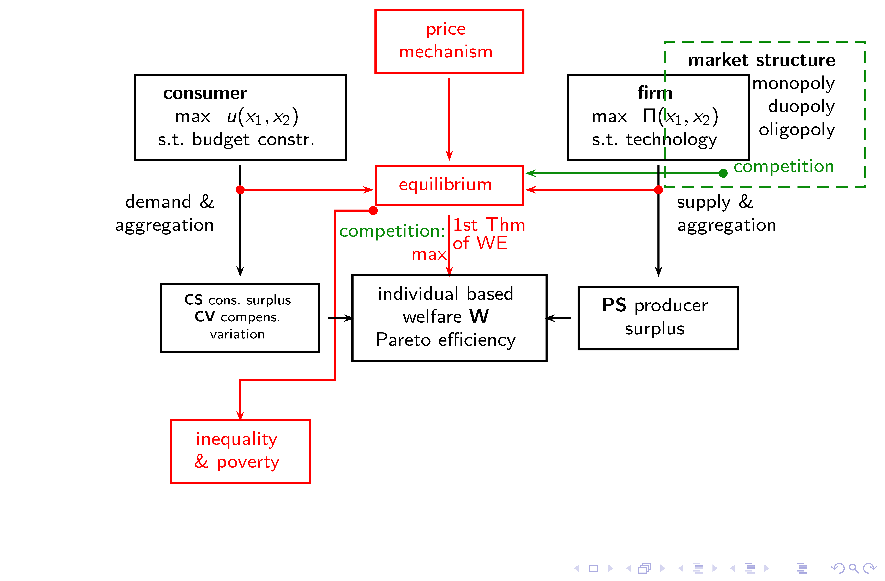
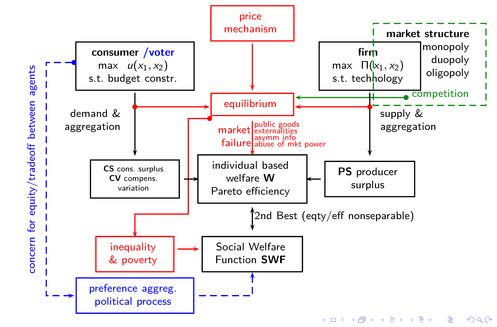
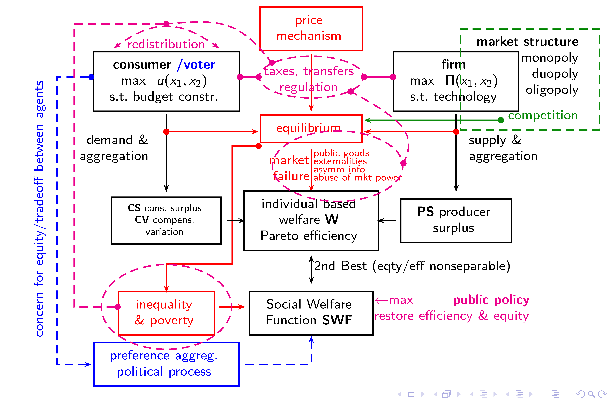

About
Preface
These are lecture notes for selected parts of the University Minor Economics course “Choices, Inequality, and Welfare” at Vrije Universiteit Amsterdam. These notes do not purport to have the same quality, scope, detail and ambition level of an established and published textbook, but rather provide a summary view. We point to reading elsewhere, so the reader can bridge gaps that we may leave, or find alternative exposition of similar material.
We focus on modeling aspects, cutting short on contextual stories. Such context is typically provided in principles-level texts. Economic modeling, on the other hand, tends to be heavy on the math (and stats) side, but we try hard to make things easy. We make extensive use of visualizations.
What we offer in these notes is partly new and experimental, in particular when it comes to graphical exposition. Our graphs make use of the graphing calculator available at desmos.com.
Graphs or diagrams are visualizations of models. Consider a policy maker that wants to know how changing the excise tax rate on gasoline can change consumers’ choice of transport mode. Currently the excise tax is 80 cents, and it can be measured how much people drive in their cars and use their bicycles. A model can help making an informed prediction for scenarios that have not yet materialized, for instance an increase of the tax to 100 cents. The model may have a number of mathematical equations that depend on parameter values. In economics, model solutions are often (but not always) equilibria. Equilibria help making predictions about economic outcomes. Graphs show in many cases an exact model solution given concrete parameter values, such as the tax rate. Policy makers can then be conceived of being interested in and able to change those parameter values with the aim of influencing economic outcomes. Unlike the usual textbook readings where economic diagrams representing generic modeling aspects are shown as static examples, our graphs are based on parameterized models and based on particular mathematical specifications. Changing the parameter values gives you a direct quantitative idea on how the outcome of interest is predicted to change.
Graphs or diagrams are important in economics. What we add is, actually, quite cool.
In the words of economists Mark Blaug and Peter Lloyd,
In many areas of economic theory, the way in which economists understand economic concepts and propositions is through figures and diagrams. What teacher of economic theory has not seen the dawn of understanding come over students when, failing to understand an exposition of some complex model in algebra or calculus, they are presented with a simple illustration?
One can comprehend relationships among a number of variables […] or the effects of shifting curves or multiple equilibria more readily than in the corresponding algebra. This advantage has been increased by modern technologies […] and the delivery of diagrams in classroom from computer-based programs allow overlays and other graphical techniques that aid the exposition of complex ideas.
Mark Blaug and Peter Lloyd, Famous Figures and Diagrams in Economics.
Cheltenham, UK: Edward Elgar Publishing. 2010.
We believe that Desmos is particularly suited in very heterogeneous groups with students of vastly different backgrounds and technical skill sets. Much of Desmos is geared at middle school kids, this fact alone may give you an idea that it won’t be impossible to learn or to grasp. We also find it fast and very reliable, there are no set-up costs, nothing needs installing, there are no fees to be paid, and you can use many of its features without even logging in anywhere (and even that is easy and for free).
Our approach has the following advantages:
- By offering concrete examples, we show you concrete model solutions, and partly also how they feed into a next stage of a layered model. For instance, once you know at stage 1 the solution to a consumer choice problem between car and bicycle use, you may want to know in stage 2 how the demand for car trips and bicycle trips changes with a change in the price of gasoline or in stage 3 how the individual decisions aggregate up to the market level.
- Students can change the parameters and then understand, in a playful way, how such a model parameter affects the graph, without having to go through the math. Comparative statics then comes easy.
- We believe playing with the Desmos examples is a highly intuitive and time-efficient way to grasp what are essentially mechanical aspects of an economic model. You’ll literally see the gears turn. A picture is worth a 1000 words, a moving picture perhaps a million.
- Students that want to do the math are encouraged to solve a particular problem (say, an optimization problem where a consumer rationally chooses between two goods) and compare it with the offered Desmos solution. If all is well the answers will match and you have a good check of your own work.
For these reasons, our approach has been awarded with the
- SBE Impact Lab Award 2022
- Learn Academy BKO/SKO Alumni Fund Award 2023
at Vrije Universiteit Amsterdam.
Of course, the approach may also have drawbacks:
- Readers will only see very specific examples. Economic theory, as developed and published in academic journals, goes far beyond such examples and characterizes solutions based on minimal mathematical assumptions (for instance, assumptions relating to convexity or differentiability of some function). Examples only offer limited insights, and not being aware of their limitations poses the danger of jumping to the wrong conclusion in slightly different contexts. In other words: pictures are no proof.
- Students may not feel the urge to dig deep and understand the mechanics of economic models at a deeper level, and they may feel less encouraged to read books.
These potential drawbacks notwithstanding, we hope that readers see the approach as complementing more abstract reading in economics, and apply the versatile toolset beyond course work. Even more so, we hope that reading textbooks gets easier when readers also can play along.
Our hope is that readers find what we offer here quite useful and have some fun along the way. Fun and economic theory hardly go together, but we try hard to make things accessible and digestible, especially for those that don’t have much of a knack for applied math. Students that want to go on and further specialize into economics (e.g., embarking a master’s program in economics), hopefully get encouraged to build a solid base.
Alternative Reading
These notes are much of a cookbook, showing examples, and serving as an overview. The flavor of it will be known from introductory courses. We illustrate, partly using “dynamic” (actually: comparative static) pictures that readers can manipulate directly, but we don’t require from students the mathematical or formal rigor that is found in intermediate level textbooks. Instead, we’re a cut below intermediate level, at something that may be appropriately categorized as intromediate (the term is borrowed from T. Cookson).
However, readers are encouraged to have a look at our complementary math notes (Review of Some Useful Math) that refresh some of the concepts we shall be using here.
What we cover here is a birds-eye view of a theoretical framework that took a century to develop, and we need to keep the exposition brief. Please consult good texts if you are to dig deeper or need more introduction.
Recommended textbooks that give a much better coverage are
- Hal Varian, Intermediate Microeconomics.
- Austan Goolsbee, Steven Levitt, and Chad Syverson. Microeconomics.
- Thomas Nechyba, Microeconomics.
- Preston McAfee, Tracy Lewis, and Don Dale, Introduction to Economic Analysis, version 2.1
The first two are standard microeconomics books. Students that prefer a good book may want to buy one of those. Nechyba is a very good alternative with excellent pictures (almost as good as ours \(\ldots\)). McAfee et al. is a freely downloadable open source book, but some students may find the algebra more challenging.
Disclaimer and Acknowledgement
Special thanks go to teaching and student assistants that have helped developing Desmos applications, and design of the present document. In particular Yingjie Huang, Julia Markusiewicz, and Francesca Schoenmaker.
All errors are mine, however: the present document contains almost surely mistakes, typos, omissions, jumps in logic, and other inconveniences. Please notify me of problems.
The document is certainly not optimized for all kinds of user experiences, and only provided as-is. It is best viewed on a laptop or tablet, not on a smartphone.
Amsterdam, October 28, 2024
Stefan Hochguertel
1 Introduction and Overview
1.1 Introduction
Choices, utility, demand, and welfare, and all are core economics concepts that you have heard about before. We review some of this and bring it together for our purposes. We first briefly review choices, and we restrict ourselves to a choice of a consumer between different compositions of a consumption basket. That basket may contain fruit (apples, bananas, cherries, dates, etc.) or anything else that we assume has value. So, the analysis sets out with a description of preferences, introduces the notions of indifference curves and then moves on to a mathematical concept called the utility function. The latter ‘measures’ satisfaction of the consumer with any given consumption basket. This is Chapter 2.
The next step is to bring resources into the picture, we focus on prices and incomes, both of which we take as given for the consumer. Prices and incomes are used to define a budget constraint under which the consumer makes her or his choices. Combining the information on the budget constraint with the information on preferences or utility, and assuming rational, optimal choice, allows us to derive the important relation between, on the one hand, quantity optimally demanded or consumed, and prices and income on the other hand. In particular, when we focus on one good and its price, and put those two variables on the axes of a graph, we speak of a demand curve (price typically on the vertical axis, quantity on the horizontal). This is Chapter 3.
The same section also explores a couple of other deviations that in some sense are about changes in income. One relates to the the relation between quantities demanded and income while keeping prices constant. So, in a diagram we would put income on one axis rather than a price and trace out the relation with quantity. Such a diagram is called an Engel curve. We can learn from it how the demand reacts to changes in income and measure so-called income elasticities. These are statistics that tell us by how many per cent the quantity demand changes when we increase income by 1 per cent. It might be that demand decreases, stays constant, increases or strongly increases with income.
The other deviation explored in the same section relates to the definition of income itself. The static consumer choice diagram that is taught in foundational courses suggests that the relation between price and quantity is of interest and that income is given. But whose income is actually given in reality? Most consumers are also workers and they generate their own incomes by earning a wage. Others are subsistance farmers that grow crop that they can consume and whatever they don’t consume is brought to the market and traded for money income. The latter example really makes clear that some people have, as it were, an endowment they could sell. Indeed, almost everybody has some durables they could trade on the second-hand market. How about labor earnings? If you think about it, you’d realize you also have a time endowment. You can sell some of your time to an employer instead of consuming leisure. These two examples are essentially about chosen or, as economists prefer to say, endogenous, incomes. A third example relates to choices over time, between periods. Analytically, there is no substantial difference with the standard consumer choice model, once we make a distinction between consumption today and consumption tomorrow as the goods we want to focus on.
Variation in prices and/or incomes brings about variation in the budget constraint, and, by implication, variation in the optimally demanded quantities. At the same time, as the composition of the chosen consumption basket changes, the satisfaction level that the consumer experiences (or, optimally can experience) may change. Such variation in satisfaction level offers a first gauge at what we may call change in consumer welfare. We may actually prefer to measure welfare changes expressed in monetary (or money or dollar) terms, using the analytical framework of rational consumer choice. Once we know, for instance, how large a drop in welfare a consumer experiences, if all of a sudden the price for heating gas explodes, our framework opens a route for analyzing what type of compensatory payments a policymaker could suggest to help consumers that feel squeezed. This is Chapter 4.
Economic analysis is very useful, apparently.
Markets bring together demand and supply, and similar to demand, supply can be derived from first principles. We’d be looking at profit maximizing firms and ask what is the best they can do when they buy inputs on some market (say, the labor market) and sell outputs on another, where outputs are obtained from using a given production technology. We also look at the trade-off between producing different goods when input supply is fixed. We keep that section brief and technical. It is Chapter 5.
Furthermore, we may want to go back to the price system (Chapter 3), and aggregate demands across consumers. This gives us market demand. We can then combine market demand with market supply, to find the market equilibrium set of prices that clears all markets. We can then determine consumer and producer surplus as some aggregate measure of welfare in the market. This is Chapter 6.
There are a couple of more things that can be done, after having analyzed a single consumer. We can consider more than one consumer. Start with two, helping us model an embryonic society. We return to the analysis of Chapter 2 and consider the preferences of two consumers, if they face the problem how to allocate a given amount of quantities of all goods (10 apples, 6 bananas) between them. That is, each consumer is to have his or her own consumption basket, but the total quantities summed over both baskets is fixed. How to allocate the goods optimally? This is analyzed in the Chapter 7 that introduces the graphical concept of an Edgeworth box. We state that consumers can find, by direct interaction and haggling, a Pareto efficient outcome that they cannot improve upon. Next to this type of exchange efficiency, there is allocative efficiency, that brings together the production with the consumption sphere.
Pareto Efficiency does not need market interaction, so it does not rely on a price system. Restricting social decisions in such a way that only Pareto improvements were considered, is very conservative in the sense that consumers are allowed to veto all changes that hurt them. That would leave limited scope for redistribution, even though the approach respects consumer sovereignty. How about, we take an apple from one consumer and give it to the other, without compensation? Sounds like socialism, but may be the right thing to do, if we live in a society that judges such policies fair under certain circumstances. In fact, this happens all the time with the income tax (that tends to tax the rich progressively, and where the poor typically don’t pay taxes but are at the receiving end of the redistribution chain). Doing so is a big intellectual leap from the framework discussed before, and we try to make clear why. We end up with an optimal (at least in some sense optimal) social choice that maximizes social welfare. This is Chapter 8.
Lastly, we reflect back on the implications of a market system for Pareto efficient allocation and for social welfare optimality in Chapter 9. These are The Fundamental Theorems of Welfare Economics and The Second Best. Whereas the Fundamental Theorems allow the optimistic prediction that markets can efficiently allocate scarce resources in a way that also the government cannot improve upon, and that can implement any government-selected target allocation, the Second Best allows for a slightly more practical approach and realistic view.
1.2 The Microeconomic Model: An Overview
Much of what we have covered so far is summarized again in the diagram we present below in this section. The model sketched is much of a work horse model for theoretical underpinnings of economic policy making, and it can be generalized to many consumers, firms, goods, inputs, it can be generalized to take intertemporal decisions into account and risk or uncertainty. Yet, a couple of big issues are not covered, and they have much to do with market failure: deviations of real-world markets in terms of efficiency, or equity, that everyone is aware of, and that critics of the market mechanism will always point out.
The first area of policy concern relates to poverty and inequality. Clearly, the model so far does not promise much in terms of markets getting rid of poverty or reducing inequality, since political or philophical views are important. We cover in Chapter 10 how one might measure poverty and inequality in a statistical but also economically meaningful way, using data on income or consumption of individuals and households. This does require a bit of statistics background, and readers are advised to consult their statistics books on occasion. Our approach stays mainly graphical, however. We discuss things like Lorenz curves, Gini coefficients, and statistical poverty measures. We also touch on policies to change inequality and poverty outcomes. In particular, we consider simple income redistribution and policy options to help people getting out of poverty. The importance of the tax and transfer system will be stressed, which not only shifts resources from the rich to the poor, but also may give the wrong incentives to individuals to keep working and pay income tax.
The second area of policy concern relates to public goods and externalities. Those are very important concepts when trying to understand environmental pollution, international coordination, and combating climate change. We introduce public goods as goods that are non-excludable in use and non-rivalrous in consumption in Chapter 11. This means they can be used by anyone “for free” (no-one can be excluded to pay a usage fee or an entrance ticket) but they can also benefit everyone since usage of one person does not infringe upon the usage by other persons. The market will typcially not, or not adequately and not efficiently provide such goods. The problem gets deeper to solve when we consider transnational or global public goods that require international policy coordination. We know from following the news that such coordination is slow and incomplete. We show why. There is some hope, however, within the boundaries of a country to use policy instruments to reduce pollution or increase abatement through a pollution tax or an emissions rights market system. We explain the mechanics of such approaches.
The third area of policy concern relates to market power. The introductory model emphasizes the need for competitive behavior in order to achieve efficiency goals. Many industries are non-competitive, however, they have the possibility to charge mark-ups on top of marginal costs. Readers will be familiar with the standard monopoly model, and Chapter 12 also reviews it briefly, but then extends to cases where a monopoly is the best we can hope for, as there is no viable way to introduce competition (so-called natural monopolies). This calls for regulation as policy task of the government. If some limited form of competition can be introduced, we can study a model with two firms that compete. These are duopoly models that focus on strategic interaction and use game theoretic concepts. We consider price competition, and competition in quantities. Both these models have very different policy implications. Lastly, we consider a game in which firms move sequentially.
The fourth area of policy concern relates to risk and insurance. The economic modeling toolset allows to take into account rational decision making when inputs to or outcomes of a decision are uncertain. Modeling can advance under the assumption that the uncertainty can be quantified by means of statistical distributions. We introduce the notion of expected utility, and discuss what relation it has to preferences with respect to risk in Chapter 13. Economic agents can be risk-averse or risk-loving, perhaps, and such preferences will drive the demand for insurance. We explain how a very simple insurance model works, and how it can achieve efficient allocation under risk. This is all good and well and might suggest that markets can take care of dealing with risk. But the real world is more complex, and part of the issues why insurance markets fail, or are perhaps even absent, have to do with asymmetric information. This means one party to a business deal knows more about essential aspects than another. The asymmetry will be exploited by the better-informed party, leading to market outcomes that are less than efficient or even fully inefficient. The institutional policy response is to set up social insurance systems that try to prevent the inefficiency to take hold.
The short overview to follow uses tab sets. Click on the various tabs to see how explanations and the contents of the diagram change.



2 Preferences
2.1 Preference Relations
Consumption choices are typically analyzed as the result of a decision where a consumer considers a set of available items—we call them consumption baskets or consumption bundles— and evaluates them in comparison according to her or his preferences. In Figure 2.1, the red and the blue dot are two such consumption bundles, with indicated quantities of the two goods measured along the axes. If we are to predict whether the consumer prefers the red or the blue bundle, we would need to restrict the preferences (without a restriction, there is nothing we can say).
A natural starting point may be to say that both goods are “good” in the sense that the consumer likes them, so we may make the assumption that “more is better”. This can be illustrated using better-than sets (areas that contain consumption bundles that are better because they contain more units of at least one of the goods) for both goods.
We limit ourselves unnecessarily if we are to only consider two bundles in which one has more units than the other. We must also require that the consumer can compare situations in which, say, the blue dot lies to the north-west of the red dot, so there is an implicit trade-off between the two goods. We then need additional assumptions in order to describe the preferences and predict what the consumer will do. Before getting there, we need to assume that the consumer is able to compare any two bundles, no matter how much or little of any good they contain. This assumption is called completeness. Any two bundles can be ranked in terms of preference (better, worse, same).
In addition, we require certain consistency in choice, in particular we assume transitivity. Consider three bundles, A, B and C. If the consumer likes A better than B, and B better than C, then we want to conclude that she or he also likes A better than C. For if not, the consumer might cycle forever between the bundles, or, if choice is made sequentially (A vs. B, then B vs. C), the choice would depend on the order in which the comparisons are being presented, and the choice would be revised once we check back (C vs. A). Choices would then be intransitive. We rule this out by assumption.
We have
They seem to be reasonable and relatively mild assumptions, but it is easy to get real consumers puzzled once you actually present them with (real or hypothetical) choices. Consumer rationality implies that the consumer can make an internally consistent choice for herself, under any circumstances.
On to more assumptions. The “more is better (or at least not worse)” assumption discussed above is called monotonicity (and sometimes authors prefer to refer to non-satiation or local non-satiation, meaning you’ll never have enough, one cookie more is always preferred to not-one-cookie-more). It is sort of intuitive that this is a stronger assumption than the rationality assumptions (at some stage, that extra cookie does make you feel queasy).
Another often-made assumption is that of convexity, meaning mixtures of bundles are preferred to non-mixtures of bundles. You can try to get a feel for what this entails by looking at Figure 2.2 and considering whether it makes sense to prefer the green dot (that has 50% of all quantities of A and of B) rather than the blue or the red dot. You may also deviate from the 50:50 mixture by moving the green slider.
Lastly, we may want to assume that consumer satisfaction from consumption bundles does not change drastically if we change the content of the basket only very slightly (i.e., a crumble more, as opposed to a whole cookie). This assumption is called continuity.
In summary, we have
Good textbooks in microeconomics will dwell extensively on the motivation of these fundamental assumptions (sometimes called axioms, specifically, axioms of choice), since all that follows will be based on them. We cut this short here.1
2.2 Indifference Curves
From the five underlying assumptions we can derive indifference curves. These are all combinations of bundles that give the same level of satisfaction. Take a look at Figure 2.3. Start with two points in which the consumer prefers A to B. Then change the composition of one of the points so she prefers B to A. In between, there will be a position where, despite A and B having different compositions, the consumer really cannot tell which bundle is better. In that case, she is indifferent between A and B. We can conceive of many such points when we consider all types of bundles, and connect the ones for which the consumer is indifferent. We might end up with a picture like this that shows indifference between the numbered bundles 1 through 5.
Figure 2.3 also illustrates the convexity assumption, as point F is really a mixture of bundles 2 and 4. Whereas the consumer is indifferent between bundles 2 and 4 (and 1, 3, and 5), point F will be preferred to any of them. This can be seen from considering bundle 3 and invoking the monotonicity assumption (more is better): F will be (strictly) preferred to 3.
The shown points are just 5 examples, and they all have in common that the consumer has the same satisfaction level. We can consider a second set of points, in Figure 2.4 in red, that among them also yield the same level of satisfaction and hence are on an indifference curve of their own. When we compare the blue and the red curve, we see that the red is to the north-east of the blue, so we can always consider movements from a blue point in the north-east direction to some point on the red curve. As north-east means more of both \(x\) and \(y\), we prefer the red point to the blue, owing to monotonicity.
This way, we can draw a million indifference curves, each indicating their own level of satisfaction.
2.3 Utility Function
The previous subsections showed consumption bundles as combination of (physical) quantities of different goods. In our figure these were the dots. We compared them using some valuation that we related to the term satisfaction. What mattered was whether satisfaction with one bundle was higher than, lower than, or about equal to the satisfaction with another bundle. We could go a step further and ask: what if we could express the level of satisfaction numerically, with a higher (numerical) valuation indicating a higher level of satisfaction? We could then label the various bundles by that valuation. This is what Figure 2.5 does.
Mapping out indifference curves using pairwise comparisons of consumption bundles is a cumbersome process. With a little imagination and mathematics we can simplify the procedure. First, a definition: a utility function is a mathematical function that represents consumer preferences. It attaches to each consumption bundle a numerical value of a satisfaction level, which we shall call utility henceforth. We entertain the convention that a higher number of utility means a higher level of satisfaction. This is, in fact, just what Figure 2.5 did. And in Figure 2.2, we could attach utility value of, say “5” to the blue indifference curve, and some higher value, say “7” to the red one. This is actually all we need to say. We rank indifference curves and ranking only means utility goes up towards the north-east between the indifference curves. Whether the number associated with the red curve is actually “7” or “6” or “5.00000001” or “8746237839” is immaterial, as long as the ranking is preserved.
As a mathematical function, the utility function has as arguments (inputs) the quantities on the axes of our graph, and we write it as \(u(x,y).\) That is, function \(u()\) returns a value based on the measurements of \(x\) and \(y\).
Here is an example of a utility function \[\begin{equation} \label{eq:u1} u(x,y) = 0.5 x + 0.5 y \end{equation}\] and an indifference curve at utility level 1 could be written \[\begin{equation} \label{eq:u2} u(x,y) = 1. \end{equation}\] This second equation is an implicit function of \(x\) and \(y\). It means: define all values of \(x\) and \(y\) for which utility \(u(x,y) = 0.5 x + 0.5 y\) is equal to 1. If we substitute the expression in \(\eqref{eq:u1}\) for \(u()\) in \(\eqref{eq:u2}\) and solve for \(y\) as a function of \(x\), we obtain \[ {y = 2-x}.\] This is a straight, downward-falling line with slope \(-1\) and illustrated in Figure 2.6.
2.4 Examples of a Mathematical Utility Function
Economics often uses two functions to illustrate preferences (utility functions) or technology (production functions) that are good to be familiar with. They are the
- Cobb Douglas (CD), and
- Constant Elasticity of Substitution (CES)
functions.
For a utility function defined for two consumption goods \(x\) and \(y\), Cobb Douglas specifies \[\begin{equation} \label{eq:cd} u(x,y) = x^{\alpha}\ \cdot\ y^{1-\alpha}. \end{equation}\]
The Cobb Douglas function has one free parameter \(\alpha\) that determines the shape of indifference curves.2 Figure 2.7 shows a set of indifference curves and you can play around with the picture by moving the slider. You can then see how preferences tilt one way or the other towards one of the goods. Note that the utility level is in the third dimension. To aid understanding, we have color-coded the curves, giving the higher levels of utility a darker hue.
A variation is obtained after taking natural logarithms on both sides (denoted \(\ln()\)):3
\[\begin{equation} \label{eq:cd2} v(x,y) = \alpha \ln(x) +\left(1-\alpha\right)\ \ln(y). \end{equation}\] Note that the utility values change, but the shape of the level curves actually does not. Hence, just from looking at Figure 2.7 we cannot tell whether the utility function in \(\eqref{eq:cd}\) or in \(\eqref{eq:cd2}\) applies.
The CD function is an easy one. It only has a single parameter \(\alpha\) in our specification, and is simple to manipulate algebraically. The flip side is, it is not very flexible, if we are to describe implied choices that model agents with such preferences would make.
The CES function is more complex, as it has two free parameters \(a\) and \(s\) that determine the shape of indifference curves. \[\begin{equation} \label{eq:ces} u(x,y) = \left(ax^{\frac{s-1}{s}}+(1-a)y^{\frac{s-1}{s}}\right)^{\frac{s}{s-1}}. \end{equation}\]
Parameter \(a\) signifies the consumption share between goods \(x\) and \(y\), whereas \(s\) is the curvature (or bendiness) of the indifference curves. This latter parameter is particularly interesting. Unlike the Cobb Douglas function, where the indifference curves are of the same shape type and can only tilt, the CES allows getting towards two extremes: perfect substitutability (if parameter \(s\to \infty\)) and perfect complementarity (when \(s\to 0\)). Figure 2.8 invites you to play and confirm that you can generate many more shapes of indifference curves than in the CD case.
\(s\) is a constant and known as the “elasticity of substitution”, hence the name of the CES function. This term describes mathematically the ease at which a consumer is willing to incur small changes in the composition of the consumption basket without leaving the current indifference curve (i.e., while keeping utility constant). In principle, an elasticity is a local concept.4 The fact that this elasticity is constant simply means it has the same value anywhere on an indifference curve.
2.5 The Mathematical Utility Function in 3D
Specifying a mathematical function \(u(x,y)\) to obtain a (set of) indifference curve(s) is a very powerful idea. It condenses a point-by-point description of indifference relations to a single and typically short mathematical expression. Consider infinitely many utility levels, that are all captured by this single expression. This seems very efficient, indeed. We say that the utility represents the preferences between bundles, but in practice we proceed as if they were the same (and not just with the same level of preference).
An expression like this (again involving the natural logarithm \(\ln{()}\)): \[\begin{equation} \label{eq:uln} u(x,y) = \ln{(x)} + \ln{(y)} \end{equation}\] is a 3-dimensional object, since we have 2 input variables and one output variable (the utility number). Hence, the indifference curve map is actually nothing but a 2-dimensional representation of the 3-dimensional utility function. Very similar to a topographic hiking map with elevation contours. 3D objects are harder to graph, however, certainly with pen and paper. That’s one reason why you almost never see them in economics, except here.
Figure 2.9 shows a 3D version of the utility function \(u(x,y)\) to illustrate the connection between indifference curves and the utility function.
2.6 Levels: Cardinal and Ordinal Utility
Utility values reflect the level of satisfaction, to some degree. Yet, even though higher values of utility mean more satisfaction, there is no intrinsic meaning to the levels themselves. A hiking map gives you an indication that you are on 1,000m above sea level, and moving to 1,100m means you’re measurably higher up by 100m. Conversely, going from utility level 5 to 10 does not mean satisfaction has doubled. It just got higher. There is also no origin. So, we could start measuring utility at \(-5,000\) and go to \(-4,999\) to find we have improved.
This property that only ranking matters but not the level and scale is because the measurement is ordinal and not cardinal (as with height, temperature or speed). We don’t need cardinal utility, at least not here. This is important to keep in mind.
Ordinality also implies that, once we work with a utility function, we can subject that function to all kinds of monotonic transformations. A monotonic transformation entails that we use utility as an argument inside a function that preserves the ranking but not the numerical values of valuations associated with a given consumption bundle.
Since there are many ways to produce the same ranking using different scales, we may also want to realize that it will be difficult if not impossible to compare preferences directly between people. Our modeling approach does not assume that we can do so.
2.7 Shapes: Marginal Rate of Substitution
Substitution is a core concept in economics. In the context of the consumer it means the individual is willing and able to substitute one good for another while keeping her or his utility level constant. Clearly, the consumer must get enough back of the second good if she or he gives up one unit of the first good. This is what substitution entails.
Let’s go back to the more familiar 2D case. The utility function has all the information in it that is needed to fully describe preferences, and can easily be used to construct indifference curves. Indifference curves, on the other hand, are fundamental for economic analysis. We can characterize indifference curves by their shapes, possibly in words, and once we know the functional form of utility, also in terms of their mathematical properties. For instance, we can look at their slopes. The axioms of choice imply that indifference curves are weakly downward falling (weakly meaning they could be horizontal), at a nonincreasing rate. So, we know that indifference curves must have a negative (or zero) slope, and that they get flatter (or stay constant) as we increase the number of units of one of the goods. See Figure 2.7 and Figure 2.8 for CD and CES preferences.
In economic terms, the slope of the indifference curve tells us how much of one good (say, good \(y\), perhaps measured along the vertical axis of our diagram) the consumer is willing to give up in exchange for one marginal unit of the other good (say, good \(x\), measured along the horizontal axis), while staying indifferent to the trade. After all, since we move along the indifference curve, utility stays unchanged. Importantly, while accepting such a trade, the consumer substitutes between \(x\) and \(y\).
The MRS includes the two key words marginal and substitution. Marginal, because we consider very small (calculus jargon: infinitesimally small) changes, and substitution because we replace one good with another. The first expression in \(\eqref{eq:mrs}\) writes the MRS as the ratio of marginal utilities \(MU_x\) and \(MU_y\), that is, how utilities change when we give the consumer an extra miniscule quantity of good \(x\) (or, of good \(y\)). The second expression writes those marginal utilities as partial derivatives. The MRS is then a function of both \(x\) and \(y\). In general, the MRS is a local concept, meaning that it is impacted by where we are on an indifference curve.
The MRS is a core concept in economics. It is a measure of willingness to give up, of how much quantity of one good the consumer is willing to relinquish in exchange for more of another good. With our continuous and convex indifference curves, consumers are always willing to trade a bit of \(x\) for some \(y\), the only question is, how much of \(y\) is needed so that they stay exactly on their original indifference curve.
Let us close with an example based on \(\eqref{eq:uln}\) and \(\eqref{eq:usqrt}\).
In particular, the second property is important. It shows that we cannot characterize the levels of utility when we have fully characterized the indifference curves. If you remember what we said before about ordinal utility functions, things perhaps become clearer: the utility function in itself describes the relation between the level of utility and the combination of goods; however, that level is immaterial under the ordinal paradigm.
Figure 2.11 illustrates the MRS for the utility function \(\eqref{eq:uln}\), and how it changes when the movable dot is shifted along the shown indifference curve.
Users may want to count the squares in Figure 2.11 to check that the displayed MRS is indeed equal to the ratio \(y/x\), and that the same obtains if the utility function were to be changed to \(\eqref{eq:usqrt}\) (click “edit graph on desmos” in the lower-right corner of Figure 2.11; 3 lines of code need to be changed).
3 Consumer Demand and Supply
3.1 Demand Function from Constrained Maximization
Utility maximization directly results in consumption demand. Maximized utility yields optimal quantities demanded, when prices \(p_x, p_y\) and income \(m\) are given. So, mathematically, we write \[\begin{equation} \label{eq:umaxproblem} \max_{x,y}\;u(x,y) \quad \text{s.t.} \quad p_x\cdot x+p_y\cdot y = m \end{equation}\] which reads: maximize utility by choosing \(x\) and \(y\) such that expenditure \(p_x\cdot x+p_y\cdot y\) equals income \(m\). The latter (s.t.) is a constraint. In economic terms we call this a budget constraint, stipulating that consumers cannot spend more than the income they have. They could however spend less. This will not make much sense in our model since there is no future and hence no need for saving for tomorrow. On top of that, under the ‘more is better’ assumption, fully exhausting the given budget is a necessary condition for achieving a level of utility that is as high as possible (for if there was a dollar left to spend, it better be spent on commodity units that increase utility).
If we solve the mathematical problem \(\eqref{eq:umaxproblem}\), we get demand functions \(D_x\) and \(D_y\) that relate the quantities demanded of \(x\) and \(y\) to the underlying parameters: \[\begin{equation} \label{eq:demx} x = D_x(p_x, p_y, m) \end{equation}\] and \[y = D_y(p_x, p_y, m).\] These are optimally chosen quantities demanded by a rational, utility-maximizing consumer, when prices and income are given.
Slide the green dot in Figure 3.1 to explore how the slope of \(u(x)\) changes with \(x\). Do this very slowly in the vicinity of the maximum. If you do the exercise, you will notice that the utility maximization is achieved where \(x=5\). Since \(p_x=0.5\), the consumer spends half of his or her income on \(x\). We say that the budget share that goes to good \(x\) is \(0.5\). This will be the case for any combination of prices and incomes, actually, as you can easily verify. For instance, change the slider of \(p_x\) and determine the new optimum. What is the budget share of good \(x\) at your new \(p_x\)? Similar exercises can be done changing \(p_y\) or \(m\). To do so, click on “edit graph on desmos” in the lower-right corner of the figure. Then trace out how the maximized utility of \(x\) depends on \(p_y\) or \(m\) (open the sliders folder and change those parameters).
We shall provide further intuition for Figure 3.1 in class.
The next step is to vary the price \(p_x\)—this changes the value of the budget constraint and hence the function \(\eqref{eq:usqrt1}\), and we would need to reoptimize. In Figure 3.1, this is easy to do: slide the \(p_x\) slider. Then find that the optimal \(x\) decreases when increasing \(p_x\). This helps tracing out the relation between \(p_x\) and \(x\), known by its popular name demand function. We get back to this shortly.
3.2 Optimization Redux
An alternative approach to maximizing utility is to consider a figure like Figure 2.9 again and realize that the straight line has all the features of a budget constraint constructed using prices \(p_x\), \(p_y\), and income \(m\). Its (absolute) slope is the relative price ratio: \(\frac{p_x}{p_y}.\)
In the optimum, the slope is equal to the MRS, that is the slope of the indifference curve, since the latter is tangent to (just touches) the constraint. So, we can claim that in the optimum the following must hold \(MRS = \frac{p_x}{p_y}.\)
We now use \(\eqref{eq:mrs}\) and write \(\frac{MU_x}{MU_y} = \frac{p_x}{p_y},\) rewritten once again as \[\begin{equation} \label{eq:muxismuy} \frac{MU_x}{p_x} = \frac{MU_y}{p_y}. \end{equation}\]
This latter formulation may be familiar as it says that the real-valued marginal utilities between consumption goods need to be equalized, or, using an example, that the last dollar spent on apples must increase your utility to the same extent as spending the last dollar on bananas. For if not, you would be better off allocating the last dollar to the good that promises a higher marginal utility.
Recall that \(\eqref{eq:muxismuy}\) is just one set of conditions: there are many combinations of \(x\) and \(y\) that comply with the requirement. However, with a given budget constraint only one of them actually applies. In other words, we still need to combine the optimality condition \(\eqref{eq:muxismuy}\) with the budget constraint \(\eqref{eq:bc}\) to arrive at the full solution. This is a matter of applying a little algebra.
Technically inclined readers may want to have a closer look at Exercise 3.4 which illustrates optimization for the case of Cobb Douglas utilities.
3.3 Graph of Demand Function
The graph of a demand curve for \(x\) based on the 4-dimensional(!) function \(D_x(p_x, p_y, m)\). However, the function is typically denoted as \[x = D_x(p_x)\] where price \(p_y\) and income \(m\) have been set to particular values. The relation between \(x\) and \(p_x\) is typically a downward-sloping curve.
It is also customary, when focusing on just one variable like \(x\), to drop the subscripts and just write \[x = D(p).\] This is a bit of a lazy notation, since it makes you forget that demand actually depends on all prices, and on income as well. Conversely, if you were to change \(p_y\) or \(m\), a new graph of \(D_x(p_x)\) would be required: a parameter that is not measured along one of the axes may ‘shift’ the entire graph.
It is customary to depict the graph of \(x = D(p)\) with \(p\) on the vertical axis and \(x\) on the horizontal. This has historical reasons and is a part of economics culture. We need to adapt to this convention, even if it causes initial confusion.7
To construct such a graph from first principles, we first construct a consumer choice diagram with indifference curves and a budget constraint, at some initial price ratio, with price of \(x\) at some concrete value of \(p_x^1\). Then, we determine the optimally chosen quantity \(x^1\) (at which one of the indifference curves just touches the constraint). Then, in a second diagram with \(x\) and \(p_x\) on the axes, we mark the point \((x^1, p_x^1)\). Then, change the price of \(x\) to some other value \(p_x^2\), determine \(x^2\) and mark point \((x^2, p_x^2)\) in the second diagram, and so on, until there are enough many points to discern the shape of the demand function when connecting the dots.
This purely graphical, comparative-static way is a little cumbersome, so doing the math can save a lot of work. It makes one thing clear, however: the shape of the demand function is influenced by the shape of the indifference curves.
3.4 Endowments
Consumers not only go to the shop and buy goods—they also sell. They may have a used bicycle they sell on the second hand market or some old furniture they trade on ebay. Analytically, we can treat this very similarly to what we’ve done so far, once we realize that the value of goods the consumer is equipped with—called an endowment—is equal to the price-weighted sum of the possessions.
Denote the endowment quantities of \(x\) and \(y\) by \(x^e\) and \(y^e\), respectively, then \(p_x\cdot x^e+p_y\cdot y^e\) is the money value of items already belonging to the consumer. They can be added to the money income \(m\) and the budget constraint. Comparison with equation \(\eqref{eq:bc}\) will then yield \[p_x\cdot x+p_y\cdot y = m+p_x\cdot x^e+p_y\cdot y^e\] or, alternatively, \[p_x\cdot (x-x^e)+p_y\cdot (y-y^e) = m.\]
The consumer will sell some of the good she or he has relatively plenty of (giving rise to \(x-x^e<0\)), compared to the optimal choice, and use the proceeds to buy more of the good she or he has comparatively little of (implying \(y-y^e>0\)).
We have assumed that the price of something you sell on the (second-hand) market is the same as the price you would have to pay for the same (or a very similar) item on the market. The structure of the problem is the same as before, and the solution is conceptually not more difficult. We only have to drag along a couple of extra parameters \(x^e\) and \(y^e\).
One important difference will emerge when making a picture: with an endowment point, a budget constraint will pass through that endowment. Figure 3.4 illustrates, with \((x^e, y^e)\) inserted as a red dot. The constraint swivels around it if we are to change any price. Move the point on Figure 3.4 to see what happens when the endowment point moves with given prices.
You can shift the endowment point in Figure 3.4 along the BC. Such a shift implies, however, adjusting the money income accordingly. Endowment and money income are perfect substitutes in the graph. Holding \(m\) constant would imply the entire BC to shift with the endowment.
3.5 Piecewise-Linear Budget Constraint
To reiterate, we have just assumed that the price of something you sell on the (second-hand) market is the same as the price you would have to pay for the same (or a very similar) item on the market. This involves just a little change of notation without substantive complication.
However, often things sold fetch different prices than things bought, for various reasons. Buy a new car, drive it for a mile and sell it, you’d have to accept a huge discount. Lend your bank $10,000 and earn 1% on it per year, but borrow the same amount from the same bank and pay 10% in interest per annum. Such differences suggest that the prices depend on the direction in which you leave your endowment point. Figure 3.5 shows a number of budget contraints with an endowment point (red circle) that are constructed with a price difference (wedge) between buying and selling. The budget constraint is then piecewise linear, with a kink at the endowment. Note, however, that we can also conceive of piecewise linear constraints whose kink points are not endowments.
Mathematically, such kinks are points of nondifferentiability, implying our simple calculus based on \(\eqref{eq:muxismuy}\) is inapplicable. Mathematical economists have algorithms ready that take such difficulty into account, but since we focus on diagrams, we can get intuition on how to proceed from the picture.
The left diagram in Figure 3.5 has a convex budget set (the set underneath the constraint), with a flatter arm to the left and a steeper one to the right of the kink. The MRS is higher than the relative price everywhere on the left arm. The MRS is lower than the relative price everywhere on the right arm. Depending on the shape of the indifference curve, it could happen that an indifference curve just touches the constraint in its differentiable part, then the usual mathematical approach goes through. But it is quite possible that the kink, since it sticks out, is actually the optimal solution, simply because the kink point is on a higher indifference curve than any of the other feasible points on the constraint. And in the end, what matters for rational choice is the level of utility.
The middle diagram in Figure 3.5 has a non-convex budget set. Here, indifference curves are such that the kink is on a lower level of utility than some points to the left or to the right of it. Hence, the kink point is not optimal and will not be chosen. Instead, the indifference curve and constraint are such that two optimal points can be found, giving rise to an ambiguity known as multiple equilibria. This makes actual choice hard to predict. At each of the optimal points, the marginal condition will hold.
The right diagram in Figure 3.5 has a non-convex budget set with two kinks, one of them convex, the other non-convex. Indifference curves are such that the convex kink is associated with the highest level of utility among all feasible points. But note that only a small perturbation of the slopes of the budget constraint or the location of the convex kink could lead to choice jumping to an interior point on the left arm of the budget constraint where the marginal condition holds.
3.6 Labor Supply
One of the markets where endowments really matter is the market for labor. In this case, your endowment is the time you have at your disposal (24 hours, every day of the week). You can literally sell this time on the market against a wage.
The intuition can be had from Figure 3.6, where we have the quantity of a consumption good on the vertical axis and leisure (measured in hours) on the horizontal axis. Leisure time and consumption increase utility.
The endowment point is the point \((T_{max},0)\); that is, consuming leisure can be done maximally at \(T_{max}\) hours a day, with the consumption endowment equal to zero. The consumer values leisure and despises work, but can be made to work if it allows for higher consumption possibilities. Labor supply (measured in hours) equals whatever is left of time after having chosen leisure, that is, \(T_{max}-\)leisure hours.
The consumption good on the vertical axis has a price of 1, so we forget about it. The (absolute value of the) slope of the budget constraint going through the endowment point is then \(w\), which denotes the hourly wage rate. This is really the opportunity cost of leisure: an hour not worked costs you 10$ if your wage rate is 10$. The true cost of Netflix is not the monthly subscription fee, but the foregone income.
Figure 3.6 shows a budget constraint, a few indifference curves, and the optimally chosen point; the indifference curve passing through the optimum is marked in green. The initially chosen point is the endowment, where the consumer prefers not to consume the consumption good at all and spend all of the available time on leisure activities.
Figure 3.6 is drawn for a special case, as it implies a so-called ‘backward-bending’ labor supply curve (hours worked as function of the wage rate), where labor supply increases from a low wage, until a certain point, and then slightly decreases again as the wage gets very high. You can construct such a labor supply curve in the same way as you’d graphically derive a demand curve (see Section Section 3.3).
One of the additional insights that the labor supply model offers is that incomes (labor earnings) are also chosen, and not just a given parameter (as was \(m\) in our previous model). In this view, prices are more fundamental than incomes to a consumer, and incomes result from optimal choices given prices (including the wage rate).
4 Measuring Consumer Welfare
4.1 Comparative Statics
Demand for a particular good is a function of all prices and income (and sometimes of endowments). This helps us predict how a rational consumer’s demand will change once we alter any of the parameters. Some of the parameters shift through changing market conditions, like certain goods getting more expensive, and some parameters shift through economic policy (income tax, or taxes on specific goods, for example). Analyzing such changes in our static model is called comparative statics, since it compares outcomes in static equilibria. We now change income and prices.
4.2 Income Shifts and Engel Curves
Changing incomes is most straightforward when analyzing the effect on demand. We obtain so-called Engel curves that give us a relation between consumption demand and income. Importantly, the relation is the same as our optimized function we looked at earlier, \[x = D_x(p_x, p_y, m)\] but now we keep \(p_x\) and \(p_y\) fixed and only vary \(m\). So, we might as well write: \[x = D(m).\] In many cases, higher incomes are associated with higher consumption. So, we can do the comparative statics by changing the value of \(m\) and draw the Engel curve in a diagram that collects the optimal \(x,m\) combinations (with quantity and income on the axes).
Using Engel curves can be insightful if consumption of specific expenditure categories is considered. For instance, it will be interesting for policy to be informed about the relation between income and food consumption. Calculating the budget share spent on food and plotting it against income may give rise to Engel’s Law, an empirical regularity showing that the food share decreases with income. That means, whereas households with low incomes may spend absolutely less on food than households with middle or high income, the low income earners spend more relatively. This is because food consumption is one of the first needs that households have to address, purely to meet nutritional requirements.
4.3 Income Elasticities and Nomenclature
Characterizing Engel curves in terms of their generic properties (increasing, decreasing, etc.) can be done locally using the concept of elasticity. This elasticity is a statistic (or number) that tells us by how many percent demand changes when we increase income by 1 percent. We can define it by considering discrete or continuous changes (favoring calculus, we prefer the continuous case):8
\[\eta^D_m (x) = \frac{\mathrm{d} D(m)}{\mathrm{d} m} \cdot \frac{m}{x} \approx \left. \frac{\Delta D(m)}{\Delta m} \right/ \frac{x}{m}.\]
The letter \(\eta\)9 is used as symbol for elasticity, the superscript \(D\) refers to demand, and the subscript \(m\) to income.
Depending on the sign and size of \(\eta^D_m\), it is customary to attach certain adjectives to the good in question to characterize them, see Table 4.1.
| Characterization | Example | \(\eta^D_m\) |
|---|---|---|
| inferior good | fast fashion | \(<0\) |
| normal good | clothing | \(\ge 0\) |
| necessary good | socks | \(0-1\) |
| luxury good | designer handbag | \(>1\) |
Examples are for illustration only and may not hold in all circumstances.
4.4 Income and Substitution Effects of Price Changes
Changing prices is a little less straightforward when analyzing the effect on demand. First, there are many prices to consider (at least two in our model). We can change any of them, but let’s focus on changing \(p_x\) when analyzing the effect on the quantity demanded \(x\). Second, there are two effects on the demand for \(x\) from a change in \(p_x\). Consider a situation when restaurant food gets more expensive. Then (a) consumers have lower purchasing power, real incomes decrease; that’s the income effect discussed before (but now due to a price change); and (b) restaurant food becomes relatively more expensive compared to other goods, so consumers might substitute away and allocate their money differently (for instance, eat more at home); that is the substitution effect. Income and substitution effects may go in the same, or in the opposite direction.
Figure 4.1 shows a consumer choice diagram and gives an example of income and substitution effects for the quantities of \(x\) when the price \(p_x\) doubles. The underlying utility function is a Cobb Douglas specification. The chosen bundle before the price change is point A, after the price change point B, and C is a virtual point that helps clarify how to determine income and substitution effects.
A virtual point is a point from a thought experiment. It cannot be observed directly. Point C in Figure 4.1, for instance, lies outside whatever the consumer is able to buy with his or her income, before and after the price change.
The substitution effect when moving away from A is obtained after applying a virtual (dashed) budget contraint with the new set of prices and being tangential to the indifference curve on which A is located. This gives a new optimal point C. The substitution effect is the change in quantity associated with this change, and since we have two goods, we could consider substitution effects in the \(x\) or in the \(y\) direction. We focus on \(x\).
The income effect then asks: what drop in income from the dashed line brings us to the new solid line (where we choose point B)? The income effect is the change in quantity associated with this loss of purchasing power.
Those two effects are marked on the horizontal axis as IE and SE, respectively. In the shown picture, they go in the same direction, and the total effect of the price change is the sum of both. The relative price increase makes the consumer substitute away from \(x\) to \(y\) along the original indifference curve through A and C, and the loss of purchasing power leads to additional reduction of demand for \(x\).
4.5 Utility Changes
Relative price changes like those analyzed before, change the optimally chosen point and the level of utility that is maximally attainable. In Figure 4.1, this can be seen from the utility level lables on the indifference curves. We can measure the change in satisfaction, welfare or well-being as the difference in that maximally attainable level of utility (i.e., price goes up, utility goes down).
There are two problems. The first is that utility is not observable to a policy maker, it is only known to the individual (if at all). The second problem is that with ordinal utility, that is also not comparable between people, there would be no good basis for making welfare statements were we to look directly at utility changes.
Instead, economists have taken to look at changes in budgets. Budgets are in principle observable, and budget changes can be interpreted as being indicative of changes in welfare. If a relative price change can be undone in utility terms by a lump-sum payment of money from the government, say, then the size of that payment can be interpreted as being proportional to the change in welfare. What we would need to know from the consumer is at what point he or she feels indifferent between the before-price-change choice and the after-price-change-and-lump-sum-payment choice. Knowing the numerical utility value is then unimportant.
4.6 Compensating Variation and Compensated Demand
We now turn to measuring welfare changes expressed in money terms. If you look at the intersection points of the budget constraint in a consumer choice diagram, they are equal to \(\frac{m}{p_x}\) and \(\frac{m}{p_y}\) (as you set either \(x=0\) or \(y=0\) in \(\eqref{eq:bc}\)). Let’s focus on the vertical intercept, \(\frac{m}{p_y}\), and let’s renormalize the price of \(y\) to be \(p_y=1\), always. Then, the size of the budget \(m\) is equal to the vertical coordinate on the \(y\) axis.
We use the apparatus of Section 4.4 to measure welfare changes. In particular, consider an increase in \(p_x\), which makes the budget set smaller. The vertical intercept is not affected, but the budget constraint gets steeper.If we reconsider the mental exercise of splitting the price effect into a substitution and an income effect, we recall that the income effect can be obtained from an outward shift of the actual budget constraint after the price change to a budget level that affords the same level of utility as before the price change (when moving from B to C in Figure 4.1). This compensation payment to restore utility to its original value is called a compensating variation of income. It does not undo the price change, it only restores the utility level. Whereas we can imagine that a policy maker initiates such a compensation, we can also consider it to be a hypothetical change that does not actually happen.
How much is this in money terms? It is equal to the vertical difference between the after-price-change budget constraint intercept and the compensated budget constraint intercept. This is illustrated in Figure 4.2, which is based on Figure 4.1. You can read off the amount of the compensating variation (CV) along the vertical axis. If you do the math, you can calculate it exactly given the model specification.
In other words, we do the same as with the income effect, but instead of focusing on how the demanded quantity changes when income changes, we focus on the income change itself. Denote the budget before and after the price change by \(m_0\) and \(m_1\), then \(\Delta_m = m_0-m_1 \lt 0\) is the money-metric change in welfare that the consumer experiences from the price change, unless it is compensated with actually making sure the consumer would get \(m_1\). In our example, this welfare change is negative: when prices go up, welfare goes down.
Put differently again, the compensating variation equals (the negative of) the sum of money that the consumer would be just willing to accept from the policy maker in order to allow the price change to take place (if we were to think that the policy maker were in control of the price change, or was otherwise required to make compensation payments, perhaps for electoral reasons). Just willing to accept means being indifferent to.
Figure 4.3 illustrates compensated demand as obtained from sliding an expenditure line along a fixed indifference curve, and it shows the compensated variation in the lower diagram as a measure of welfare change (area “under” the demand curve when considering price changes).
5 Firms’ Profit Maximization and Supply
These notes focus on consumer decisions and consumer welfare as main ingredients of economic models. However, we briefly sketch the rudimentary approach to modeling firms: employers that pay workers to transform their labor input into an output, and sell that output on the market with the aim of maximizing their profit.
We will first briefly look at describing a production technology before considering production possibilities of many outputs with a given amount of inputs. Then, we illustrate, in the simplest of cases, the problem of the maximization of profit, measured in dollars, and expressed as the difference between sales revenue (in dollars) and (monetized) production cost. We then derive the supply decision of a competitive firm.
5.1 Production Technology and Production Possibilities
Readers will probably be familiar with the concept of a production function. It embodies a relation between (physical units of) input \(z\) that is being transformed by the firm into an output \(q\). Input is a catch-all term, and is often referred to as production factor. In many economic models, \(z\) denotes labor (hours of work) or units of (physical) capital, such as machinery.
In the simplest case, we write generically \[q = f(z).\]
Note two things:
- the relation is a technical one, and hence is frequently being referred to as technology;
- the relation embodies the (physical) maximum of output that can be produced with a given amount of input; less can be produced, but technological efficiency requires to produce as much as possible, given input quantities.
A production function can have many shapes, often we assume that more input leads to more technically feasible output, so \(f(z)\) is monotonically increasing in \(z\). The canonical case that is often assumed is that of a strictly concave function \(f()\) which is characterized by decreasingly positive increments. In Figure 5.1, an example is displayed in the upper left panel as the solid red line.
Two other shown examples in Figure 5.1 are that of a linear technology (upper middle panel) and of a convex technology (upper right panel).
An important related concept is marginal productivity or the marginal product, \(MP\). In case of input labor, it signifies the marginal change in output when employing one more hour of work. We measure it by the first derivative of the production function with respect to its input: \[MP(z)=\frac{\mathrm{d}f(z)}{\mathrm{d}z} = f'(z).\]
These first derivatives are displayed in the lower half of Figure 5.1 as dashed lines (not drawn to scale).
In case there is more than one production factor needed to produce the single output, say, two factors \(z_1\) and \(z_2\), we write \[q=f(z_1,z_2).\] This expression is a three-dimensional object. The concave case would yield a shape very similar to the one of the 3-dimensional utility surface in Figure 2.9. The level curves in the context of production would be known as isoquants, i.e., curves of input combinations of \((z_1,z_2)\) that yield the same level of output \(q\). Economists often use the same type of mathematical specifications for production functions, and hence isoquants, as for utility functions and indifference curves, and hence Figure 2.7 and Figure 2.8 can be used to model the shape of isoquants, too.
Alternatively, we could understand the curve in Figure 5.1 as being conditional on a given value of \(z_2\) (if \(z_1\) was on the horizontal axis). The dotted curves in the upper and lower left panels of Figure 5.1 would then relate to some higher value of \(z_2\). This illustrates that more of \(z_2\) increases the marginal productivity of \(z_1\).
Production functions feature in microeconomic models, and likewise in aggregate, macroeconomic models. For instance, aggregate production functions may describe sector-specific technologies.
In such aggregate relations, it is often of interest to consider the consequence of taking into account a limitation on the physical availability of input quantities. Consider the case of two outputs \(x\) and \(y\), produced with a single input \(z\), and sector-specific technologies (\(f_x\) and \(f_y\) — so these functions could be different from one another): \[x=f_x(z)\] \[y=f_y(z).\] Now let’s consider that the total stock of \(z\) is fixed at \(\bar{z}\): this implies that whatever input quantity \(z_x\) is used in production process \(x\), will be unavailable as input for \(y\). Hence, we have a physical restriction \[\bar{z}=z_x+z_y\] or, \[z_y=\bar{z}-z_x\] which acts as a constraint. We then can write \[x=f_x(z_x)\] \[y=f_y(\bar{z}-z_x).\]
In other words, the fixed supply of input links the production of both goods in a physical way. To see this mathematically, you can solve both equations for \(z_x\) and then equate the resulting expressions to find the relation between \(x\) and \(y\). The total production possibilities are constrained and cannot grow indefinitely. This establishes a trade-off in the production and we need to choose between \(x\) and \(y\).
Figure 5.2 shows an example. The trade-off in production is the red curve in the NE quadrant.10
In order to understand this shape, assume that the production functions \(f_x(z)\) and \(f_y(z)\) are concave. Let \(z\) be labor. These production functions are sketched in Figure 5.2 in the NW quadrant and in the SE quadrant (turned, or flipped). In the SW quadrant, we plot a downward-falling 45-degree line. This is the constraint on labor input, namely that only a fixed number of workers are available, whom we can use in the production of either \(x\) or \(y\), so \(\bar{z}=z_x+z_y\) must hold. Let us assume that point \(Q\) (and its twins \(R\) and \(S\)) is the initial point of production. In the NE quadrant, we obtain point \(T\). Subsequently, we reallocate some labor away from \(x\) and use it to produce more of \(y\). We can do this in the picture by sliding the green dot \(Q\) along the constraint. As a consequence, we slide not only \(Q\) but also \(R\), \(S\), and \(T\).
This exercise can be conducted for all possible uses of labor in the production of either \(x\) or \(y\), enabling us to trace out the concave production possibility frontier PPF in the NE quadrant. The PPF shows how produced units of \(x\) are technically transformed into units of \(y\): move some workers out of the production of \(x\), \(z_x\downarrow\) and have them work in sector \(y\), such that \(z_y\uparrow\), while keeping the overall number of workers in the economy constant at \(\bar z\). For this reason, the PPF is also referred to as the transformation function. Note that any point in the set below the PPF can be achieved as well, but that would not be technically efficient.
The marginal change (how many units of \(y\) can we produce when we give up producing one unit of \(x\) at the margin?) is called the marginal rate of transformation between \(x\) and \(y\), MRT. The more of good \(y\) we wish to produce, the more costly it becomes in terms of giving up units of \(x\): additional units of \(y\) will need more inputs than preceding units (because of the concavity of our production functions—we say that returns to scale are decreasing, compare Remark 5.2), and that means that increasingly more units of \(x\) will need to be sacrificed to produce one additional unit of \(y\). Hence, MRT is decreasing as we move away from \(x\) towards \(y\) (the production possibility frontier becomes ‘flatter’). It also implies that expanding production in one direction is associated with opportunity costs, since something has to give.
5.2 Cost of Output
When a firm employs labor \(z\) (measured in hours) and pays for those hours according to the going wage rate \(w\) (per hour), its dollar outlays are \(w\cdot z\), so the product of price and quantity for the input.
The technological relation discussed in Section 5.1 can now be used to construct the cost of output function by way of combination with the money outlay \(w\cdot z\). We invert the production function to substitute out \(z\) for a function of \(q\):11 \[q=f(z)\quad \Longrightarrow \quad z=f^{-1}(q)\equiv g(q)\] and plug it into outlays to get the cost of output function \(C(q)\): \[w\cdot z = w\cdot g(q) \equiv C(q).\]
In other words, the cost of output function is the scaled inverse of the production function. Whatever technological change helps the firm to squeeze more \(q\) out of a given amount of \(z\) will bring its cost down with a factor of \(w\). Note, as elsewhere in these notes: perhaps it is more accurate to write \(C(q,w)\) to be reminded of the fact that input prices will determine cost. In what follows, the relevant argument is \(q\), however.
Once we have the cost of output function, we can define the concept of marginal cost as the marginal change in cost when producing additional output. Again, we use the mathematical derivative: \[MC(q)=\frac{\mathrm{d}C(q)}{\mathrm{d}q} = C'(q).\]
In addition, if there are cost components that the firm cannot influence through variation of inputs, then we denote those as fixed costs. We use the symbol \(F\). Fixed costs are relevant where the firm has two inputs but can only change one (say, labor), and has to take the level of the other input (say, capital) as given. In that case, the associated outlays (for capital) are fixed. The outlays associated with the variable input will give rise to variable cost, \(VC(q)\), that vary with the production level.
Fixed cost are also relevant when studying average cost. The latter are generally defined as the ratio of total production cost at production level \(q\) in relation to that production level: \[AC(q)=\frac{C(q)}{q}.\]
If cost can be split into variable and fixed cost, we can write: \[AC(q)=\frac{VC(q)}{q}+\frac{F}{q}.\] Here, \(F/q\) can be denoted \(AFC\), for average fixed cost. Suppose, \(VC(q)\) is a linear function of output, as in: \[VC(q)=b\cdot q,\] where \(b\) is a constant; then: \[\frac{VC(q)}{q} = b,\] which is constant and independent of \(q\). It actually equals marginal cost in this example.
\(F/q\), on the other hand, is hyperbolic. This is simply because the fixed cost will have to be incurred by the firm even when it produces very little. A firm with substantial fixed cost that does not produce much will have average cost being rather high. The more the firm produces, the lower is the influence of the fixed cost on the average cost.
We close this section with an example for readers that want to see some math example.
5.3 Profit Maximization
The goal of any firm is to make money. Maximization of profit means the firm chooses its output level \(q\) such that the difference between sales revenue \(R(q)\) and cost \(C(q)\), denoted \(\Pi(q)\),13 is as large as possible. Mathematically we write: \[\begin{equation} \label{eq:profit} \max_q \Pi(q) = R(q) - C(q). \end{equation}\]
There are a couple of restrictions on the problem to make it meaningful. First, profits should not go negative, else the firm better stops: \[\begin{equation} \label{eq:profit0} \Pi(q) \ge 0. \end{equation}\] Conversely, \(\Pi(q) < 0\) (loss) triggers firm exit because whatever the firm does returns less than it could earn if it were to use its capital equipment and human capital in alternative ways (in other words: as much as all economic costs are opportunity costs, negative profits are indicative of having better opportunities elsewhere). Second, sales may be constrained by market demand, producing units that no one wants to buy makes little sense: \[\begin{equation} \label{eq:qdemand} q \le D(p). \end{equation}\] Third, the firm is constrained by its technology, which is given. This fact is, however, already incorporated in \(\eqref{eq:profit}\) since \(C(q)\) reflects to an important degree the production function.
To solve the problem in \(\eqref{eq:profit}\), we need to look at the first order condition of maximization, which sets the first derivative of profit equal to zero. We obtain \[\begin{equation} \label{eq:MRMC} MR(q)-MC(q)=0. \end{equation}\] This gives us an implicit equation in \(q\), and hence determines the optimal level of \(q\) that the firm wants to supply. \(MR(q)\) stands for marginal revenue. \(\eqref{eq:MRMC}\) basically says: find that \(q\) that equates marginal cost and marginal revenue.
Subsequent models, in the following subsection and in Chapter 12 distinguish between various configurations of market structure and show that in particular the marginal revenue function differs between those configurations. We start with the case of a perfectly competitive firm.
5.4 Supply of a Competitive Firm
For a perfectly competitive firm, \(MR(q)\) equals the price: the firm takes the price as given, but is unrestricted by demand and \(\eqref{eq:qdemand}\) is not binding: the firm can, as long as \(\eqref{eq:profit0}\) holds, supply infinitely much.
Starting with the definition of revenue, differentiating and using \(\eqref{eq:MRMC}\) we obtain \[R(q) = p\cdot q \quad \Longrightarrow \quad MR(q) = \frac{\text{d}R(q)}{\text{d}q} = p \quad \Longrightarrow \quad p-MC(q)=0.\] The latter implies marginal cost pricing, or perhaps better, adjusting output choice such that marginal cost equals the given price. Note that \(\eqref{eq:profit0}\) then implies: \[ p\cdot q - C(q)\ge 0 \quad \Longrightarrow \quad p\ge \frac{C(q)}{q} = AC(q), \] such that production at level \(q\) only occurs if the price covers average cost and the firm at least breaks even (makes zero profit).
The given parameter in the entire problem is the market price. Hence, a competitive firm’s supply function \[q=S(p)\] depends on the price. The quantity that the firm supplies is determined by marginal cost: the firm will choose a quantity such that its marginal cost equals the given market price, under the condition that the quantity is equal to or exceeds its minimum efficient scale (defined below). Hence, the supply function is basically the upward-sloping part of the marginal cost function as long as the price exceeds average cost. If this is not the case (firm makes losses), supply is zero (firm exits).
It is intuitive to illustrate with Figure 5.4. Assume we have linearly increasing marginal cost, fixed cost, and hence an average cost function that first falls steeply, and then turns around and increases as in Figure 5.3. The \(MC\) curve intersects the \(AC\) curve in its minimum. The level of output corresponding to that intersection point is known as the minimum efficient scale (denoted \(q^{mes}\) in Figure 5.3). The firm needs to produce in that minimum or above. The market price is given, by assumption of facing a competitive firm. Since profit maximization entails to increase output beyond the minimum efficient scale to the point where the increasing \(MC\) curve equals the given price at the green hollow dot, profit can be depicted as the orange reactangle: quantity times average profit (price minus average cost).
6 Aggregation, Equilibrium and Surplus
6.1 Market-Level Demand Aggregation
So far, prices in themselves were just given to individual consumers. What mattered in particular were relative prices (i.e., price ratios such as \(p_x/p_y\)). But how are price levels, such as \(p_x\) or \(p_y\) determined? This happens at the market level. The prices have the function to clear the markets, and we can imagine that they adjust whenever market supply is not equal to market demand.
In Chapter 3 we considered the demand for a particular good of a single consumer. The total amount of quantity demanded in a market, however, comes from all consumers. So we need to add up the quantities.
If we denote the quantity demanded by consumer \(i\) as \(x_i\), then this is easily done for a society consisting of \(N\) individuals: \[X = \sum_i^N x_i.\] The capitalized \(X\) reflects the fact that this is the total quantity demanded at the market level.
Now recall that \(x_i\) is a function of price, as in the simplified expression \[x_i = D_i(p).\] Here, we allow each consumer to have their own, individual-specific demand function. Hence, the subscript \(i\) on \(D()\). We can write \[X = D(p) = \sum_i^N D_i(p).\]
Graphically, we would do horizontal aggregation (price on the vertical axis and identical for all consumers), and obtain a market demand curve that is flatter than the individual curves. This is illustrated in Figure 6.1 where the blue and the red are curve are demand curves of two different individual consumers (for simplicity drawn as straight lines), and the black curve is the market demand curve obtained from adding up the quantities at each possible level of price (given the price, how much in total quantity is being demanded?).
6.2 Supply Aggregation and Equilibrium Price Determination
If we just focus on the price(s) as main argument, then we can use the market demand function and equilibrate it with a similarly constructed market supply function coming from the firms’ side.
If the quantity demanded at the market level by all consumers exceeds the quantity supplied by all firms, then the price for that good should go up to reduce consumers’ demand and to reward firms for increasing supply. If the quantity demanded falls short of supply at the market level, then the price needs to fall, so as to ration the firms and incentivize consumers to want more of the good. Of course, we would need to have some deus ex machina that implements the price adjustment (who is to change the price if the price is really given to everyone?). Let’s assume we had such a price maker who calls out prices to which individual agents adjust.
The price maker can then find the equilibrium set of prices \(p_x^\star,p_y^\star\) that makes the consumption and production plans of consumers and firms consistent with one another, such that on all markets the total quantity demanded equals the total quantity supplied and the markets clear simultaneously: for market \(x\), \[D_x(p_x^\star,p_y^\star)=S_x(p_x^\star,p_y^\star)\] and for market \(y\), \[D_y(p_x^\star,p_y^\star)=S_y(p_x^\star,p_y^\star).\] For clarity, we have put a subscript on the market demand and supply functions for the two goods. Mathematically, this is a system of two equations in two unknowns.14
One last remark is in order that we have not discussed before: we use separate notations for quantities demanded (\(x\)) and quantities produced or supplied (\(q\)). The reason for doing so is to make clear that consumers and producers make purchasing and sales decisions independent of one another. We have earlier denoted aggregate demand as \(X\), and will now denote aggregate supply as \[Q=\sum_j^M q_j = \sum_j^M S_j(p)\] if there are \(M\) firms in the market to supply the same product. The equilibrium condition for market clearing is then \[X=Q.\] We keep the symbol \(Q\) on the horizontal axis of our graph.
Market clearing on a market for a particular good thus determines the good’s price, which will feed back into the individual decisions at the micro level (Chapter 3, Section 5.1). If you think of “the market” as a system of many markets of individual goods and inputs, then considering a single market in isolation will be referred to as partial equilibrium analysis, whereas considering many markets simultaneously, one may talk of general equilibrium analysis. Then, a general equilibrium is a set of prices leading to simultaneous market clearing of all markets in the system.
6.3 Macroeconomic Aggregates and Income Distribution
There is another aspect. It may be easier to measure prices and quantities at the market or macroeconomic level, perhaps simply because statistics are available to do so. The question then is, whether the microeconomic exercise adds up in such a way that it is easy to interpret in terms of macroeconomic data. Since the relation between \(x\) and \(p\) has been derived from first principles at the micro level, a foundation for macroeconomic models that work with a ‘representative agent’, some average-type-of-guy who is meant to be typical for the economy, would be very useful.
We have not taken into account incomes, however. Perhaps it is tempting to write aggregate demand at the national (or market) level as \[X = D(p,\overline{m})\] where \(\overline{m}\) is average income in the country (or market), or some other aggregate (like GDP per capita). The aggregation just described overlooks the fact that demands are really given in expression \(\eqref{eq:demx}\): \[x_i = D_i(p_x, p_y, m_i).\] Going on to write \[X = \sum_i^N D_i(p_x, p_y, m_i)\] shows that market demand depends through the individual demand functions on all individual incomes and hence on the entire income distribution. If individual demand functions are nonlinear in \(m_i\), it is unlikely that average income is a good proxy for the actual income distribution that we need. Strictly speaking, we should not say that market demand depends (only) on average income in society.6.4 Welfare Change Aggregation
Recall our Section 4.6 on the compensating variation. With it, we are not forced to express welfare changes in utility terms, but instead use dollar values. We could also take the next step and consider many consumers, all of whom are affected by the price change. Even if every consumer has their own specific utility function and preferences, since we have translated the welfare change into a money metric, we can add up the changes across consumers and obtain an aggregate value of welfare change at the market level or a measure of aggregate willingness to pay. This is part of cost-benefit analyses and often done in applied economics (is it worth building a new dam, airport, road or train station, compared to the cost?).
6.5 Consumer and Producer Surplus
If, instead of focusing on the aggregated compensated variation, we use the perhaps somewhat more familiar concepts of consumer and producer surplus, we can study shifts in the market demand function and their consequences for the change in surpluses. The Figure 6.3 offers such a possibility. Consumer surplus (CS) is shaded green, producer surplus (PS) is blue. In competitive equilibrium, total surplus, the sum of CS and PS, is maximized. Total surplus is a measure of Paretian welfare.
Be reminded that the market demand schedule reflects the marginal willingness to pay of consumers and the market supply schedule reflects marginal cost of production. In the market clearing equilibrium we have that the last unit sold costs as much to produce as the last consumer is willing to pay for it. This is our intuitive notion of efficiency. Another way of putting this is to say that the marginal benefits must equal marginal cost at the market level,
\[\begin{equation} \label{eq:mb=mc} MB=MC. \end{equation}\] Any deviation from this condition is either not feasible (\(Q>Q^\star\)) because extra units could not be profitably sold to consumers, or it would forgo opportunities of producing units cheaply while people are willing to pay more for them than firms need to cover their marginal cost, \(Q<Q^\star\).
Be also reminded, again, that the traditional surplus analysis, or change in surplus analysis, will typically be partly driven by income effects on the demand side (Section 4.6). For a normal good (positive income effect), increasing prices would result in a larger welfare change when measured by the compensating variation than when measured by the change in consumer surplus.
7 Efficiency
Chapter 6 has shown how prices are determined in a market clearing equilibrium, and readers will have the intuitive notion of efficiency that obtains as the maximization of total surplus in the equilibrium, see Section 6.5. We now return to a microeconomic analysis similar to that in Chapter 2 and Chapter 3, but abstracting from prices and incomes. Instead, we consider a two-consumer-two-goods world, where each consumer is equipped with an endowment (Section 3.4) of the goods \(x\) and \(y\). But instead of selling the endowment on the market, consumers can trade with each other, keeping constant the total stock of \(x\) and \(y\) that is available for both consumers in this small model world. Thus, we study an exchange or barter economy.
7.1 Edgeworth Box
Consumption efficiency can be illustrated in the simplest case by considering two people A and B in our two-good world of \(x\) and \(y\). Both people care about both goods, and are equipped with initial endowments of each good. The question we now address whether everybody is happy with their endowments, or can things be improved? The answer is: in general, simply trading (exchanging) goods between people can raise welfare.
Figure 7.1, steps 0-3, walks you through the construction of the Edgeworth box. Press the toggle while reading on.
Figure 7.1 (named Edgeworth box, after English economist Francis Y. Edgeworth) displays indifference curves for the two consumers. One of the consumers has the regular type of indifference curve system, with origin \(O_A\) in the lower left corner. The amount of \(x\) for this person is denoted \(x_A\) and we read it off along the horizontal axis. Similarly, units of good \(y\) for person A are read off along the vertical axis, labeled \(y_A\). We can think of drawing a similar diagram for person B.
The total amount of both \(x\) and \(y\) available in this economy is given (meaning nothing is produced and nothing is wasted). There are \(\bar{x}\) units of \(x\) and \(\bar{y}\) units of \(y\) that can be allocated among the two persons. We assume the second person B owns all those units of \(x\) and \(y\) that are not owned by A: \(x_B=\bar{x}-x_A\) and \(y_B=\bar{y}-y_A\).
Because of this restriction on overall resources, we can actually draw the two diagrams for persons A and B into a single graph: we simply flip the indifference curve diagram for person B around by 180\(^\circ\) and superimpose it on the graph for A. That means, we read off all the units for B from right to left and from top to bottom, starting at the origin in the upper right corner at \(O_B\). From here, utility for B improves by going into the south-western direction. The length of the box is defined by total available amounts, \(\bar{x}\) and \(\bar{y}\).
The initial endowment we mentioned before can be any point in Figure 7.1; call it E. Each person can determine their utility level at this endowment point and each person has an indifference curve going through E.
7.2 Pareto Efficiency
Can we make either person happier by reallocating resources and choosing a different point than the endowment? The answer is: generally, yes.
Consider the indifference curve for person A going through the endowment point E. All points above (north-east) that curve are clear improvements. Similarly, consider the indifference curve for person B going through the endowment point. All points below (south-west) that curve are clear improvements for B. You can also shade the better-than-the-endowment set for B.
Figure 7.1, steps 4-6, walks you through the construction of the better-than-sets in the Edgeworth box. Press the toggle.
If you do this, you will see that there are points where both persons improve: it is a lens-shaped area with the endowment point on one of its corners. So, if both individuals were to agree to swap units of their possessions so that they move from the endowment point to the interior of the lens, both will increase their utility.
Since we want to assume that people trade only when they are not being made worse off, we know that if we make one person better off, we must not make the other one worse off. That is, the other person must stay at least on his or her initial indifference curve through E (otherwise, he or she would refuse to trade). Say, we fix the level of utility for person A. This means that we move along his or her indifference curve. We can keep doing this while improving person B’s utility, without making A worse off. Such an improvement is called a Pareto improvement (named after Italian economist Vilfredo Pareto, 1848–1923). We can also cast this appealing to the notion of one allocation being Pareto preferred over another:
The implication of being able to identify Pareto improvements, is that mutual gains from trade can be realized. In plain language, these are win-win situations. How far can we go? That’s the domain of Pareto efficiency:
In other words, when agents A and B keep searching for mututal improvements, in the limit, all possibilities for Pareto improvement will be exhausted, and no further improvements are possible anymore. That’s our intuitive notion of efficiency.
To see this in the box of Figure 7.1, if we keep moving away from the endowment point along A’s initial indifference curve, we will reach a point where we cannot further improve B’s utility. This is where both persons’ indifference curves are just tangential. Here, both individuals’ indifference curves have the same marginal rate of substitution, the same slope (see Section 2.7). \[\begin{equation} \label{eq:mrsaismrsb} \mathrm{MRS}^A = \mathrm{MRS}^B. \end{equation}\]
Once we are in such a point where the MRS of both consumers are the same, we cannot improve anyone’s situation without making the other person worse off. Such allocations are called Pareto efficient: no-one can be made better off, unless we make at least one person in the economy worse off.
Recall that the marginal rate of substitution is the rate at which, say person A, is willing to give up units of \(y\) in receipt for one extra unit of \(x\); similar for B. Therefore, at a point of Pareto efficiency, where the tangency condition holds, A is prepared to give up as much of \(y\) as B would need to get of \(y\) as compensation when one unit of \(x\) changes hands from B to A.
Figure 7.1, steps 7-8, encourages you to find first one, and then all the points where Pareto improvements have disappeared (here, by sliding the endowment, but it could be any allocation).
As the exercise shows, there are many allocations in which the Pareto efficiency condition \(\eqref{eq:mrsaismrsb}\) holds. The entire set, or locus, of such points is called contract curve. If you reset the endowment point in Figure 7.1 to its initial position, you may realize that only a small segment of that contract curve will be considered by individuals that trade voluntarily. These are the points between the two persons’ indifference curves going through point E, or the points on the contract curve that are also in the green set of Pareto improvements. All other points outside that lens-shaped area will not qualify since trade starting from E will be blocked by at least one of the agents (since they’d lose). Allocations that will not be blocked are said to be in the core of the economy. This is the thick segment of the contract curve in Figure 7.1.
Figure 7.1, step 9, illustrates the contract curve and the core.
Since the lens-shaped area of Pareto improvements changes with the position of the endowment, so does the core. The further the endowment is positioned into one of the off-diagonal (north-west or south-east) corners of the box, the larger the lens and the larger the core.
7.3 Paretian Welfare Criterion
Equipped with a definition of Pareto improvements and Pareto efficiency, we can now move on to a welfare criterion for society. We could say that trade should happen (note the normative wording) whenever Pareto improvements are possible. Conversely, trades should not happen where such improvements cannot be had. In other words, we allow social change in terms of who commands of what resources only for cases where at least one person gets better off, and no-one else loses. This is the Paretian welfare criterion, and it is solely based on voluntary trade. It is fully individualistic since all we do is to assess individual utility improvements. The concept does therefore need nothing else than our earlier, ordinal utility functions which levels have no meaning (except that they imply a ranking, see Section 2.6).
- The Edgeworth box assumes ordinal preferences and defines an endowment E of all goods distributed between all agents of an exchange economy.
- Voluntary trade implies that trade between agents of units of good in exchange for some of the other goods will only happen to the extent that no agent will be worse off in terms of their own utility after the trade.
- Proposed allocations where someone would end up worse, will be blocked (or vetoed) by the affected agent(s).
- Acceptable allocations are Pareto preferred to E (are Pareto improvements).
- Absence of further Pareto improvements implies Pareto efficiency.
- In all of the efficient points we have that the marginal rates of substitution between all agents are equalized.
- The locus of all Pareto efficient allocations is the contract curve.
- Pareto efficient allocations that can be reached by voluntary trade from E are feasible and constitute the core.
- Pareto efficiency is a conservative, individualistic measure of economic welfare.
7.4 Allocative Efficiency
Pareto efficiency has been introduced in the context of an exchange environment, where a given endowment is possibly traded. But we needed no production. If we do allow for production, we can move on to allocative efficiency. Allocative efficiency means that the optimal plans for consumers and producers are aligned. The concept describes situations where not only the marginal rates of substitution are equalized across consumers but where those also coincide with the marginal rate of transformation between two goods.
Formally, it holds that \[\begin{equation} \label{eq:mrtmrs} \mathrm{MRT} = \mathrm{MRS}^A = \mathrm{MRS}^B. \end{equation}\] Recall from Section 5.1 that the MRT is the (absolute value of the) slope of the production possibilities frontier, PPF.
We can illustrate condition \(\eqref{eq:mrtmrs}\) with Figure 7.2. From the perspective of the PPF, we produce at point \(O_B\), and here we measure the MRT as the (absolute) slope of the PPF at that point. Production at \(O_B\) however means that a corresponding amount of each good \(x\) and \(y\) is going to be available for the consumers to consume. This is where the Edgeworth box comes in (recall that the size of the box is determined by the amounts of goods that are available). Inside the box we have drawn again a contract curve. Suppose individuals \(A\) and \(B\) reach \(F\), the point of tangency of their indifference curves on the contract curve. This is where in the end consumption takes place. The slope of the indifference curves is equal to the marginal rate of substitution for both consumers.
Let us now argue by contradiction that \(\eqref{eq:mrtmrs}\) must hold in an efficient allocation. Suppose equality \(\eqref{eq:mrtmrs}\) would not hold, but was instead \(\mathrm{MRT} > \mathrm{MRS}^A = \mathrm{MRS}^B\). Say that \(\mathrm{MRT}=3\) and \(\mathrm{MRS}^i=2\). That means, consumers are willing to give up 1 unit of \(x\) if they get 2 more units of \(y\) in return. Producers, however, could transform \(x\) into \(y\) at the rate 1:3 so, by reducing the production of \(x\) by one unit, 3 more units of \(y\) could be produced (thereby sliding \(O_B\) along the PPF to the north-west). But consumers only need 2 extra units of \(y\) to be happy. They now get one extra unit! A free lunch! Magic? By no means. It just implies that in the original situation we had not been simultaneously producing and consuming efficiently.
We can now look back at the concepts of efficiency and welfare as discussed earlier in Section 6.5. There, maximum welfare would be attained where the last unit sold was worth to consumers as much as it would cost firms to produce it, or where marginal benefit equals marginal cost. This is the one-market equivalent to the one we have just discussed when looking at two markets, \(\eqref{eq:mrtmrs}\).
8 Equity and Social Welfare
8.1 Utility Possibilities Frontier
The utility possibilities frontier (UPF) shows the maximally achievable level of utility in a two-person economy for one agent, given the utility level of the other agent. In a single-good setting, where utilities are functions of just one argument, \(u(x)\), we can use a graph similar to Figure 5.2. All we need to do is to relabel the diagram and use \(x\) instead of input and \(u()\) instead of the production functions. The linear constraint in the third quadrant (south-west) of Figure 5.2 serves as the total restriction on available resources \(\bar x\), and we just need to decide how to allocate it between consumers. The resultant function in the first quadrant then is the UPF. Hence, there is an easy and intuitive way to grasp what ‘utility possibilites’ entails.
Returning to our two-commodity world with goods \(x\) and \(y\) and the Edgeworth box diagram Figure 7.1, adds another layer of complication. This is because there are gains from trade to be realized between consumers when exchanging \(x\) for \(y\), an aspect that is not relevant with just a single good. However, our analysis before has shown that trade in the Edgeworth box will find a Pareto efficient allocation on the contract curve.
Let us now consider a move along the contract curve, starting at any point on it. Say, we pick a point in the lower-left region of the Edgeworth box, Figure 8.1, say \(R\). Consider that each person has their own utility level at such a point, call them \(u^A_\texttt{I}\) and \(u^B_\texttt{III}\). Now, draw a new diagram with utility levels \(u_A\) and \(u_B\) on the axes. Add the point from the Edgeworth box with coordinates \(u^A_\texttt{I}\) and \(u^B_\texttt{III}\). Then, follow the contract curve in the Edgeworth box diagram in a north-eastern direction and pick a new point, say \(Q\), and add the associated utility levels in your new diagram, \(u^A_\texttt{II}\) and \(u^B_\texttt{II}\), and so on. Then, connect the dots. Your new graph may show a curve along which utility of person A increases, while utility of person B decreases.
Analogously to a production possibility frontier (PPF) of two countries or two firms, the new curve in the \(u_A\) and \(u_B\) diagram defines a utility possibility frontier (UPF). The UPF embodies a tradeoff: since consumption utility is derived from what each person consumes, moving a unit of a consumption good from one person to another without changing the overall resources (size of the Edgeworth box), involves that a higher utility of one person comes at the expense of the other person’s utility. We would then be moving along the UPF (in a similar way as we had been moving along the contract curve in the left panel of Figure 8.1). On the UPF we have, as we have on the contract curve, Pareto efficiency. Any move away from the UPF is either infeasible (to the north-east), or leaves gains from trade unexploited (to the interior).
8.2 Equity
We have seen that there are possibly many Pareto efficient allocations (all points on the utility possibility frontier). If we were to apply the Pareto criterion to evaluate possible allocations, the exercise would stop there. This is because the Pareto criterion does not allow us to go beyond the point where no-one’s position can be improved without making the position of someone else worse.
Can we say more? It turns out that we can, under certain additional assumptions. We may want to incorporate fairness or equity since we may think that some allocations are more fair (more equitable) than others. The two points where the UPF cuts the axes in the Figure below for instance, are allocations that are Pareto efficient. They allocate all resources in the economy to one person A or B, without leaving any utility to the other person, however. Many believe this not to be fair.
Issues of equity require ethical judgments. They also require that we can make interpersonal comparisons of utility levels, something that we did not need until now. This is because we may want to compare two Pareto efficient allocations and judge which is ‘better’. If we are to go along the UPF, we certainly make one person worse off and the other one better off. We then leave the straightjacket concept of the Pareto criterion, since such a move could not happen under voluntary trade. In order to operationalize such comparisons, we first need to be able to measure utility of individuals in comparable units, and if there is a difference in utility levels we need to be able to tell how big that difference is.
There has been a long debate in the history of economic thought as to whether this is actually possible. The standard approach only requires us to say something about the ranking or ordering of indifference curves, but the utility labels attached to indifference curves have had no meaning. In order to make efficient choices, it was not necessary to say: an apple is worth 3 ‘utils’ to Paul and 5 ‘utils’ to Clara, so we should take a slice of the apple away from Clara and give it to Paul in order for each person to have the same level of utility of 4 ‘utils’.
What is more, we need to express how society relates individual utilities to each other. A rule that tells how ‘social welfare’ derives from ‘individual welfares’ (or utilities), is called a social welfare function (SWF). It is an eminently important concept in public economics, in the part of economics that explicitly deals with the collective choices of society.
8.3 Social Welfare Function and the First-Best
In an approach advocated by Bergson and Samuelson,social welfare as the welfare of society at large is a function of individual utilities, and nothing else. The SWF may be written as follows: \[\mbox{social welfare} = W(u^A,u^B).\] This is a rather generic way of writing things down. We can now do the thought experiment and increase utility of person A, say, while keeping utility of B constant. We can do this by giving that person a bit of a commodity that he likes. Say, an apple. This variation (\(u^A\) goes up) may increase social welfare, that is, society may be better off since one person gets better off (\(W\) goes up as well). But \(W\) may also rise if the apple that we give to person A is taken away from person B. That is, even though this is not a Pareto improvement, society may be better off from just redistributing resources differently between people; and yes, there may be losers.
It is one thing to say that social welfare should be based on individual utilities. But there are many different ways in which the function \(W\) combines these individual utilities. As the example just mentioned shows, the SWF criterion can involve considerations beyond individual values and express what society thinks about equity. Putting it this way highlights that society is more than just a collection of individuals. Society has preferences of its own, has, as it were, a ‘utility function’ of its own.
It may help to illustrate the SWF concept with particular functional forms. Three popular expressions for a SWF are \[\begin{eqnarray} \label{eq:SWFU} \mathrm{utilitarian:}\;\; W(u^A,u^B) &=& u^A + u^B\\ \label{eq:SWFC} \mathrm{convex:}\;\; W(u^A,u^B) &=& u^A \times u^B\\ \label{eq:SWFR} \mathrm{Rawls:}\;\; W(u^A,u^B) &=& \min\{ u^A,u^B \} \end{eqnarray}\] Let us assume that all utilities are strictly positive, \(u^A > 0\) and \(u^B > 0\), a necessary condition for \(\eqref{eq:SWFC}\) to make sense.
Characterizing social welfare functions as utility functions of society we can now move on to depict them in a diagram using social indifference curves. This is done in Figure 8.2. The arguments of \(W(\cdot)\) are \(u^A\) and \(u^B\), and thus we depict the social indifference curves in a graph with individual utilities on the axes.
The first social welfare function \(\eqref{eq:SWFU}\) is the easiest one: welfare of society is just the sum of individual utilities. It was proposed by a school of English economists that called themselves utilitarians, hence the name. The utilitarian function is often associated with the name of Jeremy Bentham, founding father of the utilitarian philosophy. Suppose social welfare were fixed at some initial level \(\overline{W}\), then \(\overline{W} = u^A + u^B\), or \(u^A=\overline{W}-u^B\). In a graph with utilities \(u^A\) and \(u^B\) on the axes, the social indifference curve map is therefore a set of declining straight lines.
Suppose the individual utility levels were 2 and 2, then social welfare would be 4. Similar for 1 and 3 or 0.0001 and 3.9999. The utilitarian concept only cares about the sum, and not about the distribution of utilities between individual members of society. Accordingly, it is okay when society has both people with high and people with low levels of utility. Taking the apple from B and giving it to A does not change the level of \(W\) (even though it changes both \(u^A\) and \(u^B\)).
The second function \(\eqref{eq:SWFC}\) is similar in spirit, yet different in functional form. The consequence is that very unequal distributions of utilities lead to lower levels of social welfare. Imagine again that individual utility levels were 2 and 2, then social welfare would be 4. But if individual utility levels were 0.0001 and 3.9999, social welfare would be 0.0004. That is the reason why the social indifference curve is convex to the origin. The economic interpretation is that unequal distributions are not appreciated as much by society as relatively equal distributions. Taking the apple from B and giving it to A will increase the level of \(W\) (despite \(u^B\) decreasing). This convex function is sometimes associated with the name of John Nash.
The last social welfare function \(\eqref{eq:SWFR}\) is associated with American philosopher John Rawls. He posed the question: how would you evaluate the welfare of society before you knew which particular level of \(u\) you would end up with in life? That is, social welfare should be evaluated from behind a ‘veil of ignorance’, before actual levels of individual welfare are revealed. Rawls continued to argue that the only just measure of social welfare is the utility of the person who is the worst off. That is the reason why social welfare is equal to the minimum of individual utilities, and why social indifference curves have a kink. The kinks are located on a ray of 45\(^\circ\) through the origin. Continuing the numerical example from above, social welfare according to \(\eqref{eq:SWFR}\) has value 2 if individual utilities are 2 and 2, but has value 0.0001 if individual utilities are 0.0001 and 3.9999. Social progress, defined by increasing \(W\), can only be made by improving the situation of the worst-off members of society. Giving the apple to A helps to increase \(W\) only if there is no-one else below him in the ranking.
Summarizing, the social welfare function tells us about the preferences that the social planner (or relevant decision makers such as politicians or political parties) has with respect to the distribution of individual welfares. What, then, does the planner choose? The answer suggests itself from Figure 8.2: the social planner chooses a point on the utility possibility frontier (UPF) that yields the highest possible social welfare level. This is achieved where a social indifference curve just touches the UPF at point F. With the three considered examples of SWFs, we make three different socially optimal choices. The procedure is fully analogous to consumers choosing an optimal consumption basket subject to a budget constraint. The social welfare maximizing point F is sometimes called the Pareto optimum or the first-best allocation: the best of all Pareto efficient allocations.
One important implication of the exercise in Figure 8.2 is: If society is interested in achieving efficiency and has particular preferences about (in)equality or equity, first-best means there is no implicit price to be paid in terms of efficiency loss associated with pursuing equity goals. In other words, you can have both your cake and eat it. The next chapter will tell us that, under stringent assumptions, the first-best can be achieved using decentralized decision making through market interaction.
9 Markets, Welfare Theorems, and The Second Best
9.1 Prices
There is an alternative to coordination via a central social planner. This is decentral coordination via the price system, which characterizes a market economy. It is decentralized since our two persons \(A\) and \(B\) would be unlikely to haggle about giving up one liter of milk for 0.71 kg of potatoes, if that was their implied optimal rate of substitution. In reality, the two would not even meet. All they need to do is to go to the grocery store and buy these products at a given price. Note that if there are only two goods available, there is only one price that really matters: the relative price between milk and potatoes.
Note in addition that we have implicitly introduced a further assumption, namely that none of the market actors (consumers or producers) has any direct influence on the price (price taker behavior). This is a setting of perfectly competitive markets. We shall also assume that changes in prices will come about instantaneously and costlessly.
To illustrate what prices do, consider the Edgeworth box again, now redrawn in Figure 9.1. We have drawn a ‘budget line’ through the point of initial endowment \(E\), and its (absolute) slope is the relative price between the goods \(x\) and \(y\), \(\displaystyle \frac{p_x^\circ}{p_y^\circ}\) (\(p_x^\circ\) denotes a particular value of \(p_x\)). What persons \(A\) and \(B\) both do in a market economy is to choose a level of utility where their own marginal rate of substitution equals the relative price, \(\mathrm{MRS}^i=\frac{p_x^\circ}{p_y^\circ},\qquad i=A,B.\)
That means that automatically all marginal rates of substitutions are equalized across consumers, because the relative price applies to everybody. In Figure 9.1, however, we see that consumer \(A\) consumes at the blue dot and person \(B\) at the red dot. The total amount of good \(x\) that these two guys demand falls short of the amount available \(x_A+x_B\lt\bar{x}\), whereas the total amount of good \(y\) that both want to consume exceeds what is available, \(y_A+y_B\gt\bar{y}\). This cannot be an equilibrium. What happens in such situations in the market? Simple: the relative price will decrease to \(p_x^\star/p_y^\star\), so as to make \(y\) relatively more expensive and \(x\) relatively cheaper. Then, more of \(x\) will be demanded and less of \(y\), until all quantities demanded are equal to the quantities available, and all markets clear.
What we have looked at here is rather simple, but it does contain the core of what is important. In fact, a similar kind of argument also applies to the markets for production factors, and the same type of analysis goes through when consumption and production are simultaneously considered. Prices in equilibrium reflect overall scarcity and therefore a rising price for one good signals that scarcity for that particular good is increasing, relative to other goods. Such a price increase will affect the equilibrium quantity traded in that particular market, but also has spill-over effects on other markets. In equilibrium, all relative prices are such that there is no difference anymore between the quantities demanded and supplied on any market. The ‘invisible hand’ achieves decentralized coordination of individual production and consumption decisions via the price system such that Paretian welfare is maximized.
9.2 The First Fundamental Theorem of Welfare Economics
To sum up, what it takes to achieve maximal welfare in the Pareto sense is a complete set of perfectly competitive markets. To recap, the underlying assumptions are: goods are homogeneous, there is complete and symmetric information for everybody about all prices, quantities, and other parties’ strategies, there are no transactions costs and prices adjust instantaneously, and none of the market actors (consumers or producers) has any direct influence on the price (price taker behavior). We then will have that what it takes producers to transform one unit of a good into some other good (the marginal rate of transformation, or the slope of the PPF), equals the relative price of that good in terms of the other good (the rate at which goods can be sold and bought on the market). In turn, also for every consumer we have that what they are willing to give up of one good in order to obtain one extra unit of some other good (the marginal rate of substitution) equals the relative price. This is the condition for allocative efficiency \(\eqref{eq:mrtmrs}\) which is, under the abovementioned assumptions, achieved automatically in market equilibrium: \[\mathrm{MRT} = \frac{p_x}{p_y} = \mathrm{MRS}^A = \mathrm{MRS}^B.\]
Without further proof we state the following:
Hence, market competition implies efficiency. The intuition is that under the conditions of competition, every rational actor (consumer or firm) does the best they can to act in their own best interest, given the (relative) prices, and given those prices, they must adjust accordingly until their marginal rates are equal to the relative prices. But as the relative prices are the same for everybody, the marginal rates are also aligned. The latter is Pareto efficiency as implied in market equilibrium.
9.3 The Second Fundamental Theorem of Welfare Economics
The reverse also holds. The Second Theorem states:
This means that efficiency is consistent with some market equilibrium.
For illustration, turn to Figure 9.2.
The second theorem tells us that if the government prefers one point on the UPF, call it \(R\), while consumers have chosen point \(Q\), all the government needs to do is to change the initial endowments of resources appropriately, and the market mechanism will do the rest. Suppose the initial endowment of consumers were given by a point \(E\) from which Point \(R\) on the UPF could not be reached by consumers or the market alone. Then, the state could change the initial endowment to a point \(E'\) from which \(R\) can be reached. The implication is that equity and efficiency are separable under the second theorem—one can be achieved without giving up the other. We shall discuss below issues of equity, that have to do with how resources are distributed between people, and how we value that distribution.

For the second theorem to hold, in addition to the conditions mentioned above, we need the technical assumptions that both consumer preferences and production technologies are convex (giving rise to UPFs and PPFs of the concave shapes). Note that the implementation of the change in initial endowments is a tricky business: technically, we need lump-sum transfers (taxes or subsidies). Lump-sum transfers involve that we can shift resources from person A to B (or reverse) without altering the agents’ behavior in response to this initial redistribution.
9.4 Second Best
The ideal world of a competitive market equilibrium where welfare is maximized is sometimes dubbed first best. Economic policy can in many instances only achieve second best outcomes. What does that mean? Suppose that in one market the optimality conditions are not fulfilled but distorted, perhaps because there is asymmetric information, or because there is market power, an externality, or some other form of market failure or a tax. Also assume that the government cannot do anything to remove the problem directly. The second-best view now maintains that one should also let go of pursuing first-best allocations in all other markets: what used to be optimal without any distortions is not optimal anymore when some distortion occurs in one of the other markets. This is because in a general economic system all markets are linked with each other through relative prices. Once there is a price distortion in one market, relative prices with other markets will be affected as well, and they lose some of their ability to signal scarcity and redirect resources to their best uses.
The second best view implies that if we try to maximize total welfare in the face of distortions, we need to be aware of the fact that the conditions for optimality have changed. As a consequence, policy makers will not be able anymore to choose an allocation that is both efficient and equitable. There will be instead a fundamental trade-off that society has to make: typically higher equity must be ‘bought’ by foregoing efficiency.
This can be illustrated with Figure 9.3. Consider any point on the UPF. This may be a market equilibrium. A social indifference curve will go through this point on the UPF, social welfare will have a particular level, say, \(W_\mathtt{I}\). The social optimum will have welfare level, say, \(W_\mathtt{III}\). Yet, while moving away from the market equilibrium by means of redistributing incomes, we lose efficiency and we may end up in a point below the (first best) efficient frontier.
The efficiency loss comes about because we cannot take welfare away from one person and increase that of another without changing their behavior. There are no lump-sum taxes. In reality, we are facing a loss in resources (deadweight loss). But a loss in available resources means that that the UPF locus in Figure 9.3 shifts inwards (second best UPF). The chosen point is therefore only constrained efficient. Here, social welfare is being maximized given that after redistribution the ‘pie’ has become smaller. The shrinking of the pie (inefficiency) is the price we pay if we not only care about the size of the pie, but also about how the pie is split (equity). It is for many people better that two parties get a tiny slice of a small pie than one guy getting all of a big pie. These are important considerations for policy makers.
10 Inequality and Poverty
10.1 Inequality of Opportunity or Inequality of Outcomes?
The previous chapters and sections have shown that inequality of utility, consumption, or income can be a result of market interaction, possibly impacted by government policy. Endowments would play a particular role, since they define the starting position from which trade and market interaction take place. Those equipped with limited resources may only find small possibilities to realize Pareto improving trades. The message of the Second Theorem of Welfare Economics is that a suitable redistribution of initial endowments can bring about desired outcomes in terms of equity since it equalizes the starting conditions, or the opportunities that people face. The model described is a simple static exercise that emphasizes efficient use of resources, but neglects dynamic processes of income generation and wealth accumulation. Those will be important when concerned with observed inequalities of outcomes in societies.
Part of what constitutes inequality in society is due to differential access to important determinants of wellbeing, in particular, housing, education, health care, healthy nutrition, a clean environment, safety and security, access to financial markets, and so on, but also racial, ethnic, gender-based, social or political discrimination that lead to entrenched differences between groups in society (horizontal inequality). Another part is differential equipment with innate abilities or talents. In a fictitious society in which initially equal persons start off into life and where there are no differences in terms of talents, differential opportunities to build skills, or protect livelihoods can lead over time to drastic differences in outcomes such as income or wealth. Conversely, inequality of outcomes can manifest itself over time in a society with equal opportunities but differential talents that are being rewarded differently in the market. In addition, obviously, rewards to personal effort will be an important part of determining one’s position in society, and in some sense evolve naturally in a market environment.
Inequality of opportunity is in some sense structural inequality that can be influenced by government policy to strengthen institutions. Provide affordable housing to the poor, provide access to basic (and possibly further) eduction to everyone, make sure that access to reliable health care is not driven by income positions of households, provide public goods and infrastructure that offer possibilities for development and protection, etc. The degree to which government policy should achieve an equalization of opportunities remains a political choice, however.
Achieving a reduction of inequality of outcomes and vertical inequality (between the rich and the poor) is even more a political choice, and there is little guidance that economists can give. The theory of the Second Best warns that actual redistribution through a tax and transfer system may result in a loss of economic efficiency and waste of resources, which is the price a society needs to pay to ‘correct’ market outcomes. There are many aspects to how these inefficiencies can materialize, some of them may have to do with destroying incentives for effort provision when individuals know that their incomes will be taxed or that benefits will be paid even without working.
There is no clean separation between inequality of opportunity and of outcomes, however. After all, opportunities of a generation shapes their outomes, but outcomes of parents also determine the opportunities for their children.
It is to inequality of outcomes that we now turn, and in particular to issues of measurement.
10.2 Inequality of What? Income, Wealth or Consumption?
Measuring inequality and poverty is about describing and quantifying aspects of the distribution of a variable of interest. This could typically be income, but it might be wealth or consumption.
Welfare based on consumption is the mainstay of economic welfare measurement, see Chapter 4. Indeed, utility has been defined as a function of quantities consumed, making it natural to base poverty analysis on consumption measures. In order to do this, one typically needs to have access to detailed consumption or expenditure survey data that sample the population of interest.
Income data are sometimes available from government tax records, and become increasingly available for research purposes. The income tax is one of the most comprehensive taxes that have been introduced on a global scale and in principle, income data of high quality may be available. Since raising income taxes implies the periodic and routine collection of large income data sets, the cost of gathering and assembling the data for statistical research purposes become relatively small.
One may want to measure income on a per capita basis, but since typical households are composed of one or two income earners and perhaps several non-earning dependent household members of various sex and age compostion (children, older people), incomes will be shared within the household. That means that earners will be poorer and non-earners may be less poor than their individual incomes may suggest. Empirical research has taken to measure incomes at the household level, and tries to account for heterogeneity in household composition using so-called equivalence scales that help expressing cost of living of a household relative to those of a reference household (such as prime aged single adults).
Income is not the only measure of resources that households command over, many households also have accumulated wealth or assets. Taking those into account poses again difficulties. To begin with, unlike an income tax, wealth taxes are not levied in many countries, or only above large exemption thresholds, or only for selected asset and liability types. Wealth information in survey data, conversely, may not be accurately measured because of selective response (or non-response), and because a market value is not always easy to determine.
Since consumption surveys are costly to field, consumption data may not be very readily available. However, using consumption data also has a couple of advantages relative to using income data, since
- incomes may be incompletely measurable in economies with large agricultural and self-employed shares
- incomes may fluctuate over time, consumption tends to be less volatile.
The first point is particularly salient in developing countries where small-holder farming is prevalent. Those farm households are often subsistence farmers that are producer-consumers. This entails that much of what they consume they have produced themselves, so that their market income may be a very inaccurate measure of their actual consumption possibilities. A similar remark can be made about the self-employed, who also represent a larger share of the population in selected Western countries. In addition, self-employment may be correlated with tax evasion, so that the income that a self-employed person reports to the tax authority does not fully reflect the actual earnings or disposable income.
The second point is a consequence of chosen consumption behavior over time. In a world without frictions on financial markets, consumers can shift resources (income) over time, such that they determine a consumption path that is independent of the time path of income. In particular, individuals with convex indifference curves typically prefer consumption tomorrow to be similar to consumption today, and if they can (or, unless they are borrowing constrained), they use saving or borrowing to smooth the time path of consumption.
Conversely, having detailed consumption data available may also reveal too much useful information, and for practical purposes, one may want to aggregate goods into broader expenditure categories. For instance, one may add up consumptions of particular commodities or services into aggregate (price-weighted) consumption categories: \[\overbrace{p_1x_1+p_2x_2+\ldots}^{\text{food}} + \overbrace{p_7x_7+p_8x_8+\ldots}^{\text{clothing}} + \ldots\] where, e.g., food contains “cereals, fruit, vegetable, meat”, and clothing may contain “leisure clothes, work clothes, shoes, outerwear, underwear”. Within a broad expenditure category, individuals may be able and willing to substitute when facing relative prices changes, but there may be less substitutability between food and clothing at large.
Focusing on food to quantify poverty may sound plausible at first sight, as empirically the budget share of food declines with income (see “Engel’s Law”, Section 4.2). The implication is that the poor devote a much larger share of income to food than the non-poor. Yet, income elasticities vary by a wide margin between individuals and households, such that it becomes ambiguous where to draw the line between the poor and the non-poor. In Western societies access to food (and perhaps even to balanced and healthy nutrition) is but one of many needs deemed relevant by policymakers.
Conversely, and often encountered in development contexts, sometimes emphasis is put on using nutritional indicators (e.g. calorie or vitamin intake) as food consumption proxy. This has a clear appeal in the context of poverty measurement, since food consumption is particularly precarious among the poorest poor and will be having priority among the needs that the very poor need to address first, especially in cases of imminent malnutrition.
Yet, economic welfare will be incompletely captured by simple nutrition indicators to begin with. One issue is that nutritional requirements may vary in the population and one may need to condition on anthropometric information (e.g. body weight and height). This, however, will in many cases also not deliver sufficiently reliable measures of food poverty, since a number of other aspects contributing to the quality of food intake are unaccounted for. This is perhaps underscored by the forceful global increase in obesity that has not left poor communities unaffected.
10.3 Statistical Distributions
Denote the variable of interest, be it income, wealth, or consumption, by \(Y\). This is a one-dimensional variate and can be measured on a continuous scale. In a (large) population, different individuals (or households) have different realizations of \(Y\). It is those differences we turn to.
We shall focus on a description of \(Y\) in statistical terms. For statistical analysis of a data set, we may have a random sample of size \(N\) at hand, with values \(y_i, i=1,\ldots, N\). The main idea is to take the sample values and study the aspects of the distribution that somehow are informative about whether and how many people can be classified as poor, or how different various people are from one another.
If \(Y\) is continuously distributed, and hence could take any real value, then its distribution can be represented by a probability density function (pdf) \(f_Y(y)\), or a cumulative distribution function (cdf), which is the integral under the pdf, \(F_Y(y)=\int_{\min\{y\}}^y f(z) \text{d}z\).
An example of a continuous distribution is the normal distribution, whose pdf and cdf are illustrated in Figure 10.1. A first glimpse of what inequality may entail can be had by changing the spread of the distribution, here captured by the standard deviation \(\sigma\).
Figure 10.5 below shows the asymmetric, or skewed, pdf of a log-normal distribution. For income, it is a more realistic choice than a symmetric, normal distribution. Consumption or wealth are also not normally distributed. In particular wealth tends to be very unequally distributed.
10.4 Lorenz Curve & Gini Coefficient
There are many ways to measure inequality. Among those are the Gini coefficient and the Lorenz curve. Similar to a PDF or CDF, the Lorenz curve \(\Lambda(y)\) encompasses all the values of the distribution. The Gini coefficient is a statistic which summarizes the entire distribution with a single number. So it is similar to any other statistical moment that you could calculate from a distribution, such as the mean or the standard deviation or the skewness. The concepts of Lorenz curve and Gini coefficient are illustrated in Figure 10.2. The right panel shows that the Gini coefficient is based on the cumulative difference between the diagonal 45\(^\circ\) line and the Lorenz curve.


The starting point of the analysis for both the Lorenz curve and the Gini coefficient is to order \(Y\) in ascending order, from smallest to largest.
The axis label of our diagram is in the horizontal direction the cumulative fraction of the population. This is a number that runs from zero to 1, or from zero to 100%. On the vertical axis, we put the cumulative fraction of income, again taking values between zero and one. Along the 45\(^\circ\) line we would have complete equality of incomes: the lowest 20% of all income earners in the population own together 20% of all income. The lowest 60% of all income earners, or the poorest 60% of all income earners, earn together, 60% of total income, and so on. For any given value of \(Y\), we can determine the particular value of the Lorenz curve.
Figure 10.3 illustrates the Lorenz curve in the simplest possible way. Consider a society that has only two groups of people, the poor and the rich. The poor have a lower, and the rich a higher level of income. Suppose there is a rather large group of 70% of poorer people and a smaller fraction of 30% of richer people. Together the poorer people command over 25% of total income. And the richer people, together command over 75%. We get a Lorenz curve that has two sections, and is piecewise linear. The lower branch starts at \((0\%,0\%)\) and extends to \((70\%,25\%)\), the upper branch goes from this point to the upper right corner at \((100\%,100\%)\). This is the red solid line in the figure. The Gini coefficient, twice the area \(A\), is 0.45.
If there are more than two distinct groups in the population, the Lorenz curve will have many segments and kinks, with sequentially steeper slopes. That is, the Lorenz curve is always monotonically increasing and (weakly) convex, and passes through the corners on the main diagonal of the diagram. With \(Y\) continuous, \(\Lambda\) will be continuous and differentiable.
There are two extremes for the Gini. The lower bound is 0, indicating that there is no inequality in the population. All people command over the same income, there is no difference between them. For instance, 46% of the population commands over 46% of total income, etc. The other extreme is complete inequality, there is only one rich person in the economy that commands over all the income, the rest has no income at all. In this case, the Gini coefficient is 1.
10.5 Alternative Measures
There are many different statistical summary measures of inequality. In order to limit attention to those that are sensitive to redistribution, consider applying the:
Pigou-Dalton Principle:
Under a transfer from a rich to a poor individual that preserves both ranking of individuals and total income, inequality must decrease.
The transfer considered under this principle is one where we make the rich a little less rich by \(b\) dollars and the poor a little less poor by \(b\) dollars, without flipping their relative positions (i.e., without the transfer making a rich person poor and a poor person rich). Since \(b\) is constant and nothing is lost, the transfer weighs more relative to the before-transfer income of the poor than of the rich (e.g., the \(b\) dollars might represent 1% of a rich person’s income but 10% of a poor person’s income.)
We still have a large number of inequality measures that we could use in order to characterize inequality.
The following are examples of measures conforming to this principle.
The first is the so-called coefficient of variation, a simple statistical measure that relates the standard deviation \(\sigma\) to the mean \(\mu\) of the distribution, perhaps scaled by \(\sqrt{N-1}\). This is a measure that is strictly non-negative (zero or positive). A higher variation, as reflected by a higher standard deviation, will increase the CV, implying it is not bounded from above. The CV is unit free, since we divide \(\sigma\) by \(\mu\) which are both measured in the same units. Hence, the CV easily compares across time (inflation) and space (countries/currencies).
The formula for the Gini coefficient involves the absolute difference between any pair of incomes, and takes a double sum. It divides this double sum by \(2 \cdot N^2\) times the mean. The formula applies in general, including when there are only two income groups. The Gini coefficient shares the feature of being unit free with the CV, but is also bounded from above at 1.
The Theil index is based on the logarithm of income divided by the mean, multiplied with the income divided by the mean. The Theil index has the feature of being decomposable, that is, it allows to calculate inequality by disjoint subgroups (say, immigrants vs. non-immigrants), and combine those numbers into an overall inequality measure.
Finally, the Atkinson measure of inequality is indexed by \(\varepsilon\). \(\varepsilon\) is a policy parameter that expresses society’s degree of inequality aversion. Recall Section 8.3.
10.6 Inequality and Redistribution Policy
What effect does redistribution through the tax and transfer system have on the inequality measurements? Taking from the rich to give to the poor, makes the rich a little less rich and the poor a little less poor. This can be considered if the social welfare function suggests that inequality is of policy concern. Of course, such redistribution does not tackle the causes of inequality, rather its symptoms.
Referring to Figure 10.4, we would consider a movement from the blue Lorenz curve to the red one. After redistribution, we would find that the area between the line of complete equality and the Lorenz curve has shrunk from \(A\) to \(A’\). The redistribution also shrinks the Gini coefficient.
One way of achieving such a redistribution is through a budget-neutral tax and transfer system, that taxes incomes proportionally and returns the collected money as a lump sum payment to every citizen. Consider:
- a distribution of incomes \(\{y_1,\ldots,y_N\}\)
- a proportional income tax at a uniform rate \(\tau\)
- implying total tax revenue over all citizens of \(\sum_{i=1}^N \tau y_i\)
- which can be paid out to each citizen as a lump sum payment (same amount to everybody)
- the income after taxes and transfers becomes \[ \text{after-tax income } \tilde{y}_i = y_i(1-\tau)+\tau \frac{1}{N}\sum_{i=1}^N y_i \]
- where we have assumed that mean income does not change with redistribution (that is, there is no discouragement to earn income)
What does such a redistribution system do to the shape and location of the Lorenz curve? It shifts \(\Lambda\) to \(\Lambda'\), towards the line of equality, thereby reducing the Gini. At the same time, social welfare, when measured through a concave SWF, will increase, as shown by Atkinson

10.7 Poverty
Poverty, specifically, refers to an individual’s or household’s lack of command over commodities, or lack of specific consumption goods in terms of quantity or quality. In a wider sense, poverty refers to a lack of ‘welfare’.
Much of poverty measurement, conversely, focuses on using statistical information in order to gauge the extent of poverty. Measurements are a suitable way to quantify the extent of poverty, and various policies can be used to try to reduce poverty, at the macro and at the micro level. Those include:
- Growth strategy
- Has poverty increased? Did growth help the poor? How did relative price changes affect the poor? What is the impact of food price fluctuations? Who were the losers and who were the gainersfrom economy-wide policy reforms?
- Social Spending
- Who uses public services? At what cost? Who benefits from government subsidies? On average, versus at the margin? Who will be hurt by retrenchment?
- Targeted Interventions
- Who are the target groups? How should transfers be allocated? How much impact will they have on poverty?
10.8 Measuring Poverty
10.8.1 Profiling Poverty
By profiling one commonly understands a characterization of a certain group, event, or state of affairs in terms of typical features, using empirical data. A poverty profile tries to determine which groups in the population are more likely to be considered poor, or how a statistical poverty measure correlates with measurable characteristics in the data. The reason for doing so is to identify individuals and households at the risk of poverty, and giving policy makers a first handle on whom to target using anti-poverty programs or anti-poverty policies. In Western countries, the incidence of poverty is typically higher among the lower-educated, especially those with deficiencies in literacy, financial literacy, and numeracy, among single parents, families with many children, and individuals with origins in non-Western countries. Poverty can also be profiled in terms of outcomes, that is, living conditions, as the poor are more likely to live in lower-quality housing. In developing countries, housing attributes (from leaky roofs, to lack of electricity, sanitary facilities or water supply) can be effective if incomplete markers of poverty.
Statistical analysis can help uncovering salient patterns in the data. It is important, however, not to use a single measure of poverty and not to use a narrowly defined proxy for welfare (e.g., only food consumption, or only asset ownership). We review a few often-used measures.
10.8.2 The Poverty Line
Poverty in terms of the one-dimensional variable \(Y\) (income, consumption) is often understood as a binary classification: individuals or households are either poor or not. The division line to separate the poor from the non-poor is the so-called poverty line or poverty threshold, denoted \(z\). In other words, \(z\) is that level of income or consumption below which individuals or households are deemed poor. One can thus conceive of \(z\) as a consumption floor or desired minimal living standard that policy makers wish to guarantee.
In terms of the distribution, the poverty line directs the focus on the lower part of the distribution. This is illustrated in Figure 10.5. Readers can use the slider to determine how large the incidence of poverty is in terms of the area under the pdf to the left of \(z\) while changing \(z\). The location of \(z\) is ultimately a policy choice. It can be fixed in absolute, but also in relative terms.
If \(z\) is somehow agreed upon, policy then tries to move people from below \(z\) to \(z\) (or just above), using various measures, such as minimum wage legislation, social welfare benefits, or the provision of physical consumption goods including social housing, food stamps, perhaps basic education and on-the-job training, or access to certain forms of health care. Real-world policy approaches to poverty can be quite complex, however, since the reasons for why individuals or households are poor first need to be well understood, and poverty is not just a one-dimensional phenomenon. On top of that, the success of any poverty policy depends on how individuals and households react to it.
If \(z\) is defined in absolute terms, we can think of it as referring to minimum income or a consumption floor (often at subsistence level). This can be operationalized by defining- desirable levels of food-energy intake (nutritional valuation, e.g., calorie-based)
- or a $ value, as a minimum necessary expenditure level to afford a basic needs consumption basket (which can be price-weighted; in addition to food, covering clothing, heating, and housing may be considered).
- a percentile of the income/consumption distribution (e.g., the 10% poorest)
- a fraction of median income (say, 60% of median)
- or a subjective poverty line (quesitionnaire-based subjective assessment of minimum necessary income to ‘make ends meet’).
10.8.3 Canonical Poverty Measures
Once we have defined a value for \(z\), we can try to measure the extent of poverty using statistical techniques and microeconomic data on income or consumption.
Canonical statistical measures of poverty (Poverty Indices, PI) include the following
- headcount ratio (HC): what percentage of population has income below poverty line?
- poverty gap (PG): what is the average relative distance of the poor from the poverty line?
- squared PG (SPG): what is the average relative squared distance of the poor from the poverty line?
Figure 10.5 illustrates these three measures, based on the pdf of a lognormal income distribution. The three measures are printed in the graph. They implicitly weigh observations to the left of the poverty line differently. HC uses a uniform weight, PG uses a linear falling weight (observations near the poverty line have a small weight, observations far from the poverty line have a large weight), and the SPG uses quadratic weights (observations far from the poverty line get much more weight than those close to the line).
The interpretation then is the following:
- HC is a simple count measure, easy to calculate and to understand (who is poor?)
- PG reflects the (average) depth of poverty (depth in the sense of distance between the poverty line and the origin: how poor are the poor?)
- SPG reflects severity of poverty, as it gives a much higher weight to the poorest (how bad is poverty?)
The following box shows the mathematical formulae of those measures, also known as FGT indices.
10.8.4 A Generalized Poverty Measure
One influential approach to conceptualize poverty, advocated by Nobel prize laureate Amartya Sen, focuses on individuals’ our households’ actual functionings, and capabilities and opportunities to lead a fulfilled life. This includes not only material well-being but also the consideration that different people may be able to achieve certain functionings to a very different degree, even if they command over the same financial resources. For instance, someone with a physical impairment may have very different needs to move from A to B than a bodily able person. What matters is the outcome, not the (financial) input. Poverty then is the limitation or inability to achieve the outcome.
The traditional statistical poverty measures based on univariate indicators such as income or consumption are not fully suited to capture the limitations and deprivations that people experience. They may fail to detect poverty or overemphasize it, since they do not have a deeper foundation. Hence, a more comprehensive approach is called for, taking into account the social context, housing, access to health care and education.
Amartya Sen instead advocated a so-called axiomatic approach starting from a number of desirable properties that a poverty measure should possess- [A] anonymity: the identity of the household does not matter
- [T] weak transfer axiom: poverty decreases with redistribution among the poor
- [M] monotonicity: poverty declines with rising income of the poor
- [F] focus axiom: redistribution among the non-poor does not change poverty
10.9 Poverty Relief Policy and Consumer Choice
Poverty relief measures typically come in the form of a cash or in-kind transfer to targeted and identified individuals. Cash transfers can be used to move individuals back to the poverty line in terms of disposable income, for instance during inflationary periods, or to counteract a price hike on specific goods (say household gas and electricity). The latter can avail itself of the idea of compensating variation (see Section 4.6).
10.9.1 In-kind Transfers
In-kind transfers involve physical access to particular expenditure categories (necessities). Among popular in-kind transfers are
- social/council housing
- food stamps/coupons/special debit cards
- reduced public transport fares
- access to basic health services for the poor
We consider in-kind benefits in Figure 10.6. There are two goods, food \(x_1\), and other goods, denoted \(x_2\). The initial budget constraint is blue. Absent other restrictions, the individual will choose point \(E_1\) on the blue indifference curve.
The government gives out food stamps to this individual. That is, the individual’s choice set is enlarged in the food (or \(x_1\)) dimension, but not in the other direction. With food stamps, recipients are only allowed to buy food, but no clothes, mobile phones, or alcohol. These stamps can be redeemed at selected vendors only, and we assume there is no second hand market where these stamps could be traded for money and then be used to buy other goods than food. The result of the food stamp program is that the budget set shifts to the right, from the blue to the red. The upper portion to the north-west of \(E_2\) is not available. Instead, the budget set features a kink at \(E_2\). With the given indifference curves, the individual will therefore optimally choose point \(E_2\) when food stamps are available: this yields the highest level of utility attainable (red indifference curve) under the new budget set. Review Section 3.5 to understand what kinks in budget constraints do in the analysis of consumer choice.

Now consider the case of a money transfer equivalent to the value of the food stamps: the individual can now buy other things it pleases, such as cigarettes or alcohol. It always is possible to convert all that money into food, hence the consumption possibilities are no less than in the food–stamps–only situation. But now, the line segment to the northwest of \(E_2\) is part of the budget set. The individual chooses \(E_3\) (it is coincidence that it is just vertically above \(E_1\)). Compared to \(E_2\), the individual now buys less food and more of the other good. But it also achieves a higher level of utility than in the second situation, since the grey indifference curve is clearly the highest one. Hence, giving food stamps to people is not necessarily the best idea: their choice set is restricted and their welfare might be lower than otherwise possible with the same amount of benefit transfers for the state.
If the indifference curves of our individual were slightly different it might instead choose a point on the downward falling segment of the red constraint. In that case, it does not matter how it is achieved: with food stamps or with money. This illustrates that in–kind benefits are not necessarily worse than money transfers, although they might be.
The reason why some governments choose to give out food stamps rather than money may have to do with paternalism, or with taxpayer’s sentiments. If welfare recipients get money and buy beer for themselves instead of milk for their children, the government may find that the individual is not acting in its own (and its dependents’) best interest. Similarly, if welfare recipients are able to buy alcohol, taxpayers (that are also voters), might see the benefit transfer as a ‘waste on the wrong ends’. Either way, basing welfare on in–kind benefits seems to indicate that the ones who ultimately pay the bill do not agree with or do not trust the free choice of the recipients.
10.9.2 Cash Transfers
The compensating variation (Section 4.6) tries to restore the utility or welfare level of individuals, for instance after having dropped from the poverty line to below the poverty line due to a price hike of particular goods. Governments sometimes try to limit or manipulate the price of those goods directly by way of subsidies, but doing so has the disadvantage that prices lose their flexibility and hence their function to effectively signal scarcity. Often, this results in larger inefficiencies. In addition, price manipulations are not per se targeted and may benefit the non-poor more than the poor.
Whereas cash transfers are an appropriate way to counteract an income drop caused by a price hike in terms of utility, the question is how much to compensate. After all, other individuals in the economy may have to pay more taxes when the government raises cash transfers. The following panel illustrates with an example of a needy citizen and a thrifty government. The compensating variation would be the least-cost option from the government’s point of view.
Jake consumes fuel and food, his income is a benefit from the municipality (represented by mayor Tom). Initially, Jake’s income \(m_0\) corresponds to the poverty line. Fuel costs \(p_2=1\) (always). Then, food prices double. Click through the tabs.


10.10 Anti-Poverty Policy and Labor Supply
Anti-poverty policy is geared at guaranteeing a consumption floor, or a minimal standard of living to every citizen. However, policy is typically painfully aware of the negative incentive effects of transferring money to citizens. Instead, they need to be encouraged to earn their own income and be self-reliant. Depending on the circumstances of the individual (or on general labor market conditions), earnings may not be enough to stay out of poverty (the working poor), or they may not be generated in the first place because welfare recipients find it unattractive to work.
We look at the following policy tools:
- minimum wage (floor on hourly wages, irrespective of skill level or experience)
- unconditional basic income (lump-sum payment to all, no strings attached)
- means-tested benefits (benefits exceeding own earnings up to the poverty line)
- earned-income tax credit (targeted wage subsidy, turning stepwise into tax)
All of them can be analyzed in the simple labor supply framework of Section 3.6 that plots indifference curves and budget constraints in a diagram with consumption and leisure (non-work) on the axes. Analytically, the material in Section 3.5 (nonlinear budget constraints and nonconvexities in budget sets) is worth reviewing.
10.10.1 Minimum Wage
For the minimum wage we can use a diagram much like Figure 3.6 and study what happens when the going wage rate (slope of the budget constraint) is being increased. As usual, there will be income and substitution effects that may go in opposite directions, but the total effect cannot be signed or quantified in general—it will depend on the shape of the indifference curves. It is possible, as Figure 3.6 demonstrates, that increasing the minimum wage reduces overall labor supply. This may have an adverse effect on the poverty reduction efficacy of this policy tool.
10.10.2 Universal Basic Income (UBI)
In its essential form, the idea of a universal basic income is an unconditional fixed benefit, paid to everyone, irrespective of need. Hence, the UBI is not targeted to the poor. There are also no further qualification requirements, and there is no limitation in terms of program duration. The motivation of introducing such a generous benefit is to allow people to take some time to find a suitable job, study, or occupation without being exposed to complying with stressful job search requirements, and so on.
Conversely, since the UBI will aim to provide a minimal standard of living to everyone, the layered and complex structure of multiple benefits, that are difficult to understand in their implications, and expensive to administer, can be removed. A pure UBI is, thanks to its universality and simplicity, easy to administer.
What the UBI does in the labor supply model is to shift the budget constraint up. Again, there may be income effects on labor supply, whose sign depends on the shape of the indifference curves, but there are no substitution effects as would be expected with a minimum wage. Compare Figure 10.7.
There are only few field experiments (e.g. Finland) that have probed to introduce a UBI and compare labor supply outcomes to a control group that does not receive the UBI. In reality, the UBI is almost never truly universal. Existing evidence is inconclusive, but there is not too much scientifically validated support for this fiscally expansive and expensive measure.

10.10.3 Means Tested Welfare Benefits
The traditional way of paying welfare benefits is to reduce them dollar-for-dollar when the receiving individual earns own income. This is due to a means test. With reference to Figure 10.8, the benefit \(b\) should bring the individual to the poverty line \(y_{\min}\), but it will be cut accordingly as recipient’s own means (earnings, wealth) rise. This construction involves that there is an implicit tax rate of 100% for every marginal dollar earned.
Note that the budget constraint has two kinks, a convex one where hours worked equals \(b/w\), and one at the point of zero hours (or full leisure consumption equal to the total time endowment \(T\)). The latter is point \(E_2\). There may be many individuals that receive a higher utility from choosing not to work at income \(b\), \(E_2\), than to work, \(E_1\), and earning just a little more than \(b\) while have whole a lot less leisure. This raises the possibility of induced non-participation, and subsequently a poverty trap (work does not pay enough to ever start participating).

10.10.4 Earned Income Tax Credit (EITC)
The earned income tax credit resembles a mixed system, in between a minimum wage and a means-tested benefit. The budget constraint in Figure 10.9 has several segments:
- phase-in: wage subsidy increases \(w\)
- flat part: wage subsidy ceased
- phase-out: wage tax decreases \(w\)
There are three kinks, but none at zero hours of work. The first kink on the right is possibly the most salient, and one might expect many people to choose the kink as their utility maximizing option. The second kink in the middle is less pronounced, but also here one may expect individuals that are aware of the system to choose this particular kink. This way, the EITC keeps an incentive to work, at least a small number of hours, and due to taxation in the phase-out section, it avoids the potential financing problem of the UBI.
In the United States, the EITC has become a mainstay of social policy and it has proven effective to pull people into the labor market. This way, individuals stay in touch with labor market developments and they can possibly maintain the skills necessary to support themselves by earning a living wage. The target group of the EITC is in particular single parents and families with children. Many other countries have, over time, introduced similar policies.

11 Externalities and Public Goods
11.1 Poorly Defined Property Rights
Central to the functioning of markets is the definition of property rights. Return to Figure 7.1, in which it is obvious that there cannot be doubt about who owns and has the right to sell which units of each good (property right). If that were in dispute, exchange could not take place.
That seems logical. But one should not overlook that there are goods where property rights are not or not well defined, where it is not clear who owns a certain good, and who needs to get a compensation payment when selling the good. Consider the example of externalities.
For me, an externality is a side-effect of somebody else’s economic activity on my own economic activity (or well-being) for which there are no monetary compensations. The famous example of the bee-keeper and the orchard farmer illustrates: the production of honey depends on the number of fruit trees in the orchard, while the production of apples needs bees for pollination. These are positive externalities. The apple farmer is not going to pay the bee-keeper any money for his use of the bees, nor will he receive any compensation for the nectar.
Conversely, think of environmental damage done: if I pollute the air you breathe, but you do not own that air, you cannot demand compensation from me, and hence I need not take into account the consequences of my actions on your activities or well–being. A similar category are common goods: they belong to everybody. Hence, they tend to be overused since the cost of usage for one person is shared with everybody else. Think of congested roads: if I enter the highway with my car, I reduce the speed for everybody behind me, without having to pay for my contribution to the problem. It is the cars following me that have to bear the additional time costs that I cause. These examples illustrate that individual incentives and social goals are often in conflict with each other.
This also holds true for public goods. Consider a dyke that protects a village from the open sea. Here, there is no issue of compensation, because the services of the dyke (protection) can be consumed at the same time by all villagers and no-one can be excluded from using it. So, what would be the incentives to provide such a good if it belonged to a single individual that would have to bear all the cost of supplying the good? The problem is that it is individually rational not to provide the good, even though everybody benefits.
We shall discuss situations like these, since there is a clear role for the state to act and to coordinate. Notice, however, that property rights problems reach further. It not only must be clear who owns and is responsible for an economic good or an economic activity, but property rights must also be enforceable. One needs to have a well functioning judicial system that can impose sanctions wherever property rights are violated, and that can assign property rights wherever there is dispute.
Over and above such considerations, there are also intricate problems of international public good allocation where there is no supernational government or state that can do the coordination even though this may be needed.
11.2 Externalities
Externalities occur when the actions of consumers or firms impose costs or benefits on others who are not involved in the activity and that do not get compensated or do not have to pay.
Externalities can be positive or negative, and they can occur on the consumption side or on the production side, or both. They can be mutual as well. Focusing on negative production externalities, what we have in mind is that the productivity of firm \(A\) can suffer because of pollution from some other firm \(B\). Firm \(B\), as long as firm \(A\) does not have the right to a non-polluted environment, will experience a positive effect on its own production when it pollutes not least because it will not need to clean up. It does not need to clean up because the environment does not belong to \(A\), who therefore cannot demand compensation payments from \(B\). In terms of the production function examples of Figure 5.1, firm \(B\)’s technology when it does not need to clean up is the dotted curve in the top-left panel, and when it does need to clean up, the solid curve applies. Conversely, firm \(A\) is confronted with an external cost caused by the pollution of firm \(B\). Its production is diminished when it suffers from \(B\)’s pollution.
Figure 11.1 shows a downward sloping marginal benefit curve and an upward sloping marginal cost curve, the marginal private cost represent opportunity costs of production. But in addition, the level of production also is associated with marginal damage done to others. The associated marginal damage cost or marginal external cost should be taken into account from society’s perspective. Hence we need to vertically aggregate up the marginal cost of production and the marginal external cost to arrive at the marginal social cost of production. Figure 11.1 shows that the marginal social cost curve is steeper than the marginal private cost curve and the ensuing optimal allocation will equalize the marginal benefits with marginal social cost. This determines the socially optimal level of production (and pollution). The private market equilibrium, however, equalizes marginal benefit with marginal private cost, and the associated equilibrium quantity exceeds the optimal quantity.
By aggregating marginal external costs and marginal production costs into a single social cost measure, one can assess the overall impact of an economic activity, taking into account both the private and external costs. A welfare cost or deadweight loss triangle results between the smaller, socially efficient level of production and the higher, privately rational level.
An obvious extension of this approach is to not only consider marginal social cost but also marginal social benefits because it could be that the marginal private benefits deviate from the marginal social benefits of the activity considered.
11.3 Policy Options
There are various ways or policy options that governments could apply in order to reduce the discrepancy between the private market outcome and the socially desirable optimal allocation. One of those options is to provide financial incentives through the tax system: we can consider to tax the externality-causing production or we can consider to subsidize abatement (meaning the reduction of pollution). Another possibility is quantity-directed and tries to tackle emissions directly. One can think of some sort of command-and-control quantity regulation where the government prescribes a tolerable level of pollution at the level of the individual firm. This will likely be inefficient. An alternative is to introduce a market for pollution permits where a market price for tradable permits allocates the right to pollute in the most cost efficient way. A cap on the total number of permits can be regulated by the government thus the state is in control of the total level of pollution. Lastly, and similar to the tax solution is an emissions fee that gives incentives through tax savings from abatement.
11.3.1 Pigovian Taxation
The canonical tax solution follows the idea of A.C. Pigou in that it charges a tax per unit on a polluting producer’s output equal to the marginal damage that it causes at the socially optimal level of production. This tax essentially introduces a price on the externality that the polluter has to pay. The aim of a Pigovian tax is to internalize the external costs into the decision-making process of the polluting firms. This way the government can align social and private costs of the polluter.
Figure 11.2 illustrates. The tax is levied on production and paid by firms. We consider a unit tax (a constant amount paid on each unit produced, irrespective of the extent of production). This will shift the marginal private cost curve of firms up. This way, the relevant cost that firms are optimizing against include their private production cost and the tax. The equilibrium including the tax will be found where the marginal benefit equals the marginal private cost plus tax. This tax-inclusive equilibrium will lie to the left of the no-tax private market equilibrium, a bit closer perhaps to the socially efficient quantity. The optimal tax reduces the activity such that the welfare loss from the externality is exactly removed.
The main problem with such a tax solution is in the implementation: it needs to have both pollutants and pollutees to truthfully reveal their private costs and benefits so that taxes can be set optimally.
Note that the Pigovian tax also generates government revenue that can be used for financing public goods.
Conversely, instead of specifying the desired level of production, one may specify the desired level of abatement (i.e., reduction of pollution). Subsidizing the abatement will also increase the marginal private cost, because the marginal value of not abating carries a cost of foregone subsidy. The optimal subsidy increases abatement such that the welfare loss from the externality is again exactly removed.
11.3.2 Quantity Regulation
One perhaps at first sight obvious approach to environmental policy and pollution reduction is to consider a one-size-fits all quantity regulation program. Here, firms are restricted in terms of the quantity that they may produce in that they cannot exceed a pre-specified level of production. This may work if the government knows exactly the optimal extent of production and if all firms are homogeneous. Homogeneous firms have the same production technology and hence the same cost structure. Yet, it is more likely that firms differ in terms of production technology and cost structure and therefore we need to consider how to optimally allocate across firms a desired extent of total quantity in the market.
11.3.2.1 Aside: Optimal Cost Allocation Decision Between Two Firms
It is intuitive that a condition for an optimal allocation is the equalization of marginal cost across firms. But if cost structures differ between firms then an equalization of marginal cost is unlikely associated with an equalization of quantities across firms. This is illustrated in Figure 11.3 where we have two firms \(f\) & \(g\) with different marginal cost functions, and we have a limited output target \(\bar q\) in the industry.
The picture is similar to an Edgeworth box: we combine the marginal costs of both firms by flipping around the graph for one of the firms (in our example firm \(g\), so we read the quantity on the axis for firm \(g\) from the right to the left). The picture shows the case of increasing marginal cost for both firms. To understand that any allocation that deviates from an equalization of marginal cost across firms is sub-optimal consider that total cost of production across both firms are not being minimized given the output level. The picture allows to toggle the total cost and represent them as areas under the marginal cost curves. When sliding the target quantity it will be intuitive that cost minimization requires equalization of marginal costs across firms.
Hence, with heterogeneous firms, there is no reason to expect that regulating quantities uniformly across firms delivers efficient outcomes. However, our picture Figure 11.3 does show heterogeneous firms for whom a uniform quantity regulation happens to be optimal. Slide the total quantity \(\bar q\) to be produced a bit to the left to understand that uniformity is not optimal at any other level of \(\bar q\).
11.3.3 Market-Based Solutions
Pigovian taxes are a market-based mechanism to address negative externalities, providing economic agents with a financial incentive to reduce their harmful activities.
An emissions trading system (ETS) is another market-based mechanism to control and reduce pollution. It starts with issuance of certificates that embody the “right to pollute”. This way, the holder has a property right over pollution, and can trade (sell) this right. The system then operates within a market framework, allowing firms to buy and sell emission allowances.
The regulatory authority sets an overall cap on the total allowable emissions. We can imagine this to be proportional to \(\bar q\), for instance \(0.2\bar q\). The cap is usually set to decrease over time to achieve emission reduction targets.
The regulator also allocates a certain number of emission allowances or permits to each firm. The allowances add up to the total cap. If every firm gets the same number of permits, we are basically back in the situation of the uniform quantity regulation. The difference is, that firms can now trade their rights. Firms that can reduce emissions more efficiently and at a lower cost may choose to do so and then sell their surplus allowances to firms facing higher abatement costs, who in turn buy them. Then, by the interaction of supply and demand for permits, a market-clearing price for emission permits is established. Since firms adapt quantities given the price, all marginal costs are equalized across firms, even if their production technology differs. The system encourages businesses to find the least expensive way to reduce emissions.
In a next year or round, the regulator can then buy back permits and reduce the overall allowable quantity in the market, hence directly conrolling overall emissions. This can be important when certain targets are specified in, say, international treaties. Figure 11.3 allows readers to simulate the reduction of the overall allowable quantity by changing \(\bar q\).
Recent history has shown that the ‘price of carbon’ was too low—so regulators needed to take action and take permits out of circulation, i.e. lower the cap. This will tend to increase the price of a permit over time, so that there is a clear incentive to innovate and invest in cleaner technologies. Note: this price-increasing effect is not visible in the animation of Figure 11.3, because it only reduces production and not actual permits. The way to think about it is that emissions permits per \(\bar q\) will be reduced (say, from \(0.2\bar q\) to \(0.1\bar q\)), while \(\bar q\) stays constant.
Similar to a Pigovian tax, the government could instead levy an emissions fee on the pollution associated with production. This surcharge works like a tax and hence introduces a uniform price on polluting. Firms can save taxes by abating (pollution reduction) and they would pollute only for those units where paying taxes instead is cheaper than abating more. Again this mechanism achieves cost efficiency between firms since firms for whom it is cheapest to abate will abate most. The worst polluters then pay the highest tax bill. To some extent this is equivalent to the cap-and-trade model, but gives incomplete control over changing circumstances (e.g., inflation requires discretionary tax hikes).
In summary, both Pigovian taxes, or emissions fees, but also emission permits issued within a cap-and-trade system are market-based approaches for addressing negative externalities from environmental pollution, and all achieve cost efficiency. The ETS may be associated with price volatility and potential distributional issues (who gets what at the initial allocation?). In contrast, Pigovian taxes are simpler to implement but it may be harder to achieve set emission targets in a particular time frame.
11.4 Public Goods
Public goods belong to the category of goods that are contributing potentially much to social welfare, yet there is no mechanism that ensures that the market will provide the efficient amount of such goods. The deep reason is that their characteristics do not give selfish individuals sufficient incentives to supply such goods. In particular, public goods are non-rival in consumption and non-excludable. Underprovision of public goods is one of the prime examples of market failure.
That does not mean, however, that such goods are not produced by private companies. Likewise, there are many goods that are supplied by the state without being proper public goods. Think of education, for instance, where there is clearly excludability, and to some extent rivalry for scarce resources. In some countries, like the U.S., privately supplied education is a major industry. In other countries, it is publicly provided, and yet would have to be classified as a private good. Similar remarks apply to health care or public services at the local level. These semi- or quasi-public goods are often provided for by the state since there are important externalities that lead to a wrong allocation by market parties alone.
11.5 Classification of Economic Goods
Figure 11.4 provides a classification of economic goods according to two dimensions: rivalry and excludability. We consider four extremes. Type A is the case of a pure private or individual good. It is entirely excludable and perfectly rival. Most goods that are analyzed in economics fall in this category. For the sake of example, think of a glass of water. Whenever Mary drinks that particular glass, John cannot drink the same glass (rivalry), and whenever Mary does not want John to drink from her glass she has the right to deny consumption to him. If needed, we assume, property rights can be perfectly enforced in court.

Type B is the polar case of a pure public good. They are non-rival in consumption and non-excludable. Think of dams, dykes and dunes as examples, or the world oceans (perhaps outside the coastal area). A dune that protects the coast at Egmond–aan–Zee and Bergen–aan–Zee will also protect the inhabitants of Alkmaar. Even if it ‘belonged’ to the citizens of Egmond and Bergen, they could not exclude the inhabitants of Alkmaar from benefiting from it. Likewise, the fact that Alkmaar benefits from it does not impose additional costs from an existing dune to Bergen. The example of the dune illustrates another salient feature of public goods: you tend not to notice them, except when they fail. See the various disasters in the wake of climate change (floodings, droughts, etc.).
More generally, many of the tasks of the public sector have to do with provisions of public goods. Among them, we may count the more obvious ones such as national defense, public order and security, or public health, but also provision of a judicial system and a public administration, or even redistribution of incomes.
Of course, there are categories of goods that fall in between types A and B. They are sometimes called “impure” public goods. We consider two of these: type C is that of a club good and type D is often referred to as common good. Club goods are only available to members of a club. Suppose you are member of a tennis club, you may benefit from the club and its facilities without necessarily imposing a cost on others. In that sense, there is no or little rivalry. You can and will be excluded, however, if you do not pay your membership fees. Admittedly, many sports clubs do suffer from rivalry, as can be observed: you may have to book a slot for playing a long time in advance. However, this is intimately related to the price the club charges as member fees. If that price is high, there will be fewer people wanting to become a member. The fact that the tennis club is excludable is a technical characteristic that enables scarcity pricing. Clubs are important empirical forms of social organization (think of international associations of states such as EU, the eurozone, the OECD or NATO).
Common goods are obviously a concern to economists. The commons share the feature that there is no technology available at non–prohibitive cost that keeps other people from consuming the good which is in principle rival. Famous examples are deep sea fishing or using national highways. If there are too many boats fishing in the same fishing grounds, fish may become extinct (overfishing). If there are too many cars entering the highway, this may lead to traffic jams. That is, because no-one is effectively excluded, no price can be charged. But if no price can be charged to ration users then everyone will have an incentive to use and consume the good to an extent that is not optimal: the resource will be overused and possibly disappear. This effect is called the “tragedy of the commons”.
Even though of core interest to public economists, we shall not further discuss club goods or common goods. Instead, we close with remarking that there are many other types of goods between the four extremes of Figure 11.4, most of which do not have a special name, though. Both rivalry and excludability are a matter of degrees, and some goods can transition from one category to the other. This can happen, for instance, when an exclusion technology becomes available at lower cost, or when a non-rival resource becomes rival because the number of users increases (think of a beach and how its rivalry changes with the seasons). Likewise, it is not always obvious how to draw the line between an externality and a public good (or public bad) or a common good (some authors consider common resources as a form of externality).
We shall now turn to the important question of how to determine the efficient level of provision of a public good. It will then become clear in Section 11.7 that market coordination is not sufficient to supply an efficient level of a public good.
11.6 Public Goods: Efficient Level of Provision
The efficient level of provision of a private good is typically determined by conditions of perfect competition (marginal cost pricing) where market demand equals market supply. To arrive at market demand, we need to aggregate individual demands. Recall horizontal aggregation for private goods in Figure 6.1.
Note that in market equilibrium, where supply equals demand, all individuals consume different quantities, but they pay the same (relative) price. In fact, market equilibrium is attained by the price reacting to differences in supply and demand. A market–clearing price will establish itself when the market is competitive. The story is altogether different for public goods.
Figure 11.5 shows the aggregation over individuals for public goods, when there are two individuals \(A\) and \(B\). Denote individual demand schedules as \(D_A\) and \(D_B\). Recall that demand measures “willingness to pay”, i.e. how much each person is at most prepared to spend on a given unit of the good. We therefore use the inverse demand schedules \(P()\) that express prices as functions of quantities: \(P_A(G)\) and \(P_B(G)\). Instead of \(q\), we use the symbol \(G\) to indicate quantities of public goods.
Since a public good is non-rival, each unit consumed by either \(A\) or \(B\) can at the same time, and without implications for the consumption possibilities of the other person, be consumed by both persons. Therefore, the only way to efficiently decide on a consumption allocation is that indeed both persons will consume the same units. We should not add up horizontally the units over the individuals. Instead, the abscissa values (the \(G\) axis) need to be the same, for both individuals, and for the aggregate. We instead consider the willingness to pay, which is the vertical axis of the graphs. Since both \(A\) and \(B\) have their individual willingness to pay \(P_A\) and \(P_B\), the aggregate willingness to pay is the (vertical) sum of both, \(P_A+P_B\). Note that the total demand function will be steeper than the individual demand functions, not flatter as was the case with private goods (compare Figure 6.1).

The efficient level of provision is found where aggregate demand and supply coincide. Note that in this situation, both persons consume the same quantity, even though their willingness to pay differs, \(p_A^\star \neq p_B^\star\) in general. The total willingness to pay for the efficient level of provision \(G^\star\) equals \(P^\star\). Unlike in Figure 6.1, however, there is no automatic market clearing to be expected.
From the optimal allocation at \(G^\star\) we can now go back to the individual inverse demand schedules and determine the price that we would charge the individuals: \(p_A = P_A(G^\star)\) and \(p_B = P_B(G^\star)\), i.e., each consumer is charged with a price equal to their individual marginal willingness to pay.
Summarizing, let us repeat the main difference between pure private and pure public goods as far as determining the efficient level of provision is concerned: demand for private goods will be horizontally aggregated (as in Figure 6.1) whereas demand for public goods will be vertically aggregated (as in Figure 11.5). If we use the term marginal benefit (MB) for individual demand or “willingness to pay” schedules and marginal cost (MC) for supply curves, the efficient provision of a public good \(G\) is given by the so–called
- \[\sum_{i=A,B} \mathrm{MB}^i_{G} = \mathrm{MC}_{G}\] where \(i=A,B\) are individuals and \(G\) indicates the public good. In a different formulation where also a private good \(x\) is considered, it reads
- \[\sum_{i=A,B} \mathrm{MRS}^i_{xG} = \mathrm{MRT}_{xG}.\]
The first version is the public-good equivalent of the simple rule \(\eqref{eq:mb=mc}\) that defined the welfare maximum for private goods.
The second version relates marginal rates of substitution and transformation, as did \(\eqref{eq:mrtmrs}\) in the private good case. Figure 11.6 illustrates this condition for the case of two people, \(A\) and \(B\), and two goods: a private good, \(x\), say living space close to the waterfront, and a public one \(G\), say dykes. Every unit of \(G\) consumed by \(A\) is also consumed by \(B\), since there is neither rivalry nor excludability. Let us, for the sake of simplicity, assume that the production possibility frontier (PPF) is linear, as shown in the upper part of the figure.15
We fix the utility level of person \(B\) at \(\overline{u}_B\). The upper part of the figure contains an indifference curve at that level for person \(B\). Now, if \(B\) chooses a point of consumption on that indifference curve, the vertical difference between \(\overline{u}_B\) and PPF (arrow) indicates the amount of living space \(x\) that is available for person \(A\). This vertical difference is plotted again in the lower part of Figure 11.6, curve DD’. It shows the amounts of resources \(x\) and \(G\) (at efficient production) that \(A\) can choose from, once \(B\) has determined that their own level of utility should be \(\overline{u}_B\). What, then, will \(A\) choose? Clearly, he or she will maximize his or her utility subject to the constraint that all available resources be used. The point chosen is then \(R\). This also determines the level of the public good, \(G^\star\), and the level of the private good, living space, that is available for persons \(A\) and \(B\), \(x_A^\star\) and \(x_B^\star\). Note, that \(x_A^\star\) also corresponds to the vertical difference between \(P\) and \(Q\) in the upper part of the figure, as \(x^\star=x_A^\star+x_B^\star\).

Note, that the solution given here, albeit Pareto efficient, is only one of many. Had we chosen a different level of \(B\)’s utility, say \(\overline{\overline{u}}_B\), we would have found a different optimum. Yet, all the efficient points share a common feature:16 \[\mathrm{MRS}_{xG}^A + \mathrm{MRS}_{xG}^B = \mathrm{MRT}_{xG}.\] In the diagram, this comes about because \(DD'\) is the difference between \(PPF\) and \(\overline{u}^B\) and the slope of \(DD'\) is equal to the difference between the slopes of \(PPF\) and \(\overline{u}_B\); at \(R\) it equals the slope of \({u}^\star_A\). Recall that the slope of \(PPF\) is called MRT and the slopes of \(U\) are called MRS, so they must add up as in the equation, \[\underbrace{\mathrm{MRS}_{xG}^A}_{\scriptsize \mbox{slope~of~ind.curve~} A} = \underbrace{\mathrm{MRT}_{xG}- \mathrm{MRS}_{xG}^B.}_{\scriptsize \mbox{slope~of~}DD'}\]
11.7 Public Goods: Coordination Problems
Determining the optimal contribution of an individual to the financing of the public good is one thing. Making people pay is an altogether different story. Let us now illustrate the problem of two individuals voluntarily contributing to a public good. Consider the example of two students that wish to acquire a common resource, such as a TV set for their shared living room. Clearly, both students can watch TV at the same time, and since the TV set is located in a common area, neither can be excluded from consumption. (Let us for the sake of the example assume away any problems from selecting which program to watch). Now, suppose the TV set can be rented at a cost of 10€ per month, and each student has a private valuation of 8€ per month. If the TV set is acquired (rented), the person(s) that sign(s) the rental contract pays. So, if both sign the contract, both pay 5€ each, leaving a net benefit of 3€ per person per month. If only one of the students signs the rental contract, he or she pays, and the other one gets a free ride. Net benefits in this case are \(-2\) for the one who pays, and \(8\) for the other one. If no-one pays for the TV set, there will be nothing to watch, and benefits are \(0\).
Table 11.1 shows the associated numbers using a game representation that is known as prisoner’s dilemma. We label both students as player 1 and 2, respectively. The two possibilities that are indicated in the head row and column are the strategies. They are for each player ‘pay’ and ‘do not pay’. The entries in the cells show the net pay-off per person when a particular strategy combination is played (separated by semi-colons; first number: pay-off for player 1; second number: pay-off for player 2). The game is played simultaneously without co-operation. That means, each player only considers his own pay-off in his decision and decides unilaterally.
payoff to (player 1; player 2)
| pay | don’t | |
| pay | 3;3 | -2;8 |
| don’t | 8;-2 | 0;0 |
Suppose, player 1 expects player 2 to choose ‘pay’, then his or her possible pay–offs are \(3\) and \(8\), respectively. In that case, player 1 will choose ‘do not pay’ since this yields a higher pay–off for himself. Similar for the situation where player 2 is thought to choose ‘do not pay’. Also here, player 1 better chooses ‘do not pay’ since his associated pay–off is higher (\(0\)) than that from choosing ‘pay’ (\(-2\)). That is to say, independently of the choice of player 2, player 1 always chooses ‘do not pay’. This is a dominant strategy. ‘Pay’ is the dominated strategy.
The same holds true for player 2, since the game is symmetric. Hence, both choose ‘do not pay’ as their equilibrium strategies. This equilibrium is also a Nash equilibrium: in the sense that each player chooses his or her optimal strategy given the optimal choice of the other player. Note that the equilibrium is not Pareto efficient: both players could be made better off if they were to choose ‘pay’. In that case, each had a pay–off of \(3\) instead of \(0\). However, this strategy choice is not a wise one from the individual’s point of view: I know that you have an incentive to defect to ‘do not pay’ once I choose ‘pay’. Therefore, it is in my own best interest to choose not to pay. Same reasoning applies to you. The prisoner’s dilemma is one of the simplest and most intuitive ways to show that what may be collectively rational (i.e., leading to the Pareto improvement), need not be individually rational. Hence, to implement the collectively rational strategy combination, we may need a government, that is, an impartial institution that sits ‘above’ the players.17
Pushing the thought a bit further, one can argue that coordination for non-market allocations is a prime task for policy. Indeed, one can think of numerous examples where governments act as mediators and coordinate the actions of different parties, whether this concerns pure public goods (coordination on climate protocols, international coordination of crime watch and crime deterrence) or not (coordination in wage negotiations between unions and employer associations).
Of course, the outcome of the game in Table 11.1 depends on a number of implicit assumptions we have made. These are, among others, that none of the players can commit to a particular strategy and that no binding agreements can effectively be made. Also, we assume that the game is only played once, that is it is not possible to establish a reputation as a ‘good guy’ by choosing ‘pay’ which may persuade the other person also to ‘pay’. Reputation can help when there is an implicit threat: I play ‘pay’ as long as you do. If you defect and play ‘do not pay’ only for a single time, I will punish you and never ‘pay’ again myself.
11.8 Global Public Goods
We have so far ruled out coordination between players by assumption. We have alluded to the possibility that the government, sitting atop private agents, can effectively coordinate. For global or transnational public goods, this possibility is excluded, since there is no effective government at the supernational level that can enforce certain actions for individual, sovereign states to take. All action will be voluntary. Once provided, no country can be prevented from enjoying a global public good; nor can any country’s enjoyment of the good impinge on the consumption opportunities of other countries. This makes it immediately obvious that solving the issue of public good provision at a global level, such as climate change policies, is inherently complex, perhaps doomed to fail. If provided, global public goods make citizens better off everywhere, but we may have doubts they will be provided.
There are three essential changes we may want to consider when thinking about how to model a game theoretic interaction between countries in the context of environmental damages, where much of the global public good debate takes place.
- As in Table 11.1, the pay-off structure depends on costs and benefits accruing to individual players. Whereas we had assumed in the construction of Table 11.1 that costs were fixed and benefits were private, when actions are ‘pollute’ or ‘abate’ (rather than ‘pay’ or ‘do not pay’), abatement is costly effort of the player in question. Hence, the cost are private. The benefits, conversely, spill over to the other player: one country polluting may benefit from its neighboring country’s abatement effort; if the same country also abates, it receives twice the benefit of individual abatement. Hence, benefits are non-rivalrous and non-excludable.
- There are typically more than 2 players. The world has around 200 countries or sovereign nations, all of them are affected in one way or other by climate change. There is no way we can construct and display a 200-dimensional pay-off matrix. If we make the drastically simplifying assumption that all \(N\) players are symmetric (identical), the problem is manageable, however, and not more involved than the 2-player game in Table 11.1. In fact, the conclusion will stay the same, as long as the pay-off structure is preserved (i.e. abatement is individually dominated by pollution).
- Countries can and do cooperate, and total pay-offs from cooperation can be split (in Table 11.1, coordinating on {pay; pay} gives average pay-offs of 3 as opposed to 0 from {don’t pay; don’t pay}). However, countries will also consider whether joining a cooperation with others is worth it, or whether the pay-offs from free-riding on the other countries are higher.
The treaty solution of international environmental agreements proposes a 3-stage approach to model the constellation with \(N\) countries. They can join an international treaty or agreement that specifies that all \(k\) members of the club commit to abate, and that gains of cooperation will be split among them. However, whether or not a country is a member, is the country’s own choice. Hence, the number of signatories \(k\) to the treaty is endogenous. There will be \(N-k\) non-signatories.
Summarizing, the three stages are as follows:
- non-cooperative stage: each country decides unilaterally whether or not to join / sign the treaty
- cooperative stage: the \(k\) signatories of the treaty ‘abate’ and share the gains
- non-cooperative stage: the \(N-k\) non-signatories decide unilaterally whether to ‘abate’ or ‘pollute’
3. The solution starts from the last step. To make the game realistic, we assume that the pay-off structure is such that once a country decides to be out, it is individually rational to pollute rather than to abate, that is in non-cooperative play ‘pollute’ dominates ‘abate’.
2. for any number of \(k\) inside the treaty, we determine the pay-off structure (because the total benefits to be shared depend on \(k\), this needs to be considered for any \(k\)) and the pay-off from cooperating
1. determine \(k\) by asking per individual player: is it worth to join the treaty and ‘abate’, or are the payoffs from staying out and ‘polluting’ higher?
The solution can be a stable number of treaty participants \(k^\star\) where no signatory has an incentive to leave and no non-signatory has an incentive to join. This stability implies that the agreement is self-enforcing, that is, the number \(k^\star\) is in equilibrium.
Note, however, that whereas the precise number of signatories will depend on the relation between cost and benefits that enter the pay-off determination, \(k^\star\) is in almost all cases quite small relative to \(N\). That is, only a few volunteers will provide the public good and many free-riders will reap some limited benefits without incurring effort cost themselves. This conclusion suggests that global public goods, such as those that are to reduce (the impact of) climate change, remain very difficult to provide.
12 Market Structure
This chapter is concerned with the type of competition that one may expect depending on the composition of the industry under consideration. We distinguish typically the following types of market structure according to the number of firms and/or their concentration (perhaps measured as the contribution of a firm to the total turnover of all firms in the industry):
- Perfect competition with (infinitely) many, atomistic firms (the case discussed in Section 5.4).
- Monopoly with just a single (dominating) firm.
- Oligopoly with more than one but often only a handful of relevant firms.
We shall now discuss monopoly, and its special case the natural monopoly, as well as the duopoly (market with two firms) as a special case of the oligopoly.
We shall also make the distinction between quantities produced by individual firms, denoted with a lower-case \(q\), and quantity traded on the market, denoted with a capital \(Q\), see Chapter 6. In particular in the oligopoly case, we also distinguish according to the strategic variable that firms choose. As we shall see, competition on price gives very different predictions and has very different welfare implications than competition on quantity.
12.1 Two Cases of Monopoly
We now consider a monopolistic firm. In a static setting, there are no competitors to begin with, and we disregard the possibility that there is a threat of entry from firms that have not yet chosen to compete.
To set the stage, it will be helpful to first return to the initial setting of Section 5.3. If the firm in question is a profit-maximizing monopoly, then it has additional degrees of freedom over competitive firms because it can set its own price. However, it needs to obey the additional restriction \(\eqref{eq:qdemand}\): A monopolistic firm cannot ignore the fact that demand decreases, precisely because it chooses the price and not only the quantity. As such, \(\eqref{eq:MRMC}\) still holds, but revenue \(R(Q)\), and in particular marginal revenue \(MR(Q)\) differs from the competitive case discussed in Section 5.4. Sales revenue (price times quantity), \[ R(Q) = p\cdot Q = D^{-1}(Q)\cdot Q \] involves inverse demand \(D^{-1}(Q)\).18 To keep the exposition transparent, assume that market demand, and hence also its inverse, are both linear, and we use the simplified \(a-Q\) instead of the generic \(D^{-1}(Q)\). Then, \[R(Q) = (a-Q)\cdot Q.\]
What, then, is marginal revenue? This will depend on what the firm can do when it sets its price. The conceptually easiest way to understand marginal revenue is when each extra unit produced can be sold to the last willing consumer at her or his individual marginal willingness to pay. Since the downward-falling demand schedule orders consumers according to their willingness to pay, the first unit will be sold at the highest marginal willingness to pay, the second unit at the second highest marginal willingness to pay, and so on. It is then apparent, that the marginal revenue coincides with the marginal willingness to pay schedule observed in the market.
In order to understand this, look at Figure 12.1: It shows a monopoly with a zero marginal cost curve, without fixed cost, facing a downward-sloping demand curve. The marginal revenue for the first unit sold equals the first consumer’s willingness to pay for that unit. It is shown in blue as the vertical difference between demand and the horizontal axis at the marginal output.
As the quantity supplied is increased, starting from zero, the marginal revenue curve drops simply because additional units can only be sold by decreasing the price for those units accordingly.
Note that this implies that every unit is sold at a different price. This requires the firm not only to observe the general shape of the demand curve, but also to identify each individual consumer’s willness to pay, and hence know whom to charge what. There are, in the limit, infinitely many prices. We call this situation first-degree price discriminiation, or perfect price discrimination. Pricing discriminates between consumers (units sold).
The situation of first-degree price discriminiation is perhaps special, since it requires the firm to know a lot about its customers.
If the firm cannot discriminate between customers and individual consumers’ willingness to pay cannot be directly observed, the firm may not be able to do better than charge the same price to all.
This defines the standard monopoly case. However, it also implies an additional effect on marginal revenue, since the expanding output implies that in order to sell an additional unit, the monopolist must lower the price not just on that additional (marginal) unit, but also on all prior (inframarginal) units it wants to sell.
This can be seen mathematically as follows: marginal revenue (using the product rule) is \[\begin{equation} \label{eq:MRmonop} MR(Q) = \frac{\mathrm{d}}{\mathrm{d}q} R(Q) = \frac{\mathrm{d}}{\mathrm{d}q} \left[(a-Q)\cdot Q \right] = \left[\frac{\mathrm{d}}{\mathrm{d}Q} (a-Q) \right] \cdot Q + (a-Q) \cdot \left[\frac{\mathrm{d}}{\mathrm{d}Q} Q \right] = (-1)\cdot Q + (a-Q)\cdot 1 = a-2Q. \end{equation}\] Note that the marginal revenue function is twice as steep (slope of \(-2\)) as inverse demand (slope of \(-1\)), as evident from Figure 12.2. Combining this equation with the profit-maximizing condition (marginal revenue equals marginal cost \(\eqref{eq:MRMC}\)) allows us to determine the monopolist’s supplied quantity from \[a-2Q=MC(Q)\] which we can solve for \(Q\). Let’s denote the solution by \(Q^m\). It is clear then that the standard monopolist does not have a supply-of-output function, but only a point of supply. The equilibrium price is \[p^m = D^{-1}(Q^m)=a-Q^m.\]
In the standard monopoly case, marginal revenue drops quicker than consumers’ willingness to pay through the additional price effect on inframarginal units. That is, the marginal revenue is the vertical difference between demand and the horizontal axis at the marginal output, minus the horizontal red bar, that we have copied over as a vertical red colored bar. What is left of marginal revenue is the blue vertical bit. This renders marginal revenue twice as steep as demand.
The equilibrium of the monopoly is determined by setting marginal revenue equal to marginal cost. At that point profit is maximized. Press the toggle button in Figure 12.2 once to see this: the blue profit box has maximum area. Unlike the perfectly price discriminating firm in Figure 12.1, the standard monopolist will not expand output further, since doing so would then decrease its profit. At the equilibrium quantity, the firm will set a uniform price equal to the willingness to pay of the marginal consumer, hence the price is the highest possible price the firm could charge, given the quantity that it chooses to produce.
If there are no fixed cost, the firm makes a profit (equal to producer surplus), indicated by the blue area. Its area is the difference between price and marginal costs, times the quantity. If there are fixed cost, then average cost become important, and the firm’s profit equals the difference between price and average cost, times the quantity. Compare Section 5.4. We revisit the issue when discussing the natural monopoly, Section 12.3.

Interested readers may find the following numerical examples helpful (click the \(>\) symbol on the right).
Let \(a = 100\) and \(c = 30\).
To find the profit-maximizing quantity \(Q^m\), we set \(MR = MC\): \[\begin{eqnarray*} a - 2Q^m &=& c\\ 100 - 2Q^m &=& 30\\ 2Q^m &=& 70\\ Q^m &=& 35 \end{eqnarray*}\] For the equilibrium price, we use the demand curve: \[\begin{eqnarray*} p^m &=& a - Q^m \\ p^m &=& 100 - 35 \\ p^m &=& 65 \end{eqnarray*}\] From here, profit follows as \(\Pi = (65-30)\times 35 = 35^2 = 1225\).
Again, let \(a = 100\) and \(c = 30\). The chosen quantity will depend on the price, which can range from 100 down to 30. \[\begin{eqnarray*} p=100 &\Rightarrow& Q^d=0\\ p=100-Q &\Rightarrow& Q^d=Q\\ p=30 &\Rightarrow& Q^d = 70 \\ \end{eqnarray*}\] That means, there are many prices and many quantities. We can imagine calculating profit by taking each possible price above marginal cost \(100-Q-30\) and summing it over all quantities. Since the demand curve is linear, profit can be calculated as a simple triangle: \[ \Pi = \frac{1}{2}(100-30)\times 70 = 0.5\times 4900 = 2450. \]
12.2 Monopoly and Welfare
There are important implications for Pareto efficiency and inequality.
Under perfect price discrimination
- the firm has a clear incentive to increase its production to the point where the last unit sold has a price equal to marginal cost, so pricing is efficient, and
- there is no consumer surplus at all, since the firm creams it all off and turns it into producer surplus.
In other words, there is a classic trade-off between efficiency and inequality (since all surplus goes to the owners of the firm).
In case of a non-discriminating, standard monopoly, there will be a welfare loss, depicted as red triangle in Figure 12.2 (press the toggle button a second time to see it). This is because the equilibrium quantity is too low relative to the efficient quantity choice (marginal cost pricing). The units above the equilibrium quantity up to the efficient quantity could all be produced and sold to consumers against a price that covers marginal cost, but our calculus shows that profit maximization implies restricting the quantity supplied.
One last aspect worth discussing is so-called double marginalization. Imagine the monopolistic firm’s marginal cost of production reflect the price it needs to pay its own suppliers when it buys input on the market. An example is a retailer selling to consumers and buying from a wholesaler. Now, let that wholesale market be non-competitive as well, for simplicity again a standard monopolist. Then, there are two layers of monopolist: the wholesale supplier of the intermediate good (input) and the retail supplier of the output. But the wholesale supplier overcharges relative to competitive pricing, driving up marginal cost of the retailer. This way, the layered structure of the monopolist implies a much higher welfare loss, and lower profit than was the case in the standard monopoly.
The geometric reason is that the welfare loss of the standard monopolist under constant marginal cost is a simple triangle, see Figure 12.2. If the wholesale vendor charges a markup over marginal production cost, this will artificially increase the marginal cost of the retailer, and the additional welfare loss is being added from the point where there aready is a substantial welfare loss to begin with. So, the extra welfare loss comes on top a pre-existing distortion, making a bad thing worse.
Let \(a = 100\), \(c = 30\), and \(c_w = 20\).
Standard Monopoly (Retailer Only):- Profit-maximizing quantity: \(35\)
- Equilibrium price: \(65\)
- Producer surplus (profit): \(1225\)
- Consumer surplus: \(612.5\)
- Total surplus: \(1837.5\)
- Deadweight loss of monopoly: \(612.5\)
- Profit-maximizing quantity: \(70\)
- Profit-maximizing prices: \(\in [30; 100]\)
- Producer surplus (profit): \(= 2450\)
- Consumer surplus: \(0\)
- Total surplus: \(2450\)
- Deadweight loss of monopoly: \(0\)
Double Marginalization:
In this case, the retailer’s new marginal cost becomes \(MC_{\text{new}} = c + c_w = 50\).
The new profit-maximizing quantity for the retailer becomes \(Q = 25\) with an equilibrium price \(p = 75\).
- Consumer Surplus: \(312.5\)
- Producer Surplus (profit): \(625\)
- Total Welfare: \(937.5\)
- Deadweight loss: \(1687.5\)
The welfare loss is significantly larger under double marginalization compared to a standard monopoly.
12.3 Natural Monopoly
A natural monopoly differs from the standard monopoly because very high fixed cost play a particular role. Those can cause that there are no competitors that want to enter the market. Whereas a standard monopoly earns (very) high profits and attracts entry in the long run, which in turn may result in competitive marginal cost pricing, a natural monopoly is characterized by the fact that entry is not viable, and competition fails to take hold. The reason is that every entrant to the market would also have to incur the fixed cost. Such duplication of fixed cost reduces the profit making possibilities for the firm. In fact, trying to squeeze a second firm into the market is then ineffcient, since the added fixed cost cannot be recouped.
In network industries high fixed cost are very relevant. For instance, railways face high fixed cost due to the rail tracks, whereas variable costs are associated with transportation of passengers and cargo. The large fixed cost have to be incurred even if no cargo and no passengers are being transported. The problem with not being able to introduce competition into such a market becomes obvious when a second supplier would have to install their own network infrastructure and hence duplicate the fixed cost in the industry. With limited demand, such a duplication may never pay off.
Play around with Figure 12.4. Switch on the average cost curve, and increase the fixed cost to a higher number. The fixed cost have a large impact on the shape or location of the average cost curve. The equilibrium point is not affected by the size of the fixed cost, since it is determined by marginal conditions Changing the fixed cost does not change the optimal quantity, but will change the size of profit. However, if fixed cost are so high that the entire demand curve is below the average cost curve, then there are obviously no profit-making possibilities in the market, and the firm stops producing.
Conversely, we can say that demand plays a particular role. The possibility to sell any quantity to consumers depends on demand relative to average cost. Suppose demand would shrink, then the entire graph scales down and there will be a point where profit is zero or even turns into a loss. At that point, the firm stops producing. In other words, if there are fixed cost, then both relatively high fixed cost or relatively low demand may make the monopoly unprofitable. A monopolist without any fixed costs can always profitably supply an inefficiently low quantity to the market.
Constant marginal cost imply that the average cost curve is globally falling, having marginal cost as asymptote as \(Q\to\infty\). This was the case in Figure 12.4. Now consider Figure 12.5 where marginal cost is increasing. Similar to the situation in Figure 5.4, the increasing marginal cost curve cuts the average cost curve in its minimum. This is because variable cost get relatively more important, and fixed cost relatively less important, so that the average cost curve slopes upward eventually. If demand intersects average cost in its upward sloping part, marginal cost pricing may become possible. If demand intersects average cost in its downward sloping part, monopolistic pricing above marginal cost will result.
Figure 12.6 illustrates why accommodating more than a single supplier under large fixed cost and constant marginal cost is challenging. The effect is known as subadditivity.
Suppose, quantity \(Q_0\) were to be produced. Doing so in one firm results in total cost shown as a blue rectangle under the average cost curve (total cost = quantity times average cost).
Suppose we aim to produce the double quantity of \(2Q_0\). We can either produce \(2Q_0\) in one firm or split production, resulting in \(Q_0\) each in two different firms. If we choose two firms, each producing \(Q_0\), the total production cost doubles. Figure 12.6 illustrates this increase in total production cost by adding a second, purple rectangle to the right of the first.
However, if there is only one firm producing \(2Q_0\), the expansion of production under the same technology helps exploiting the downward trajectory of the average cost curve, and total cost is equal to the green rectangle. Its area is clearly smaller than twice the blue rectangle.
The example suggests that it can be more cost-efficient to produce a large output in a single firm than splitting production among two firms, especially when the market is not large enough to recoup the duplicated investment. This is the gist of subadditivity.
12.4 Regulation of Natural Monopoly
Structural absence of competition because of duplication of fixed cost means we shall have to live with a monopoly. In order to move the social outcome away from the inefficient monopoly equilibrium, we can consider regulation. Regulation can come in various forms. One form is marginal cost price regulation where a regulator stipulates that the firm charges a price equal to its marginal cost. We will see that this is associated with making losses given the fixed cost. To prevent the firm from leaving the market, the losses need to be covered somehow, for instance, fixed cost could be subsidized by the taxpayer.
Another possibility is so-called Ramsey pricing. Here, the regulator allows the firm to set an average cost price, making zero profit. Even at the maximally possible quantity that affords the firm a profit of zero, one still retains a welfare loss. This welfare loss is the smallest possible, however, such that the firm is still willing to operate in the market rather than to leave. In that sense, this type of pricing is called second best, it minimizes the welfare loss incurred under the constraint that the firm is having enough incentives to keep operating in the market.
Let’s look at Figure 12.7. Three areas are shaded, the profit of the firm is visible in blue, the welfare loss of monopoly in red, and the consumer surplus triangle in green.
To price-regulate the firm, the regulator sets a price \(p_{reg}\) (for regulated price) that the firm can charge to consumers. The firm has an incentive to expand its output until at the last unit sold the price it receives equals consumers’ willingness to pay.
We start in Figure 12.7 at the unregulated equilibrium price of the monopolist. If the regulator chooses a price that the firm would have chosen anyway, we are not surprised to see that the quantity of the firm under regulation, \(Q_{firm}\), is unaffected. However, consider a downward move in the regulator’s price \(p_{reg}\). This price reduction leads to an increase of the quantity that the firm is producing. The profit decreases simply because we move away from the profit maximizing point of supply of the unregulated monopolist. At the same time, consumer surplus increases, and the welfare loss of monopoly decreases. If we measure the success of regulation by the reduction of the welfare loss, decreasing the price is a good thing.
\(p_{reg}\) can be brought down to the point where it equals average cost. At that level we have a very large triangle of consumer surplus, zero profit, and a small welfare loss.
Of course, the regulator could now try to reduce \(p_{reg}\) even further to marginal cost.
Here, the question arises: to what extent is the firm still willing to expand its output? Note that the firm has actually no incentive to further increase its output because at any price lower than the average cost it will make a negative average profit. The loss is indicated by the long, green-blueish thin rectangle. Whereas consumer surplus appears to increase, the loss-making firm would stop producing, \(Q_{firm}\) jumps to zero, and the green consumer surplus triangle would disappear.
The regulator will want the firm to stay in the game and has to allow it to make at least zero profits. Zero economic profits imply that the opportunity of making higher profits elsewhere is absent. Absent such an opportunity, we may assume that the firm stays in the market when it makes zero profit.
This requirement is met at the average cost price. Hence, average cost pricing is in some sense the best we can hope for under the conditions of natural monopoly. And we’ll have to live with a small second best welfare loss.
Named after Frank Ramsey, the second-best approach to price regulation of a natural monopoly involves the regulator setting a (maximum) price that the firm can charge to its customers equal to the average cost that obtain where the demand curve intersects the downward-sloping average cost curve. Since marginal cost lies entirely below average cost, the Ramsey pricing regulation allows a positive markup of price above marginal cost: \(p_{reg}>MC\).
There are other types of regulations that are being used in practice. One of them is called cost-plus regulation. Here, the regulator limits the price that the monopolist can set. The limit is based on reported explicit cost and allows for some markup.
Alternatively, there is rate of return regulation where the price is maximized by having a ceiling on the return to capital that the firm can earn.
Another possibility entails auctioning off a license to operate in the market, by way of a government-run procurement auction. This approach is also known as the mechanism of franchise bidding. Before opening the monopolistic market, there will be competition among several bidders that bid for having the right to operate in that market. In total, those bidders would want to pay a price equal to the future expected profits that are possible in the monopolistic market. Since that price payment will be collected by the government, the government essentially creams off the future rents at the very early stage.
12.5 Bertrand Duopoly
We now shift gears and assume that two firms can profitably operate in the market. Fixed cost may be absent or small enough so that the issues discussed in Section 12.3 do not arise and regulation is not necessary. But how can we characterize competition when there are just two firms?
The easiest way to conceive of a model in which two firms compete with one another is to assume price competition, i.e., firms do not adjust their quantity choice in response to market signals, but try to set a price themselves.
To start, imagine a very simple setting in which two identical firms, \(A\) and \(B\), produce a homogeneous good. Hence, from the perspective of consumers there is no difference in product quality between firms. Given this indifference, consumers will switch immediately upon noticing a price difference if they can buy the identical good elsewhere and if there are no frictions (such as search or information costs). Let’s further assume that both firms have zero cost of production (no fixed cost, no marginal cost), or, that they simply try to sell off a stock of a good that they have available.
Imagine that firm \(A\) sets a price \(p_A=1\). As long as consumers want to buy at that price, there is hope that \(A\) can sell some or all of its units of the good. If so, firm \(A\) makes a unit profit of 1 (since fixed and marginal and hence average cost are zero).
But firm \(B\) might react. If it charges \(p_B=0.99\) (\(99\) cents per unit), it will attract all consumers coming from \(A\). It is now \(B\) that makes the profit and \(A\) is without customers, making \(0\).
In turn, \(A\) reacts with undercutting \(B\) by a small amount \(\varepsilon\to 0\): \[p_A = p_B - \varepsilon.\] Again, \(B\) reacts to \(A\), \[p_B = p_A - \varepsilon.\] These two equations are reaction functions or best repsonse functions, embodying the notion that firms react strategically to each other’s choices, and that the best each one can do is to undercut the rival.
Figure 12.8 illustrates, with the strategic variables \(p_A\) and \(p_B\) on the axes, showing two upward sloping straight lines (one blue, one red), following the \(45^\circ\) diagonal (in green), and being indistinguishable owing to the assumption of a vanishing \(\varepsilon\to 0\). (For reasons of visibility we have left a small difference between the shown lines; in theory, as \(\varepsilon\to 0\), that difference would disappear).
Since undercutting is inherent in the game, there will be a tendency for prices to being reduced. The upper bound is where firms charge a monopoly price, \(p_m\) (obviously a bit of a misnomer to call it monopoly when two firms are around), indicated by point \(M\). The lower bound is where no profits are being made, at 0. This is where the equilibrium can be found. We label the Bertrand equilibrium point \(B\) and denote it as \[(p_A^\star,p_B^\star)=(0,0).\]
A small but relevant extension is the case where both firms, while still symmetric in all respects, have constant marginal production cost of \(c\) and no fixed cost. Then the equilibrium is \[(p_A^\star,p_B^\star)=(c,c).\]
Figure 12.8 invites you to find out the consequences of changing marginal cost: play with the moveable dots!
This is the first, perhaps surprising result of the simple model named after French economist Joseph Bertrand: two firms competing on price behave competetively and marginal cost pricing obtains in equilibrium, firms make zero profit in equilibrium. Whereas a single firm is a profit-making monopolist, adding just one firm can be enough to generate fully competitive (and hence, welfare-maximizing) outcomes. Adding a third firm would not deliver new insights.
The main solution concept in (non-cooperative) game theory is the Nash equilibrium. In the present setting, both firms react optimally on each other’s presumed choices, i.e., they employ Nash strategies. The equilibrium is there where both firms’ optimal choices are mutually consistent, so their actual choices are optimal responses to each other. The equilibrium is sometimes referred to as Bertrand-Nash equilibrium.
The model can be extended in several importants respects.
One is allowing for asymmetry of marginal cost, e.g., \(c_A>c_B\). This means, the profit margin is smaller for \(A\) than for \(B\), and when the price drops, the point where \(A\) is threatened to make negative profits will be reached first. Hence, \(c_A\) is the lower level of the price competition, and, in equilibrium, \[(p_A^\star,p_B^\star)=(c_A,c_A).\] Here, absent fixed cost, \(B\) keeps a profit (\(p_B^\star>c_B\)), while \(A\) does not.
Another important extension is to allow for capacity constraints in production. Intriguingly, this changes the nature of the equilibrium. We leave this for more advanced courses.
12.6 Cournot Duopoly
As before, consider two firms \(A\) and \(B\) and assume that they have the same technology and produce the same identical good. Each firm takes into account the other’s presence and decisions, but chooses unilaterally. We now consider strategic choices in terms of quantities where the quantitiy that firm \(A\) produces is set in reaction to firm \(B\)’s production decision. The model has been introduced by Antoine Augustin Cournot.
Given that quantities are being chosen by both firms, there is in some sense an externality present: If one firm expands unilaterally its output, then the total output in the market will increase. To sell this output when the demand schedule is downward-falling, there will be a downward pressure on the price, else the total quantity cannot be sold to consumers. Consumers in turn are indifferent to buying at \(A\) or \(B\) since the the good is of identical quality in their perception. Hence, firm \(A\) producing more of \(q_A\) while firm \(B\) keeps producing \(q_B\) implies both \(A\) and \(B\) see their revenue fall because of the negative price effect.
Both firms react optimally on each other’s presumed choices, and the equilibrium is sometimes referred to as Cournot-Nash equilibrium.
Figure 12.9 illustrates graphically the model discussed in the numerical example. The strategic variables (firms’ individual quantities) are on the axes, and the two reaction functions are displayed for each firm. The equilibrium is found where both reaction functions intersect.
During lectures we shall look at complementary graphs:
an alternative way to derive the optimal response per firm, based on the concept of a residual demand function, and based on the model of a monopoly
isoprofit curves showing, per firm, combinations of \(q_A\) and \(q_B\) along which the profit of a given firm is constant at a particular level. Such curves can be constructed out of the profit function, which depends on both firms’ quantities: \(\Pi(q_A,q_B)\). This is a three dimensional object that can be depicted in a two-dimensional graph using level curves.
12.7 Extension to Oligopoly
An oligopoly is a market configuration with a finite number \(N_f\) of firms, and \(N_f>1\). This covers the duopoly (\(N_f=2\)), but also cases with 3 or more firms.
We have argued in section Section 12.5 that no additional insights can be had from including more firms in the analysis of the symmetric Bertrand model. Prices will stay at marginal cost, profits will stay zero.
We have argued in section Section 12.6 that a quantity-setting duopoly produces more and makes lower profits than a monopoly, but produces less and makes higher profits than competitive firms.
It is in this Cournot model, where a distinction according to the number of firms can become meaningful. Intuitively, total output of all firms together will increase as \(N_f\) rises. It can then be shown easily that the price needs to fall, as was the case in the duopoly setting. Profits decrease steadily but consumer and total surplus increase steadily with \(N_f\).
In terms of the model, each new firm adds its own reaction function to the system of \(N_f\) equations, but apart from adding a bit of mathematical complexity, no structural changes occur in the model. Hence, the Cournot oligopoly with \(N_f\) firms nests as special cases: \[\text{standard monopoly} \quad \text{when} \quad N_f=1\] and \[\text{perfect competition} \quad \text{when} \quad N_f\to \infty.\]
Details are left to more advanced courses.
13 Risk, (Social) Insurance, and Adverse Selection
13.1 Risk
Risk and uncertainty permeate people’s lives, and decisions need to be take in the face of risk or uncertainty. In what follows, we use risk and uncertainty interchangeably, even though it is common practice to make a distinction.
For modeling risk or uncertainty about a variable, consider a risky prospect, an uncertain but somehow quantifiable event with certain outcomes that materialize in the future. Consider two relevant dimensions:
- an outcome space, and
- a list of probabilities.
Suppose you are interested in describing the risk or uncertainty of your income after graduation. Since this date will be in the future, there may be all kinds of factors influencing it, some of which you may be able to foresee or predict accurately, others that are more like random disturbances that make the prediction in its entirety somewhat inaccurate.
Let’s keep it simple. Say you can earn in the future either 20 or 50 (in 1,000 $), but nothing else. Then { 20, 50 } is a complete elicitation of the outcome space of future income: all possibilities that can, in theory, occur. You cannot become unemployed, you cannot become a millionaire. All outcomes are mutually exclusive, you cannot earn both 20 and 50 at the same time, and all outcomes are exogenous, thus beyond your control.
If you are able to assign (subjective) probabilities (or beliefs) to those distinct outcomes, like { 0.4, 0.6 }, then you are considering a situation under risk. With a chance of 40% your income will be 20, with a chance of 60%, it will be 50. The assigned, subjective probabilities, are fixed numbers for you. If you are unable to do this, then you are considering a situation under uncertainty. This definition dates back to Frank Knight (1921).
We skip the philosophical discussion on whether decisionmakers are or are not able to assign these fixed probability numbers, and the deeper meaning of risk and uncertainty, but approach the issue from a practical point of view in order be able to quantify risk.
Note that not only is { 20,50 } a complete listing of possibilities, but the assigned probabilities add up to unity (0.4+0.6=1).
There is no uncertainty in any of these numbers. The uncertainty comes about by imagining a player Nature who randomly picks (draws) one of the outcome values with the associated probability. After the draw has taken place, again nothing is uncertain, because then we know what value has been drawn. In 100 draws, Nature chooses about 40 times “20” and about 60 times “50”. In infinitely many draws, “about” becomes “exactly”.
Hence,
- uncertainty and time are connected: what is uncertain ex ante, will be certain ex post
- there is incomplete information—agents need to make a decision before uncertainty is resolved.
We can then refer to the risky prospect of future income as a random variable \(X\) with a known distribution, and calculate its expected value \(E(X)\) as \[E(X) = 20 \cdot 0.4 + 50 \cdot 0.6 = 38.\] The expected value in itself is a statistic that characterizes the central location of the distribution of all possible future incomes. It is not necessarily (and not in this example) a number that is part of the list of possible outcomes. There is variation about that central number, and we can use another statistic to quantify it. That’s the variance \[\text{Var}(X) = E(X^2)-E(X)^2.\] Its square root is known as the standard deviation \(\sigma(X) = \sqrt{\text{Var}(X)}.\) Finally, note that these statistics, or moments, are fixed numbers in themselves (\(X\) varies, but \(\text E (X)\) and \(\text{Var} (X)\) do not).
In the above example, the variance is \(20^2 \cdot 0.4 + 50^2 \cdot 0.6 – 38^2 = 216\) and the standard deviation is \(14.7\).
13.2 Risk Preferences
Choices that people make will be co-determined by their preferences. When characterizing choice in uncertain situations, special attention will be given to the concept of a ‘fair bet’, a risky prospect with an expected value of zero. Different people have different attitudes to risk: some try to avoid or shun any risk, others don’t care, others enjoy it. The risk attitude is a preference attribute, expressed by considering the willingness to accept a fair bet as \[ \left. \begin{array}{rl} \text{risk averse:} & \text{unwilling} \\ \text{risk neutral:} & \text{indifferent} \\ \text{risk loving:} & \text{willing} \end{array} \right\} \text{to make a fair bet} \]
Now, consider a risky prospect \(X\) with realizations \(x\), and a utility function \(u(x)\), measuring the satisfaction derived from the outcome \(x\). Then the risk attitude is reflected in the shape of the utility function. We distinguish three canonical cases, \[ \left. \begin{array}{r} \text{risk averse} \\ \text{risk neutral} \\ \text{risk loving} \end{array} \right\} u \text{ is } \left\{ \begin{array}{l} \text{concave} \\ \text{linear} \\ \text{convex.} \end{array} \right. \] Figure 13.1 illustrates. The three cases are differentiated by the sign of their second derivative of \(u\).
Nicholas Bernoulli (1687–1759) was a Swiss mathematician who described the so-called St Petersburg Paradox: a risky gamble may be refused by gamblers even though it has infinite expected gains. This possibility paved the way for the concept of diminishing marginal utility to be developed as an explanation for the paradox, and suggested by Nicholas’ cousin Daniel Bernoulli (1700–1782). John von Neumann (1903–1957) and Oskar Morgenstern (1902–1977) built on this previous work to lay the axiomatic foundation for what is known in economics as expected utility theory.
To summarize, an agent with a concave utility function (\(u''<0\)) is said to be risk averse, that is, will not want to accept a mean-zero risk (fair bet) without further compensation. A risk neutral agent with a linear utility function is indifferent to risk. A risk loving agent has a convex utility function (\(u''>0\)) and is happy to accept a fair bet. Note that risk averse agents can be made to accept risk, if they are being compensated sufficiently.
13.3 Expected Utility
Now consider a discrete random variable \(X\) and \(S\) different possible outcomes with associated probabilities \(\pi_s, s=1,\ldots,S\), then the expected value of \(X\) is \[\text E X = \sum_s \pi_s \cdot x_s.\] Here \(x_s\) denotes one particular value of \(X\). The utility of this outcome is \(u(x_s)\) and hence the expected utility, considering any outcome that can occur, is \[\text E u(X) = \sum_s \pi_s \cdot u(x_s).\]
Consider an example: your house is worth 160,000$, and with a probability of 90%, no damage occurs to it. If your utility function is the square root utility, then your utility of that outcome is 400. With probabilities 6%, 3% and 1%, damage will occur at different intensities, e.g., the house may be flooded or burn down. The outcomes and the utilities of those outcomes are listed in the Table 13.1.
| \(s\) | \(\pi_s\) | \(x_s\) | \(u(x_s)=\sqrt{x_s}\) |
|---|---|---|---|
| 1 | 0.90 | 160,000 | |
| 2 | 0.06 | 90,000 | |
| 3 | 0.03 | 40,000 | |
| 4 | 0.01 | 10,000 | |
| \(E()\) | 150,700 | |
The risk attitude is reflected in the relation between the expected utility of \(X\) and the utility of \(\text{E}(X)\) \[\begin{array}{rc} \text{risk averse:} & u(\text{E}(X))>\text{E}(u(X)) \\ \text{risk neutral:} & u(\text{E}(X))=\text{E}(u(X)) \\ \text{risk loving:} & u(\text{E}(X))<\text{E}(u(X)) \end{array}\]
This means that to a risk averse agent, the sure thing \(\text E (X)\) is worth more in utility terms than the expected utility of the risky prospect \(X\), \(\text{E}(u(X))\)
In our example from Table 13.1, \(u(\text{E}(X)) = \sqrt{150,700} \approx 388 < 385 = \text{E}(u(X))\). This is intuitive, since the square root function is strictly concave.
Risk averse agents will not accept a fair bet if they are not being compensated, and conversely they are willing to pay a ‘risk premium’ (RP) in order to avoid having to play the fair bet. Accordingly, risk loving agents have a negative risk premium (they pay to play) and the risk premium of risk neutral agents is zero.
The literatures in economics, finance, and psychology suggest that risk aversion is the most important of all risk attitudes, and we shall focus on this case in what follows. We then can ask what risk is ‘worth’ to a risk averse agent, that is, what premium would he or she pay to avoid it?
The risk premium can be measured as the difference between the expected value of the prospect, \(\text E(X)\), and the certainty-equivalent outcome \(x_c\). The latter is implicitly defined: it is a fixed number whose utility value \(u(x_c)\) equals the expected utility of \(X\), \[\begin{equation} \label{eq:CE} u(x_c) = \text E u(X). \end{equation}\]
This expression can most easily be understood graphically. Consider the example of Figure 13.2 where the outcomes \(X\) (income levels, say) are { 0 , 4 } and the probabilities are \(\pi_1=\pi_2=\pi=0.5\). Then, \(\text E X = 2\). The utility is square root. So, \(u(x_1)=0\), \(u(x_2)=2\) and \(\text E u(X) = 1\), whereas \(u(\text{E}(X))\approx 1.4\).
Note that the expected values can easily be determined graphically by connecting the two points (0,0) and (4,2) with a straight line. When \(\pi=0.5\), the location of the expected value is in the middle of that line. This gives the point (2,1) whose abscissa is \(\text{E}X\) and whose ordinate is \(\text{E}u(X)\).
The certainty equivalent \(x_c\) can be found by determining the value of \(u\) on the graph of \(u()\) that corresponds to \(\text{E}u(X)=1\), and reading off the abscissa (\(x\) value). This is 1. Then the risk premium, as the difference between \(\text E X\) and \(x_c\) is also 1. In other words, a square-root utility agent with income prospect {0 , 4} and \(\pi=0.5\) would pay 1 unit of income in order not to have to play the lottery.
The risk premium, hence, measures the willingness to pay for avoiding the risk. The risk premium will increase with the curvature (concavity) of the utility function \(u\).

13.4 Mathematical Measures of Risk Aversion\(^\star\)
Quantitative measures of risk aversion, due to Kenneth Arrow and John W. Pratt are absolute and relative risk aversion. They are defined as follows
- absolute risk aversion \[\begin{equation}
\label{eq:ARA}
{\cal A}(X) \equiv - \frac{u''(X)}{u'(X)}
\end{equation}\]
- the decisionmaker considers the absolute exposure to risk (say, the number of dollars that can be invested in a risky as opposed to a safe asset);
- relative risk aversion \[\begin{equation}
\label{eq:RRA}
{\cal R}(X) \equiv - X\cdot\frac{u''(X)}{u'(X)} = X\cdot {\cal A}(X)
\end{equation}\]
- the decisionmaker considers the relative exposure to risk (say, the fraction of wealth invested in a risky as opposed to a safe asset).
Note the role of the second derivative of \(u''(X)\) in the above expressions: it captures the curvature or the bendiness of the concave utility function. Compare again Figure 13.1. And the more curved the function is, the higher the degree of risk aversion, absolute or relative. In general, the degree of risk aversion is a local concept (as is an elasticity or a marginal rate of substitution), so that it might change with different values of \(X\).
Some known special cases are often encountered in the economics and finance literatures, are utility functions for which risk aversion stays constant with a change of wealth \(X\).
- CARA: constant absolute risk aversion, parameter \(\alpha\ge 0\) \[\begin{equation} \label{eq:CARA} u(X) = -\frac{1}{\alpha} \exp(-\alpha \cdot X) \end{equation}\]
- CRRA: constant relative risk aversion, parameter \(\rho\ge 0\) \[\begin{eqnarray} \label{eq:CRRA} u(X) &=& \frac{X^{1-\rho}-1}{1-\rho},\quad \rho\neq 1 \\ &=& \ln(X), \quad \qquad \! \rho=1 \nonumber \end{eqnarray}\]
13.5 Insurance
Risk averse agents are willing to pay for insurance since they have a positive risk premium. Insurance takes the financial risk away from the agent ex post and transfers it to the insurer, in the sense that the insurer pays the agent who suffered a loss an indemnity, a compensation payment in money. Insurance does not remove the damage risk and does not, in the first place, change the probabilities of damage occuring. Since insurance involves a contract between the insurer and the insuree, the insurer will only insure the agent if he pays a premium before any damage might occur (i.e., you cannot insure a house that is on fire).
Insurance can be full or partial—partial insurance involves that only part of the necessary compensation is paid in case of loss to restore utility, full insurance covers the loss fully; hence, a full insurance contract replaces the risky prospect \(X\) with its own expected value, \(\text{E}(X)\).
An insurance contract can have additional parameters besides the indemnity and the premium that are often encountered in practice. For partial insurance the following are common:
- deductible: insuree’s uninsured amount
- coinsurance: percentage of loss borne by the insuree.
An insurance industry may have a similar market structure as other industries, and may be competitive or non-competitive (e.g. monopolistic or oligopolistic). We shall assume it is competitive, so that premiums charged reflect the marginal cost of insurance. Premiums received from all insurees will determine revenue. What contributes to the cost of the insurer are in the first place the indemnities to be paid for submitted damage claims that occur with a known probability, and in the second place administration costs. If there are no administration costs, then cost equal indemnities paid. Since competition will drive expected insurance profits to zero, revenue equals cost, and hence premiums will be proportional to the probability of loss occurring. Such insurances are called actuarially fair: the premium is only a reflection of the true underlying chance of damage happening.
For such actuarially fair insurance contracts, risk averse agents want to sign a full insurance contract that obliges them to pay a premium in exchange for having the monetary consequences of a risk fully covered.
The pricing of such contracts uses statistical averaging. If there are many similar insured agents that independently experience the occurrence of a loss, then the insurer calculates the expected value of indemnities to be paid as sample average over all insurees. That is, if 150 insured agents each expect a loss of 10 with probability 20%, the expected loss per insuree is 2, and the expected aggregate loss is \(150\times 0.2 \times 10 = 300\). Nature chooses which agents will experience the loss, so that ex post on average 30 people experience a loss of 10, and submit a total damage claim of 300. The premium then is \(300/150=2\), to be paid ex ante. The insurer receives premium revenue of 300 and pays out indemnities worth 300, hence makes zero profit under competition. Assuming the insurer is risk neutral since it can spread the risk across the population, implies insurance will exist to improve the welfare of the risk averse community.
There are, however, important threats.
- Macroeconomic shocks (pandemics, recessions, wars, etc.): if everyone in the insured population gets hit by the same shock at the same time, then the funds available for the insurer to pay out will not be sufficient to honor all claims; full insurance can typically only work if insured risks are independent; partial insurance may work if individual risks are not strongly positively correlated; but no insurance can work if the premium is based on a probability that is far lower than the actual damage rate.
- Asymmetric information: the insuree knows more about relevant facts than the insurer.
We now turn to consider the second point.
13.6 Asymmetric Information Problems
Consider an individual customer that bought a health insurance plan to cover financial health costs like medical treatment and medication.
Suppose people are different and have very different probabilities of contracting diseases. Further, assume a customer knows about his family’s history of diseases before signing a health insurance contract. Then if the customer pays an insurance premium which is based on averaging or pooling (that is, the premium is the same for every individual in the insured pool), then adverse selection can occur.
Suppose, the customer chooses his health behavior after signing a contract, then the insurance cover does not provide sufficient incentive for the individual to take care or to limit cost: this can lead to moral hazard.
In both cases, the root of the evil is the asymmetry of information. It is such that the insurer is less well informed about a crucial element, and the insuree is better informed: in case of moral hazard, the action that the insuree takes is private information for the insuree (hidden from the insurer); in case of adverse selection, the knowledge about individual circumstances is private to the insuree (hidden from the insurer).
As for adverse selection, the problem is that true loss probabilities differ in the population, but premium calculation ignores this fact and treats everybody the same by charging a uniform premium (this is what is meant by pooling). It is quite possible that the insurer cannot determine the individual risk, only the average risk from observed past claiming behavior. The insurer is relatively uninformed about the circumstances and risk, or the type of the individual.
Some of the good risks choose not to sign the contract because they pay more than their personal risk suggests. So the pool of insured individuals does not include those low risk people. That reduces the quality of the insurees that remain in the pool, hence the premium needs to be adjusted upward to reflect this fact. In turn, this may set off a second-round of selection of people that are relatively low risk to also leave, further deteriorating the risk pool. It is possible that the entire market unravels and no insurance contract will be offered at all in equilibrium. This phenomenon of a vicious dynamic is sometimes referred to as the ‘death spiral of adverse selection’.
A related, but different phenomenon can emerge when there is heterogeneity in risk aversion in the population, and individual risk aversion is negatively correlated with individual loss probabilities. In that case, the ones that have a high demand for insurance are actually the ones that are least costly to the insurer. This may lead to advantageous selection, and actually be a non-problem (unless it is associated with overinsurance).
As for moral hazard, the problem is that the contract is signed before individuals choose their behavior. That is, the relevant risk or claim behavior (do you take precaution, do you get vaccinated, do you wear appropriate clothing, do you submit claims exceeding the damage etc.) lies in the future and the contract cannot condition on it. The customer has again an informational advantage.
The literature typically distinguishes two forms of moral hazard: ex ante moral hazard and ex post moral hazard. These terms relate to when the damage occurs relative to choice of behavior. With ex ante moral hazard, the risk behavior is chosen before the damage can materialize. This often implies that the loss probability increases after signing the contract because the insured does not take appropriate precaution or effort to keep this probability in check (e.g. don’t lock you bicycle if in a hurry when you have bicycle theft insurance). Hence, the loss probability is an endogenous choice variable of the insuree and is chosen after having signed the contract with the insurer. With ex post moral hazard, the underlying actual loss probabilities may not necessarily change, but the size of the claims submitted may change. For instance losses that occur are exaggerated (inflated) or multiple claims are submitted for the same event. Hence, the claim size is a choice of the insuree, even if we consider the theoretical case that the insured event is associated with a loss of fixed size.
The consequence of either form of moral hazard is that premiums will (have to) rise for the individual, and because of pooling, also for everybody else. In other words, there is an externality present that spills over to the community at large.
Empirically, adverse selection and moral hazard are hard to distinguish: both imply a positive correlation of being insured and experiencing a loss. In reality, it may also occur that the insurer is better able to judge probabilities, as many individuals are overinsured (have multiple insurances for the same risk) or choose excessive cover. Much of the economics literature abstracts from such aspects. Conversely, insurers can learn one thing or other from repeated interaction with the same individuals over time. For instance, car insurance works with bonus/malus points applied to past claiming behavior (claim-free years), and hence can distinguish between the good and the bad drivers to some extent (heterogeneity in loss probabilities), or give strong incentives for ‘good claiming behavior’ (ex-post moral hazard). Private insurance markets also come up with ways of trying to ‘screen’ insurance applicants before offering a contract, and to limit moral hazard and adverse selection by offering partial insurance, so that full insurance at actuarially fair prices is unavailable.
In fact, real-world insurance is almost never actuarially fair, since real opportunity cost need to be incurred when insuring people. In the literature, the associated costs are called ‘loadings’, these are cost (or marginal cost) mark-ups over and above the cost associated with indemnifying claimed losses.
Readers are referred to the excellent survey by Einav and Finkelstein (2011) for details on how adverse selection, advantageous selection and moral hazard may be depicted in a simple demand-supply diagram, whose construction depends on underlying structural assumptions about the distribution (heterogeneity) of risk and of risk attitudes. The equilibrium, inefficiencies (welfare consequences), but also policy options will depend in addition on the size and importance of load factors. The same survey also considers ways to go beyond the simple conclusion that a positive correlation between riskiness and insurance is indicative of some sort of asymmetric information, when looking at empirical data.
13.7 Social Insurance
Many real-world insurances are actually provided by the state. One good reason was alluded to in Section 13.5: private markets often insufficiently deal with macroeconomic shocks that induce a strong positive correlation between individuals claiming. The problem surfaces when premium calculation is based on long-run average loss experiences and a specific but quite unlikely event hits unexpectedly many insured individuals at the same time. Competitive insurance markets tend to ignore this ‘tail risk’, as finance practitioners would call it, and private insurers keep insufficient buffers.19 This is illustrated by the experience of the unemployment insurance system in the United States at the point of the Covid19 outbreak in the spring of 2020, when the threat of economy-wide lockdowns was imminent. People lost their jobs on a prior unprecedented scale. Since the unemployment insurance is a government-run social insurance, the system can be propped up by the government which has recourse to debt markets and eventually to tax payers. Private insurers would become insolvent and exit the market, a private-market system would be overwhelmed and collapse.
Social insurances also often avail themselves of a policy parameter that is unavailable in private insurance markets: a mandate to participate. A mandate makes it obligatory for individuals to pay a premium against at least some base level of coverage, like it or not. Such mandates are known from public or publically regulated health insurance, and quite a number of income insurances such as unemployment, sickness, disability insurances or old-age retirement insurances (pensions). What a mandate tries to accomplish is to break the vicious circle that leads to gross underprovision (or unaffordability) of insurance, or even to a missing market (the ‘death spiral’ described earlier). Mandates help safeguarding equality of access to health and income insurances.
Whether this is a good idea or not is a priori unclear, even if mandating may mean offering insurance at lower than (inefficiently high) market prices on average. Since a mandate also implies that those who would not choose to be insured at any price are forced to spend money on a good they don’t value, mandates are hardly Pareto improvements, so one would need to appeal to social welfare criteria that balance off the interests of the more-cheaply and voluntarily insured against those of the the involuntarily insured subgroups in the population.
Social insurance mandates incorporate principles of solidarity into the system in a way that private markets would not find beneficial. There are two dimensions. One is so-called risk solidarity, whereby insurance premiums are not fully differentiated according to observable risk classes, even though from an efficiency point of view (and to break the adverse selection associated with pooling) this would be called for. This can, for instance, occur where health risks are not priced differentially according to gender, even though health treatment cost could be very much gender specific. A similar argument is sometimes made in favor of keeping deductibles or elements of co-insurance low in public insurances, even though they could be used as suitable instruments to combat ex-ante moral hazard. The other dimension is income solidarity whereby premiums are differentiated according to income of the insured, typically the well-to-do paying more than the poor, even though there is no a priori reason to assume that the rich consume more health services than the poor, or make a larger claim to unemployment insurance, all else equal (including risk probabilities). Social insurance pricing is actively used for redistribution by governments around the globe, and mandates help keeping such a system in place.
Social insurance mandates have one additional rationale that private markets with voluntary participation tend to overlook: dealing with individuals that are boundedly rational and that will make decisions which are not in their own best interest. The present lecture notes are ill-equipped to explain the necessary detail, but evidence from economic psychologists points to many people making decisions for their own future now that they would regret to have taken when the future arrives and when they have to face the consequences of their prior actions. One example is retirement savings. Rational individuals that know or can estimate with some confidence how long they may live, can use consumption smoothing to build up savings buffers for the non-working retirement period. Compare ?@sec-intertemporal. Apart from the uncertainty about how long one actually will live, the economic-psychology literature emphasizes that individuals have problems with effectively committing to long-term savings plans. It takes effort, foresight and discipline to put money aside and keep it for the old day, and to resist the temptation ‘to spend it now while you can’. A mandate that forces people into pension participation solves that issue. Interested readers that want to know more about such and related psychological aspects in public policy are referred to the relevant chapters in the excellent little book by Congdon et al (2011).
Footnotes
Please see our Math Notes for a recap of the concepts of monotonicity, continuity, and convexity↩︎
Please see our Math Notes for a list of Greek symbols↩︎
Please see our Math Notes for a recap of logarithms↩︎
Please see our Math Notes for a calculus-based definition of the term elasticity↩︎
Please see our Math Notes for a brief review of the (partial) derivative↩︎
For mathematically inclined readers, \(\eqref{eq:mrs}\) can be obtained when considering the total differential of the utility function, with the rate of change of utility being constrained to zero: \[\frac{\partial u(x,y)}{\partial x}\text{d}x +\frac{\partial u(x,y)}{\partial y} \text{d}y= \text{d}u = 0.\] The latter simply means that we keep utility constant, which is what ‘moving along’ the indifference curve really means; also see Figure 2.10. Rewriting the equation into \[-\frac{\text{d}y}{\text{d}x}=\frac{\frac{\partial u(x,y)}{\partial x}}{\frac{\partial u(x,y)}{\partial y}}\] gives \(MRS(x,y)\) in \(\eqref{eq:mrs}\) as the negative of the rate of change of \(y\) upon a small change in \(x\). That is the slope of consumption of \(y\) seen as a function of consumption of \(x\), see Figure 2.11. The notion of a total differential, while useful, will be explained in greater detail in more technical books.↩︎
Please see our Math Notes that emphasize that the demand graph is quite special↩︎
Please see our Math Notes for a calculus-based definition of the term elasticity↩︎
Please see our Math Notes for a list of Greek symbols↩︎
Here, and elsewhere in the document, NE signifies north-east (upper right), SW south-west (lower left), and so on.↩︎
Inverse functions are properly defined for one-dimensional domains and ‘undo’ the function. Often, the notation \(f^{-1}\) is used (note, ‘\(^{-1}\)’ does not refer to ‘power of minus one’ in this context): \[y=f(x) \quad \Rightarrow \quad x = f^{-1}(y).\] Clearly, for \(f^{-1}\) to be a function itself, \(f^{-1}\) must uniquely map \(y\) onto \(x\) (thus, both \(f\) and \(f^{-1}\) are one-to-one), which cannot be taken for granted for just any function \(f\). Bearing this in mind, we then have for a strictly monotonic function \[x = f^{-1}(f(x)) \qquad \text{and} \qquad y = f(f^{-1}(y)).\]↩︎
see our Math Notes on optimization↩︎
Please see our Math Notes for a list of Greek symbols↩︎
see our Math Notes on (linear) systems↩︎
Recall the concept of PPF for two private goods from the discussion around Figure 5.2. It gives the total amount of both goods that the economy can technically produce with a fixed amount of inputs, and implies that if all inputs are used, producing more of one good means society needs to give up some of the other good. The slope of the PPF is called marginal rate of transformation.↩︎
Recall that also for purely private goods there are many Pareto efficient allocations.↩︎
According to various sources on the internet, inhabitants of Tierra del Fuego (southern tip of South America) have a word that closely matches the stalemate situation of the prisoner’s dilemma equilibrium: ‘mamihlapinatapai’ is reported to mean ‘two people looking at each other, and each hoping the other will do what both desire but neither is willing to do (by himself)’.↩︎
We have elsewhere used the notation \(P(Q)\) for inverse demand.↩︎
There is such a thing as ‘reinsurance’ in private markets, that serves as an insurance for insurance companies. This can mitigate some of the tail risk exposure of individual insurers as long as they face different insured populations, but will hardly be sufficient for big global shocks as the Covid19 pandemic.↩︎